...making Linux just a little more fun!
July 2004 (#104):
- The Mailbag
- More 2 Cent Tips!
- The Answer Gang
- News Bytes, by Michael Conry
- Using Windows Keyboard Media Buttons In Linux, by Tom Brown
- How To Make a StereoGram with GIMP, Blender and StereoGraph, by Kapil Hari Paranjape
- Automatic Backups with rsync and Anacron, by Barry O'Donovan
- Songs in the Key of Tux: Audacity, by Jimmy O'Regan
- Desktop Matters!: A guide to Windows technologies for Linux users, by Jimmy O'Regan
- Front and Back: KPGP and GPG, by Jimmy O'Regan
- Inter-Process Communication - Part 1, by Hiran Ramankutty
- Design Awareness, by Mark Seymour
- Taking control of your browsing with Mozilla, by Neil Youngman
- Ecol, by Javier Malonda
- Qubism, by Jon "Sir Flakey" Harsem
- Wonderful World of Spam
- The Linux Laundrette
- The Foolish Things We Do With Our Computers, by Ben Okopnik
The Mailbag
HELP WANTED : Article Ideas
Submit comments about articles, or articles themselves (after reading our guidelines) to The Editors of Linux Gazette, and technical answers and tips about Linux to The Answer Gang.
 2.6's constant complaining about untranslated keyboard keys
2.6's constant complaining about untranslated keyboard keys
Mon, 14 Jun 2004 13:02:11 -0700 (PDT)
Bradley Chapman (
kakadu_croc from yahoo.com)
atkbd.c: Unknown key released (translated set 2, code 0x7a on isa0060/serio0).
atkbd.c: This is an XFree86 bug. It shouldn't access hardware directly.
atkbd.c: Unknown key released (translated set 2, code 0x7a on isa0060/serio0).
atkbd.c: This is an XFree86 bug. It shouldn't access hardware directly.
Does anybody get this at all on their 2.6 Linux systems? I get it all the time and have just dismissed it, but now I'm curious if anyone has bothered to figure out why it happens.
Also, I've just got ahold of a Gmail account, but I haven't been able to decide what to do with it. Does anyone else have a similar dilemma?

Brad
getting email from an external server
Mon, 14 Jun 2004 14:30:12 -0400
sbasurto (
sbasurto from playboyunderwear.com)
Good afternoon,
My question is...
I setup an Internet server with debian the lastest version, I also configure a
squid proxy 2.4 estable6 with squidGuard as redirector, a dhcp, a dns, and
ipchains.
The configuration looks like:
190.0.0.3
Workstation|---------|--|
| eth0 -------------- eth1 -----
190.0.0.4 |-|190.0.0.1|Linux Server|192.168.0.1|---|DSL|
Workstation|---------|--| -------------- -----
x.x.x.x |
--------------- Internet |
| Mail Server |--------------|
---------------
What I am expecting - Run send/recive email messages in what ever email client
in a workstation within my lan and get the email from the external server or
send email with the external server.
What is happening - Run send/recieve email messages in Outlook with the right
configuration and it sends a "Conection Refused by the Server" or "Conection
Timeout".I understand that maybe what I am looking for is a pop3 and smtp poxy
server, nevertheless I install pop3.proxy and smtp.porxy servers in my linux
box an it does not retrieve or send the email from workstation to the external
server. I configure fetchmail too an it work but within the server, if I try to
get email from a workstation it crash.
What I already did -
- I already run tcpdump in the eth where the internet conection is (In my case
eth1). In this point I want to mention that in the output of tcpdump I never
saw the header for the retrive of the email message from the
client(Workstation) to the server, nevertheless the conection to Internet is
working fine.
- I also stop my firewall because may be a misconfiguration of the firewall can
block my email, but even without firewall, it crash.
- I installed a pop3 and smtp proxies, and get them run as an inetd service,
but without sucess. I mean the proxy run but can retrieve email from
workstation.
- Finally I had this configuration working with SuSE the problem is that I do
not know exactly how I did it.
At this point I hope some one of you can help me or tell me what I am doing
wrong. Or tell me whatever documentation where I can get an answer.
Regards
Sergio B.J
Scripting languages compared
Sun, 13 Jun 2004 08:34:47 +0100
Jimmy O'Regan (
The LG Answer Gang)
-
[Jimmy O'Regan]
- http://merd.sourceforge.net/pixel/language-study/scripting-language
sh wins, closely followed by Perl and Ruby.
Read that backwards, in terms of winning order and: \o/
-- Thomas
Well, he's wrong about "sh" not having a debugger, particularly since
he's using Bash; "-x" certainly fits the bill. Step-by-step execution,
no, but I think that would go under "full interpreter in debugger".
As to his length comparisons for different programs - certainly in
regard to Perl - he had me cracking up. E.g., the Perl entry for 'env'
has his actual home directory name spelled out...
The rest of it, I'm afraid, demonstrates his lack of knowledge of the
several languages I can vouch for rather than being an accurate
comparison of any sort (he did mostly OK with "sh", though.
-- Ben
Ok, it's your chance, gentle readers. Would anyone like to take a more
thorough and in-depth view about how the languages compare? We come not
to flame Caesar, but to praise him... code samples maybe, but a fair
treatment is called for at the very least.
-- Heather
GENERAL MAIL
Compliments to you all.
Fri, 4 Jun 2004 13:15:18 +0100
Steve Brown (
sp_brown from hotmail.com)
Hi there,
I've just finished reading some of the June issue, I got the feeling that
you are all a little dejected - don't be! You all produce a fantastic read,
absolutely superb - much better than that other one (I did write and tell
them they were crap, but they didn't reply funnily enough).
Thanks, Steve. I don't know that I'd call it dejection - it's more of a
realization of a lot of work ahead, at least for me. Given that I enjoy
it, though, that's no bad thing.
-- Ben
I used to use an Amiga (still own it sans powerpack) and I spent hours and
hours learing to program in C (very very simple stuff), shell scripts and
the like. I loved the learning process and the usability of it all. I was
forced into buying a PC (following the demise of the power pack) and it came
complete with Win95, what a nightmare -I couldn't find out how any of it
worked without paying for the information one way or another. Then I came
across Mandrake 8, actually I was desperately looking for something other
than Windows, and my little world changed. All the information I could ever
want and then some.
One of my earliest discoveries was your good selves. My favourite Amiga mag
was Amiga Shopper - a good mix of basic newbie stuff and more advanced
information - programming, how the machine works and so on. It pandered to
my newbie needs and as I grew in knowledge so I gained even more from the
magazine.
Your magazine offers something similar, a good mix without pandering too
much to the total newbie. So many magazines seem to offer a three monthly
cycle of tutorials with little new material.
I was actually considering recycling a bit of our previous material. Jim
Dennis' "Routing 101" is an evergreen that can definitely stand to be
exposed to new minds; my own Perl and shell tutorials (it turns out that
somehow one of the articles I wrote for it never got published!), too.
Yes, people can find them in the old issues - but I suspect that many of
our readers don't go trolling through the archives but just read us once
a month.
(If anyone's got suggestions on a previous article that's worth dusting
off, my mailbox is always open.)
-- Ben
The only thing I'd like to see is how to build/design a program in for
Linux, don't care what language, just how to design, program and test it, to
give a good correct program.
[grin] See those very tutorials that I've mentioned. I suggest starting
with shell scripting and climbing up from there.
-- Ben
My Amiga programs were very simple, single user
affairs, and I really don't get OOP and multi user stuff yet. I mean how do
you prevent buffer over-runs and memory loss for example.
Those aren't an issue in the modern scripting languages (shell, Perl,
Python, etc.) In C, well, see my response to Tom. Unless you really know
what you're doing, C can be very dangerous indeed.
-- Ben
[Tom Brown]
Tip: If you want to learn how to program in OOP, spend a little
time learning Borland's Delphi (it uses a Pascal variant). It has
nearly all the power of C++, and is easier to use than Visual Basic.
Once you get all the C++ syntax out of the way, you'll learn OOP in no
time. Then you can move on to something like C++, Java, or C#. I had
the same trouble you did, and that's what worked for me.
[Jimmy O'Regan]
You mean Kylix, which is the Linux version. There's also the Lazarus IDE
(http://www.lazarus.freepascal.org) for Free Pascal
(http://www.freepascal.org).
I've snipped a bit of replies that were a sideline about programming
details themselves - with the Gang chiming in, it might make a good
thread or an article in upcoming months.
-- Heather
In the meantime, I shall continue to enjoy your magazine.
Some other thoughts:
Get more people to link to you and advertise your site more, most people
would do it out of gratitude for all the good work you guys do.
Something like that is in process now; it's one of those things that I
mentioned discussing with Heather.
-- Ben
Find every occurence of the .com one and get a link to your site on there as
well - surfers will compare sites and you'll win hands down!
Thanks. A couple of our people were doing just that, right after the
separation.
-- Ben
Take care and all the best,
Steve Brown
Note: I had to use a Hotmail account (yeuchh) as my dog took a fancy to
copper cored wire and ate every single wire sticking out the back of my box,
he only left me with a monitor lead. Next time I'm gonna leave it switch on.
[laugh] If you write it up and send it to me, it'll end up in "The
Foolish Things We Do With Our Computers" column sometime soon.
-- Ben
...and indeed, you can see it here! Any foolish things you've done to
your computers? Send 'em in...
-- Heather
Hi Ben,
thank you for the reply.
I'll keep an eye out for those tutorials. I've got the O'Reilly Learning
Perl Book and I'm still getting over the stage of "it looks like garbage",
familiarity will sort all of that out no doubt. I seem to recall your
one-liner articles, I found those fascinating as they demonstrated the
problem solving methods you use, and gave a good insight in how to use
what's already there.
[Ben]
Actually, I was talking about my 5-part "Learning Perl" series. Take a
look at http://linuxgazette.net/authors/okopnik.html .
Aahh, I'd forgotten about these gems, thank you.
I'm glad to see that buffer overruns etc. are not a problem in Perl or
Python, I'll just avoid C, I'm most familiar with it as a language but it's
some time since I actually used it. Thanks for the example program, I'm
looking forward to looking at that and trying to work out why it isn't
correct.
[Ben]
As Thomas has already noted (something I originally missed due to being
tired and mostly asleep), it's a buffer overflow due to strncpy not
terminating the string - a truly idiotic design decision. From libc's
info:
- Function: char * strncpy (char *restrict TO, const char *restrict
FROM, size_t SIZE)
This function is similar to `strcpy' but always copies exactly
SIZE characters into TO.
If the length of FROM is more than SIZE, then `strncpy' copies
just the first SIZE characters. Note that in this case there is
no null terminator written into TO.
no null terminator oh my.
At that point, as they say, the rest^H^H^H^Hsystem is history...
Nope, I would never have got this, I'll still run the example to see what
happens 'first hand' though.
[Ben]
The actual mechanism, which can be seen by disassembling the corefile,
is a stack smash via a free() call overrun.
jail@Fenrir:~$ gdb -q -c core smash
Core was generated by `./smash
AAAAAAAAAAAAAAAAAAAAAAAAAAAAAAAAAAAAAAAAAAAAAAAAAAAAAAAAAAAAAAAAAAAAAAAA'.
Program terminated with signal 11, Segmentation fault.
Reading symbols from /lib/libc.so.6...done.
Loaded symbols for /lib/libc.so.6
Reading symbols from /lib/ld-linux.so.2...done.
Loaded symbols for /lib/ld-linux.so.2
#0 0x40096acf in _int_free () from /lib/libc.so.6
(gdb) x/i $eip
0x40096acf <_int_free+191>: mov %eax,0xc(%edx)
(gdb) info reg eax edx
eax 0x34333231 875770417
edx 0x44434241 1145258561
(gdb)
Joel Eriksson did a very impressive demo of getting root with the
above proglet in the vulndev forum. He used Solar Designer's shellcode,
computed the EIP, and pushed the shellcode onto the stack; voila .
This, of course, required the proglet to be SUID. Took ~20 lines of C.
I'm still challenged with a
modem, I've got a HCF modem that refused to work correctly when I upgraded
my motherboard, I'm going to dig it out and play with it some more [grin].
[Ben]
http://linmodems.org
Yeah, my modem used to work, but I just upgraded from a Duron to Athlon XP
on a new board and the modem didn't work correctly, as I had a spare
external modem, although only 33.6 kbs, I used that instead, too lazy to
sort it out. Now my dog's busy digesting big chunks of the power supply I'm
forced to get HCF modem running.
Take care,
Steve Brown.
Re: Dual "Linux Gazette"?
Sun, 6 Jun 2004 13:49:40 -0400
Ben Okopnik (
LG Technical Editor)
Question by God Rudy (Dpfrdtrky from netscape.net)
Hello Linux Gazette and Editor;
[Ben]
Hi, Rudy -
I hope that this is the correct mailbox for my "old" question.
About last december i noticed that "www.linuxgazette.com" changed
it pages drasticaly, to the bad. Through a longer search, i found
"linuxgazette.net" (the "old version").
What happend?
I was reading backissues of both versions trying to find some
answers --> no much succes!
[Ben]
The answer can be found in the cover article that I wrote when we separated
from SSC (the hosts of LG.com) - take a look at
http://linuxgazette.net/issue96/reborn.html . We've actually been trying
to contact readers like yourself, trying to get the word out that the
original Gazette and the original mission are still very much in operation
and going full force; unfortunately, we have not had much success,
particularly since SSC has acted very hostile indeed throughout the entire
process and has supressed any mention of us in their pages.
We still have a large number of readers, mirrors, and translators, but I
wish there was a way to notify people like yourself of the change. If you
have any ideas on that score, please feel free to let me know.
Rudy (just another garden variety God
[Ben]
Aren't we all?
Hello Ben;
Thanks.
Found it! I was expecting something with more "flags".
I was just looking for the wrong thing
Rudy
Re: Foolish things....
Sun, 13 Jun 2004 10:15:00 -0400
Charlie Pearce (
cjp from linuxmail.org)
--- First thing I just want to say, thanks to yourself and the rest of the team
past and present for producing the great thing that LG is. I've just discovered
it and am enjoying reading through the archives
finding many a gem.
Thanks, Charlie! I've forwarded your compliments to The Answer Gang;
they deserve to share in the glory.
Anyway here's my foolish story, feel free to add it to a future issue if you
wish:
[snip] Added to the upcoming issue - we've had enough responses to put
one out this month. --Ben
Re: Linux Gazette Redux :)
Wed, 26 May 2004 13:57:13 +0200
Huibert Alblas (
huibert_alblas from web.de)
Hello Ben (and the others)!
Thanks for your mail,
"das hat mich wirklich gefreut"
(sorry but I don't know how to translate this one to english,
maybe Karl Heinz can help?)
Halb. Welcome home.
-- Thomas
[Ben]
Hey, Halb - great to see that my email has dragged you out of hiding!
According to http://babelfish.altavista.com it translates as "that
really made me happy" - which is a very pleasant sentiment indeed. Thank
you!
[Sluggo]
That's the literal translation, and it works fine. More colloquially
one might say, "It's a pleasure to hear from you."
As far as I know, wirklich means 'really' in the sense of 'truly'
(not falsely), or perhaps 'indeed'. But in sentances like the one above,
'rally' means 'very much'. It comes out to the same thing, but does it
in a different way.
'gefreut' also has a sense of rejoicing and perhaps relief. So it's
more than just 'happy' as in "You gave me a flower and I was happy".
Haven't heard of you and the gang for a long time either.
I was a little bit confused when (over a year ago, as far as I can remember)
I got a mail from (hmm, forgot his name)
claiming he was the editor of the LinuxGazette,
and that he was breaking up with TAG (or something)
Then I stop receiving mails from TAG,
so I thought the Project was dead.
Never!
-- Thomas
Nope, in fact if anything that's why we split - sure looked like the CMS
was gonna kill it.
-- Heather
I visited the LinuxGazette site a few times,
but didn't realy like it.
[Ben]
That would have been Phil Hughes. We broke away from SSC - I wrote a
nice little blurb about it here:
http://linuxgazette.net/issue96/reborn.html
The old TAG list got shut down shortly after that; Phil wanted to
convert the whole site to CMS, which in my opinion would have killed LG
(and for his "version", it obviously has.)
Your experience, interestingly enough, represents my exact viewpoint of
what's happened with many of our readers: those who did not catch news
of the changeover - and if you, a member of TAG, missed it, what does
that say about the average reader? - simply decided that the old LG was
no more. One of the things I'd really like to do is somehow get
through to those readers wherever possible, and in general get the word
out that the Linux Gazette is alive, is publishing, and is better
than ever.
Since then a lot has changed in my live,
At the time of the TAG breakup I was without work,
shortly afterwards I got a job offer at the Metro Group (one of the worlds largest trading companies)
I landet in a Team of 3 people doing Java/Oracle based
Enterprise Portal and Backend Development,
very interseting stuff, but a lot of new stuff to learn.
[Ben]
[grin] In my opinion, that's how any job should be. If there's not a lot
to learn, you're not moving forward. Nobody said that was easy - but
then nothing worthwhile in life is.
I starting to help getting away from usnig winNT based development
to debian.
Opensource is definetly going strong in our litle corner of the company,
Who knows where it will end.
I'm also getting maried next year
[Ben]
Wow. Felicitations to you and your bride, then. Please be sure to give
us a URL to the photos.
Anyways, I just visited http://linuxgazette.net
and saw the the site is "back to normal"
(but looks better!)
[Ben]
Thanks! A lot of credit is due to Rob Tougher who did a wonderful job of
building the CSS. It's been tweaked a bit since then, but he's the man.
I will subscribe to list, but only if it stays below 50 mails/day,
before my subscription was cut there was a lot of noise on the list
from people talking (mainly) to each other.
Then you should be ok -- but bear in mind things fluctuate.
Well, there is a lot of spam, but we're looking into fixing this. And as
for the chatter -- that was due to the move from SSC. There is a bit of
chatter here at the moment, most of which is not Linux related, I
should add.
-- Thomas
One of our threads this month actually was a technical aside to a line
of chatter that began off-topic. You never can tell with the Gang, til
it's all said and done! But, not 50 plus a day, no.
-- Heather
Don't get me wrong, I have nothing against people having fun communicating,
but I won't have the time to keep track of another 50+ mails/day.
I will install the current Gazette on my palm to read on the way home.
Back on topic: Articles.
Yes, we need articles. Please, put fingers to keyboard and type away!
-- Thomas
Have Fun!
Huibert Alblas
You'll be seeing Halb's article soon :D
-- Heather
[Ben]
Right now, I'm actually looking for
ideas on how to get the word out and the direction in which to take LG;
having become the Editor-in-Chief, I now have to take care of the baby -
and I'm a fussy babysitter.
The ideas that have been proposed so far
- making LG a bit more professional to involve the corporate crowd and
advertising in other Linux-related media, as well as a number of other
specific things to do - sound really good to me; however, I'm still open
to input.
You read it here. Gentlefolk, if you've ideas - let us know!
-- Heather
Linux Gazette article in issue 103
Mon, 07 Jun 2004 12:51:10 -0400
C. Numan (
anonymous)
Regarding the PopupALT article.
-- Heather
Jimmy:
I read your article on extensions for Mozilla. Thanks for highlighting
some! I get more and more impressed with what you can do with Mozilla /
FireFox.
I noticed you wondered this at one point:
PopupAlt
Popup ALT does exactly what is says on the tin: it provides a popup of
an image's ALT tag when the mouse is placed over it. This feature, which
was present in Netscape 4, was removed from Mozilla for some unknown
reason.
I believe it was taken out since the correct HTML spec says the alt tag
is only to be displayed if the browser can not display images. It is not
supposed to be a "pop up" info. I couldn't find it, but I think there is
some tag to display a pop up when the mouse hovers.
[Ashwin N.]
The "title" attribute in the "img" tag is shown as popup text by most
browsers when the mouse cursor is hovered over the image.
<img src="your_image.jpeg" title="This should show up when you hover your
mouse over this">
Anyways, it is a cool extension to show the information, but Mozilla as
default is now more correctly rendering the page. In fact, the W3 says
that the alt tag should be used very carefully, and I've seen some
really long alt tags - this causes problems if your browser translates
to voice or braille, which is the purpose for the alt tag.
See: http://www.w3.org/TR/html401/struct/objects.html#alternate-text
Just thought you might be interested in some of the history.
C.
linuxgazette.net down......
Thu, 3 Jun 2004 22:50:02 +0200
Martin Bock (
mbock-stade from t-online.de)
Hi folks,
you've asked for it, you'll get it: A few thoughts of my own about
missing mail to TAG.
- The "average" PC user today differs from the average PC user three or
five years ago. Today there are a lot of more people using computers at
work or at home. The majority of these peoples are interested in doing
stuff like writing mails and letters, surfin' the web and other
non-sophisticated stuff like this. Most of them feel no need to find
out why things work for them and how they could could customize or
improve something.
- There are a lot of distributions around, which install with a few
mouse clicks a usable system. There is no need to think (and ask) about
partitions, filesystems, configuration and so on. In most cases there is
no need to edit files e.g under '/etc/ppp/' - it's all done by
${install-tool} with drop-down- and dialog-boxes.
- Linux is grown up -- there are lots of information around (at? on? I
dunno) the internet. Best of it: They are only one "google" away.
I appreciate the project "Linux Gazette" (hey, there are all issues from
the beginning on my workstation's and my laptop's hard disks). But: I
feel, nowadays Linux Gazette shouldn't focus on basic- and
newbie-support, but should do more stuff one ore two steps further.
BTW: The link on my site points to your (true[tm]) Linux Gazette.
Keep on rollin ...
Nice Regards
Martin Bock
GAZETTE MATTERS
Asking 2c-tips of TAG
Mon, 24 May 2004 20:37:26 +0100
Thomas Adam (
thomas_adam from bonbon.net)
I am a little bit concerned the people here (especially those that are
more established) don't fully understand what constitutes a 2c-tip. A
2c-tip is just that -- something that is short and easy and can be done
in a few steps. Asking whether it is appropriate (Neil!) just causes us
more grief to wade through meta questions!
This might be in the form of a configuration tweak, or a minuture
program that performs a given task, etc. Often though, larger tips are
turned into TAG column entries -- and vice versa.
Often what would be flagged by Heather and I as a TAG entry might well
form off-shoots to 2c-tips if the quality of the thread in question is
not worthy.
But we will publish anything not only explicitly marked as a 2c-tip, but
also what we deem appropriate to be one. We certainly don't filter out
sent in tips -- only vary rarely. The only thing I will say to you is
that don't always expect to submit one and see it in the preceeding
release of LG. Heather and I decide which tips get published when.
[jra]
If you can figure out how to publish tips in an issue of LG that's
already gone out, my hat's off to you, Thomas.
[Ben]
The method is covered in Jim's "Retro" series. It's based on that
capability of Linux that Linus talked about, executing an infinite loop
in three seconds...
[Jason Creighton]
Yes, it's quite a clever method. Instead of going to all the work of
updating every copy of the LG everywhere, we just insert the tips in the
past before all the mirrors pick up the issue.
The one problem is that executing an infinite loop in three seconds can
only place information in the future. In order to place it in the past,
we must use a Windows box, which, as everyone knows, takes an infinite
amount of time to execute a three second loop.
Send them in.... you know you want to.
-- Thomas Adam
Author FAQ...
Wed, 23 Jun 2004 09:11:30 -0400
Ben Okopnik (
LG Technical Editor)
...is now updated:
http://linuxgazette.net/faq/author.html
Thanks to Jimmy for doing a lot of the preparatory proofreading.
Comments, corrections, and ideas welcome.
Licensing
Fri, 18 Jun 2004 08:47:35 -0400
Ben Okopnik (
LG Technical Editor)
[Ben]
OK, I've done my bit of research and rewrite, etc., etc., etc. - thank
you, Rick and Jimmy, for contributing to my knowledge of the topic.
If you readers think that discussion might be interesting to you, let us
know. Most of the Gang here found it rather dry.
-- Heather
[Ben]
I've decided that the OPL is a good license for us to stick with, as
long as the optional stuff is not asserted; consequently, I've updated
our <http://linuxgazette.net/copying.html> page - it was a) in the "old"
LG format and b) showed the draft version of the OPL. Both are now
fixed. Starting with the next issue, the front page will now explicitly
state
All content released under the Open Publication License v1.0 (options A and B not applied)
and the individual articles will be tagged with
Copyright © 2004, [author_name]. Released under the Open Publication license
Comments, as always, are welcome.
[LG 101] mailbag #2 - Stephen Bint
Mon, 7 Jun 2004 11:22:35 +1000
Peter Maxwell (
peter.maxwell from anu.edu.au)
Question by gfa2c (gfa2c from gmx.net)
Stephen Bint died in February. I wouldn't have known except that back
then google turned up his sister's web log:
http://www.livejournal.com/users/smaoineamh/2004/02/27
http://www.livejournal.com/users/smaoineamh/2004/03/06
Apologies is this is old news (after all you published the question 2
months ago) but I guess it is just possible that no regular Linux
Gazette readers were able to help.
-- Peter Maxwell
We sorrow that he's gone, but he stuck to his principles. There's
plenty to be said for that.
-- Heather
This page edited and maintained by the Editors of Linux Gazette
HTML script maintained by Heather Stern of Starshine Technical Services, http://www.starshine.org/
Published in Issue 104 of Linux Gazette, July 2004
More 2 Cent Tips!
See also: The Answer Gang's
Knowledge Base
and the LG
Search Engine
 a question about linker script
a question about linker script
Ben Okopnik, Jimmy O'Regan, Philip O Brien (
The LG Answer Gang)
Question by Liang Jun-Ming (helo54ljm from yahoo.com.tw)
Dear Mr.Okopnik
My name is Liang Jun-Ming,a student from Taiwan.
I'm suffering from a programming problem,I would very much
appreciate receving an answer from you !
I wrote a testing program named hello.s , and a linker script named
ldscript as follows:
See attached liong.hello.s.asm.txt
after " as hello.s -o hello.o" and "ld -Tldscript hello.o -o hello"
I get an executable named hello.
My question is:
What does "AT(0x3000000)" mean ?
Does it mean that the loader will load this executable at
"physical address " 0x3000000 ?
I know the "virtual address" of the first byte of this executable
would be 0x1000, but in Linux , can we put data at any physical
address as we wish ? If it does, why the program still works even if the RAM
is 32M in my PC ?(0x3000000 > 32M). What tool in Linux can we have to
let us "watch" the contents of memory by specifying "physical addresses"?
If it doesn't, what is the function when we write "AT(xxxx)" ?
Hope I can receive an answer when you are not busy. Thank you very much!
[Ben]
Hi, Jun-Ming -
I'm afraid your question is somewhat misdirected: I'm not an assembly
expert, under Linux or otherwise. My suggestion to you would be to start
at http://linuxassembly.org and go from there - their front page
reads
|
...............
Welcome to the Linux Assembly!
If you are looking for information on assembly programming under
UNIX-like operating systems (Linux/BSD/ BeOS/etc), this is the right
place to be. Here you can find various resources, ranging from tutorials
and documentation, to actual programs written in assembly language. As
time passes, we will try to provide as much information on the subject
as possible, so stay tuned.
...............
|
That seems like the right place for your query.
[Jimmy O'Regan]
The AT() keyword is for things like ROMs. I recommend you read the GNU Linker manual:
http://www.gnu.org/software/binutils/manual/ld-2.9.1/html_chapter/ld_3.html#SEC21
Dear Answer Gang:
According to the GNU linker ld manual:
the AT() keywod specifies the load address of a section,
and it says "this feature is designed to make it easy to build a ROM image..."
Query,
- the address specified by AT() keyword to load is the "physical address"
of ROM ? and we can really put code in ROM in this way ?
- the "ROM" the document mentioned is the actual element in board, or
just RAM of imitating the Read-Only-Memory ?
( forgive me for a Chinese student's poor English !)
[Jimmy]
The AT() keyword can be used for ROMs - if you want to write a
replacement BIOS (such as Linux BIOS: http://www.linuxbios.org), you
will have to do use the AT() keyword; or if you are creating a ROM
images for later use in an emulator, or to write to a physical ROM.
You can also use the AT() keyword for boot loaders/kernels, which need
to be at a specific location in RAM to be executed; and in a normal
program. If the program has a specified load address, and is loaded on
an MMU-less system, or in an OS which doesn't use the MMU, then you get
access to that specific area of memory, but in an OS (such as Linux)
which makes use of the MMU, the address is transparently remapped to an
address within the space allocated to your program by the kernel.
Jimmy also asked a friend...
-- Heather
[Jimmy]
Sorry about the format this takes; I asked a friend from college if he
could answer the linker script question, the answer is in the attached
IRC log. There's a lot of overview in there which I thought was
interesting. Philip's credentials are that he wrote an operating system
for his degree thesis, based on KeyOS (http://keyos.sourceforge.net),
to which he contributed code under a pseudonym (the college made some
claims about copyright...).
Logged from the
UnderNet IRC
on Jun 20.
-- Heather
|
...............
<JimRegan> So, can you answer that question?
<JimRegan> Cos noone at LG can.
<Crypty> question?
<JimRegan> In the html file I sent
<Crypty> its the offset that that section is loaded at.
<Crypty> the offset from the loadaddr
<JimRegan> ?
<Crypty> and the 0x1000 is the size of the section if i remember correctly
<Crypty> or at least i think thats it.
<Crypty> had to figure it out for writing my boot loader, which i couldnt get to work right, caused fatal exception when it switched to ring 0 to enter PMODE.....
<Crypty> ended up having to use Grub, but handed up my effort to the examiners, they were impressed i got it to ge tthat faer.
<JimRegan> So... in a ROM, it'd go from the beginning of memory, otherwise it's relative to where it loaded
<JimRegan> If the ROM is loaded at 0
<Crypty> .text is actually the code by the way, not the strings.
<Crypty> and yes, but all programs see their address as 0, but the OS handles their requests for memory locations and adds their offset in the memory manager
<JimRegan> The strings go in .data
<Crypty> yes
<Crypty> the code is put in a large offset to avoid overflows causing mistooks in the code.
<JimRegan> So it's not necessary to specify the location, unless you have some weird backwards compatibility problem, or are writing an OS?
<Crypty> but the OS can preempt this and actually fool the program by pretending it loaded the code at that offset and translating the addresses on the fly
<Crypty> well, it is also to specify locations in writing an OS or other "pure application"
<JimRegan> So, in short, you can't just put code wherever the heck you want in a modern OS?
<Crypty> but a decent OS will just ignore the offsets and pretend instead
<Crypty> no, the OS itself has to obey the offset rules, as the memory manager will not be loaded at that point.
<JimRegan> I mean if that's executed in a running OS.
<Crypty> so it cant pretent and every thing is relying on exact offsets for a form of crude task switching.
<Crypty> oh, yes.
<JimRegan> Like the MacOS did?
<Crypty> but even without a ld script, it should still use a default set of offsets for linking, depending on ythe executable format, coff, elf, bin etc..
<JimRegan> OK, I think that'll answer the question. Do I have your formal permission to send this for potential publication?
<Crypty> the offsets are set by default on set types of exe, so that the os can just go , heh I know this type, and not have to search for markers in the code etc.
<Crypty> no, hehe I better read up and make sure its right first.. its been over a year.
<JimRegan> Ah. Cool.
<JimRegan> Well, what you've said makes what I read in the LD manual make sense.
<Crypty> oh well in that cvase.. sure.. just dont sign my name to it, klast thing i need is people with questions :-) or worse some git flaming me for not getting it quite right.
<JimRegan> AT ( ldadr )
<JimRegan> The expression ldadr that follows the AT keyword specifies the load address of the section. The default (if you do not use the AT keyword) is to make the load address the same as the relocation address. This feature is designed to make it easy to build a ROM image. For example, this SECTIONS definition creates two output sections: one called `.text', which starts at 0x1000, and one called `.mdata', w
<JimRegan> hich is loaded at the end of the `.text' section even though its relocation address is 0x2000. The symbol _data is defined with the value 0x2000:
<Crypty> but that said I think i got it right, been a while but I think i remember it right
<Crypty> oh, good I did remember it right.. yeah, go me!
<JimRegan> So, do I get a definite OK now?
<Crypty> hehe I am still one of the knigits of ye olde ASM coding :-)
<Crypty> yeah sure.
<JimRegan> Thanks.
<Crypty> you can tell me if some one flames you for getting it slightly skew ways,
<Crypty> but it is a good enough explainatin to the question i think
<JimRegan> Nah. People are generally polite in pointing out mistakes.
<JimRegan> God knows I've made enough of them.
<Crypty> AT() is definitly the offset it gets loaded at and the x1000 is the size of the section, they are seperate in that one specifies properties of the process after its loaded and one specifies properties of the EXE.
...............
|
Launching Firefox 0.9
Raj Shekhar (
rajshekhar from hotpop.com)
Hello
I had used the following script for launching Firefox (earlier named
firebird) (See my article Mozilla Firebird - A review
(http://linuxgazette.net/issue97/shekhar.html) to see how you can use this).
#!/bin/sh
/usr/lib/mozilla-firebird/MozillaFirebird -remote "openURL('$@', new-tab)" ||
exec /usr/lib/mozilla-firebird/MozillaFirebird "$@";
However, with the 0.9 release (the latest one, which is even more slick
and fast), this stopped working. Instead of launching the new tab, the
Profile Manager UI pops up. This was reported as bug
http://bugzilla.mozilla.org/show_bug.cgi?id=246168 in the Mozilla Bugzilla.
The reason for this is the change in the format of calling the remote
command. The new way of doing this is:
firefox -a firefox -remote openURL(<url>,new-tab)
Note that there should be no space between the the comma and the command
after the url (new-tab in this case, you can also use new-window to
start a new window) or you get a "Error: Failed to send command: 509
internal error".
So the script to launch firefox becomes
#!/bin/sh
/usr/lib/firefox/firefox -a firefox -remote "openURL("$@",new-tab)" ||
exec /usr/lib/firefox/firefox "$@";
[Ben]
I just had the same problem with the new Mozilla upgrade; the trouble is
in the brain-dead URL parser at the end of the wrapper script. Although
I fixed it, it very quickly became useless: I downloaded Mozilla 1.7 from
http://mozilla.org, and its wrapper script works fine.
Oh, and since you brought this issue up: just yesterday, I was reading
about Mozilla's "remote" methods in order to fix the above problem - and
still forgot, completely, that there's a "native" way to test if Mozilla
is running or not.
Wonder if I can trade this brain in for a newer model?
mozilla -remote "ping()" 2>/dev/null && mozilla -remote "openurl($1,new-window)" || mozilla $1
Checkinstall
Neil Youngman (
neil.youngman from wirefast.com)
This one courtesy of LWN. You want to build a package from the latest
source, but have it managed by your favourite package manager.
Checkinstall claims to automate the process for Debian (presumably any
system using dpkg?), Slackware and RPM based systems. I gotta have it
http://checkinstall.izto.org
Publication by LWN is hereby permitted
[Thomas]
I have used both, and my personal preference would be the use of
stow
over checkinstall.
Typing stow as a keyword into the search box at freshmeat.net also
reveals some interesting competitors, and a front end for stow.
Also, Allan Peda had an article on this topic in Issue 75,
Simple Package Management With Stow
-- Heather
Periodic table of the operators
Jimmy O'Regan (
The LG Answer Gang)
One for Ben: a periodic table of Perl 6's operators.
http://www.ozonehouse.com/mark/blog/code/PeriodicTable.html
[Ben]
"Today, we're going to learn about one of the varieties of serious
mental disturbance. Here, for example, is a distinctly pathological
case..."
It's got some amount of cuteness to it, but I think you'd have to be a
bit obsessed to actually do the thing up. Reminds me of an excellent
model of the Titanic, about 8' long IIRC, built out of matchsticks - all
the way down to the deck chairs and the oars in the lifeboats - that I
saw at an exhibition of artworks done by mental patients. Much of the
work was incredible, brilliant, and unrepeatable in many cases - and the
stories (such as that of a woman who made these shockingly beautiful
patterns from threads she'd pluck out of rags... and almost all of whose
work had been thrown away because it was just "trash" made by "crazy
Nancy") would break your heart.
"Remote" authentication with PHP
Lew Pitcher (
lpitcher from sympatico.ca)
Hi Guys
Here's another contribution. Hopefully, you can publish it as a 'two cent tip'
As part of a PHP web app I'm playing with, I needed to authenticate the web
client user with a remote system. Unfortunately, this system is a mainframe
and setting up a web-enabled authentication product on it is somewhat
timeconsuming and requires a lot of administrivia. I wanted to avoid all
that, so I had to come up with another way to authenticate web users
remotely.
The one TCP/IP networked app our mainframe has available is FTP. Now, the FTP
protocol implements security processes with the 'USER' and 'PASS'word
commands, and our host security people have ensured that the host FTP server
requires these two functions. In our case, the 'USER' and 'PASS' functions on
the server interface with the ACF2 security system to validate that the given
userid and password combination are correct, and will not let an FTP
connection in if they aren't.
I use this little tidbit of information to let me authenticate web users of my
Linux box by forcing their web browsers to pop up the Authentication panel,
and sending their entered userid and password information to the host in an
FTP 'USER' and 'PASS'word command sequence. If the host's FTP rejects the
sequence, then the user isn't authorized, but if the host's FTP accepts the
sequence, then the user is valid to the host. In either case, I don't
actually transfer files over the FTP link; I simply close it unused. I only
need it for the authentication.
Neat or what?
Here's an example PHP script that demonstrates the process. It needs an
ftp server in order to work, and is (for demonstration purposes) set up to
talk to the ftp server at localhost...
<?php
/*
** LoginPrompt() sends headers and html with the intent of
** inducing the web-browser to display it's built-in userid/password
** prompt.
** It sends a WWW-Authenticate header to give the authentication specs,
** a HTTP 401 on the current page requested by the browser, and
** a dummy HTML page to be displayed if the user cancels the
** login prompt
** It then exits, causing php to terminate the current transaction
** without further output
*/
function LoginPrompt($URL)
{
/* force the login popup to show up */
Header("WWW-Authenticate: Basic realm=\"System Login\"");
Header("HTTP/1.0 401 Unauthorized");
/* if the user hits Cancel, send him to a place he cant hurt us from */
echo "<meta HTTP-EQUIV=\"Refresh\" CONTENT=\"0; URL=$URL\">";
exit;
}
$userid = $_SERVER['PHP_AUTH_USER'];
$passwd = $_SERVER['PHP_AUTH_PW'];
$validuser = "no";
if ($userid && $passwd)
{
/* connect to FTP server, see if it accepts the given userid & password */
$conn = ftp_connect("localhost") or die("Cant connect");
if (@ftp_login($conn,$userid,$passwd)) $validuser = "yes";
ftp_close($conn);
if ($validuser == "no") /* bad user - try the login again */
LoginPrompt("http://www.php.net/manual/en/features.http-auth.php");
}
else /* first time into this page - force the 1st login prompt */
LoginPrompt("http://www.php.net/manual/en/features.http-auth.php");
phpinfo();
?>
Xserver spits Xclient hosts
Chris Christensen (
Chris.Christensen from aspenresearch.com)
This is in reply to:
http://linuxgazette.net/103/lg_tips.html#tips.4
-- Thomas Adam
Regarding Xserver spits multiple windows to foreign Xclient:
I have no knowledge of Exceed. I use cygwin to connect to unix/linux boxes.
You have to configure/install cygwin with X (and ssh, if you're going to use
that, and why not?). Crucial step is to start an xwdm (blackbox I think,
whatever is available on Cygwin) first, and start linux x-apps from inside the
xwdm (start with an xterm!). The full screen x-windows display manager is
actually running locally, while the windowed apps are in the dm.
Chris C
Fun game in 64 LoC
Ben Okopnik (
LG Technical Editor)
Ambassador of Pain - quite entertaining for 64 lines of code. (That's in
C, mind you; if it was Perl, I'd be expecting Quake3, including the PAK
file.
http://raffi.at/view/code/aop
Grokdoc
Jimmy O'Regan (
The LG Answer Gang)
A while back, Groklaw mentioned that they wanted to have a Linux
usability test, and technical documentation written for new users.
They've started a wiki (based on the Wikipedia software) to do this:
http://www.grokdoc.net/index.php/Main_Page
This page edited and maintained by the Editors of Linux Gazette
HTML script maintained by Heather Stern of Starshine Technical Services, http://www.starshine.org/
Published in Issue 104 of Linux Gazette, July 2004
The Answer Gang

...making Linux just a little more fun!
|
 The Answer Gang
The Answer Gang

By Jim Dennis, Karl-Heinz Herrmann, Breen, Chris, and...
(meet the Gang) ...
the Editors of Linux Gazette...
and
You!
|
We have guidelines for asking and answering questions. Linux questions only, please.
We make no guarantees about answers, but you can be anonymous on request.
See also: The Answer Gang's
Knowledge Base
and the LG
Search Engine
Contents:
- ¶: Greetings From Heather Stern
 Linux says "unknown scancode" for all keys
Linux says "unknown scancode" for all keys
- Suggestions for *low* end systems?
- software CD player does not play thru speakers (Linux RH 9, Dell Dimension 2350)
- Mixing Fvwm with applets
 Greetings from Heather Stern
Greetings from Heather Stern
Greetings, folks, and welcome once again to the world of The Answer Gang.
Statistics, hmmm... things are starting to look up... still want poeple to get the word out though. The real Linux Gazette is over here at .Net. Tell your friends.
No real peeves with our querents this time, so we have the belly laugh of the month instead - a piece of spam telling us what a great deal we can get on free unlimited technical support. Whee!
Thomas and I have been busy, and not just onanking away on pubbing the TAG mail. We've had quite a happy time chatting with each other now that we've gotten voice over IP working. It was a rocky road though...
Lesson Zero. Get sound working on your own. If you can't hear linus torvalds talking or your favorite musical strum or a nice little MP3, don't hold your breath that you'll hear anything on the "phone" either.
Lesson One. Thou shalt have a working microphone. One that you have to solder back together will not cut the mustard (but it will cut in and out even when everything else works). He got a nice cheap deal for one finding on online special. I got a nice echo canceling one built into my headset.
Lesson Two. Thou shalt plug they speakers or headphones into the right holes on the soundcard. Otherwise they don't make much noise. Whoops.
Lesson Three. This mainly affected him; I have a static IP and correct reverse DNS to go with it - but VOIP hates network address translation. Hates hates hateses the nasty NATses. Rumors that kphone has figured out a way to deal with this couldn't be tested because if it does, it's specific to that one app, and while kphone likes his box fine, it hates me, crashes (should that be krashes?) in moments after launch. Hmm. Rumors of the ease of use of SIP applications have been exaggerated... or they don't survive NAT either.
Port forwarding was tried without success, because he has a windows box speaking to his cablemodem, thanks to the brain damageed code it needs to make a connection. The Linux support for that device is starting to shape up, though.
Meanwhile, Gnomemeeting did the trick. As long as I've already launched (so my client goes and registers with an LDAP database out there somewhere) and he initiates the call (little hard to reach his Linux box directly with the NAT) then it handles all the gory details.
We had to mess with codec for our voices too. I hear his voice fine when I set speex-15k. He likes what he hears of me when he sets Alaw. This doesn't make much sense to me, since in theory both of these are just beyond the scope of our rated bandwidth, but it works anyway. So don't take its recommended limits for gospel - goof around, try all the codecs.
For long distance project work with a bunch of people, IRC works great. Wikis are pretty good too (check out that Wikipedia, our Answer Guy has grown very enamored of it and is helping out on a few topics). I'm pretty pleased with how my upgrade to my own SysadMoin worked out. But for working with only a person or two at a time, sometimes chatting directly can cut through confusion - "body language" carries a lot better in voice than emoticons - and give more time for brainstorming. Or being silly, as the case may be. We can split ginger beers and laugh about Ben leaving his dark glasses in the pretzels again.
I think it's a pretty good way to celebrate Independence Day - hands free and proud! Have a happy Summer.
Linux says "unknown scancode" for all keys
From Justin Ekis
Answered By: Thomas Adam, Karl-Heinz Herrmann, Benjamin A. Okopnik
Hello
I went to look at the kernel messages with dmesg today, but surprise!
All that I got was line after line of this:
keyboard: unknown scancode e0 64
dmesg and /var/log/messages are just about useless, flooded with that.
It's the same scancode every time too.
the command showkey -s shows that my wireless keyboard does send an
extra scancode after each key along with the normal scancodes. This is
apparently some kind of status notification. I was surprised that the
keyboard worked at all since it required a special driver under Windows
so I almost expected something like this.
 [Thomas]
You did not tell us which distribution you are running. Not that it
really matters, but each distribution has a slightly different way of
handling console keymaps.
[Thomas]
You did not tell us which distribution you are running. Not that it
really matters, but each distribution has a slightly different way of
handling console keymaps.
Oh yes, sorry. I'm running Slackware 9.1
[Thomas]
You should ensure, regardless that:
/etc/console/bootmap.gz
is correct, but I suspect it is since you were able to write us the
e-mail.
If you're running debian, it is just a case of doing:
dpkg-reconfigure console-data
However, your errors are usually indicative that your keyboard mappings
are off. The only thing I would have suggested is that you used loadkeys
and dumpkeys, and if that doesn't work to define the keycodes yourself,
via keymaps and setkeycodes(
.
Strange, there is no directory called /etc/console here. I'm sure my
keymap is good though. Other than the warning the keyboard works
flawlessly and it doesn't happen when I use a standard keyboard. I
prefer my wireless one though.
[K.-H]
Well -- I've no idea how to change the keymap -- but if the keyboard is
basically working and the only annoying thing is the flooded syslogs how
about dropping these messages? As what kind of syslog messages are they
logged? kernel? info level or higher? The old syslogd has restricted
options to accept or dump messages of a particular type (not content
filter). I know that SuSE 9.x offered a new improves syslogd as an
alternative -- so that might even be able to do some fancy filtering on
the message content (and dump your keycode warning). Won't help for the
boot-log but /var/log/messages won't be floded anymore.
To read the boot log /var/log/boot.msg without the garbage you can run
grep with negative filter like:
grep -v "your keycode" /var/log/boot.msg | less
The keyboard works but I don't like my log being made
so huge by all that junk.
I went to look at the kernel messages with dmesg today, but surprise!
All that I got was line after line of this:
keyboard: unknown scancode e0 64
dmesg and /var/log/messages are just about useless, flooded with that.
It's the same scancode every time too.
[Ben]
I just had a similar problem, although it wasn't a flood as it is for
you; perhaps 10 of these messages every hour. Before I could get around
to fixing it, I upgraded my kernel from 2.6.3 to 2.6.5 - and the problem
went away. So, even though I can't take credit for finding the solution
(or even the exact problem), there it is.
The "scan codes", as far as I could tell, were being generated by some
kernel driver seeing a signal from a piece of hardware with which it
wasn't completely familiar and spitting out the unknown signal as a
"scan code". In my case, I'm pretty sure that it was the new Synaptics
touchpad - which definitely required a new driver.
Suggestions for *low* end systems?
From tag
Answered By: Thomas Adam, Jay R. Ashworth, Jimmy O'Regan, John Karns
In all the years of installfesting, hackery, hints, and consulting, I
get a lot more questions from ordinary folk about how to make last
years... or sometimes last decade's... hardware run half decently rather
than walk with a limp.
Lots of articles I see about the latest and greatest, or what K and
Gnome have improved for everyone this season, just aren't too useful
to folks buying a laptop at the local surplus shop though. Low memory
is almost always a more painful limit than low CPU oomph, though that
too, is a factor.
[Thomas]
Well, let's see. My P166, with 32MB RAM ran X11 (version 3 and 4) not
too badly. Granted, it wouldn't run KDE or GNOME, but if you were
patient, it would run X, and you could get somne usability out of it....
What helped were a number of things:
1. A low resolution colour-depth (8/16 bits) is always a good idea. This
frees up quite a lot of memory. Usually a high colour-pallet is only
ever needed if you're a gamer -- and that just isn't going to be the
case on the sort of hardware you're referring to. Some window managers
(fvwm is one such window manger) allow you to set this, aside from the
defaults set by the X-server.
2. Using a window manager (hellllo, "fvwm"
) as opposed to a desktop
environment is preferable. This means that interal cruft such as built in file
managers are external and hence loaded only when needed. This helps
to reduce memory consumption until such application need to be invoked
which may be never. And even then, if a GUI file manager is needed I'd
recommend 'emelfm'.
3. Using an alternative to X11 pure might be an option for really
low-end specs. Such things as: TinyX, mgr (yay, I love mgr, although
sadly archived) and even Y-Windows (yes, I have named that right).
[Thomas] There is also the RULE project, which is probably best just for this
scenario where low-end hardware is being used. "Run Up to date Linux
Everywhere" is excellent.
http://www.rule-project.org
[Jay]
And don't plan on running FireFox unless you're willing to compile it
yourself. :-}
[Thomas]
That wasn't in existence back then. I was using netscape 4 at a push. I
did help with LFS -- it took five days straight to compile XFree86 3
I kid you not....
[Jimmy]
Software designed for handhelds is probably the best bet. Aside from
kdrive/Tiny X, there's
Nano-X/Microwindows: http://www.microwindows.org
Twin: http://linuz.sns.it/~max/twin
OpenGUI: http://www.tutok.sk/fastgl
MiniGUI: http://www.minigui.org
PicoGUI: http://picogui.org
Nano-X is somewhat X compatible, Twin is curses based, and PicoGUI will
run on Linux on the Palm. Even OPIE will run in 10 megs of RAM.
[Heather]
If they're in a networked environment, there's always letting a tougher
machine do some of the work (hellloooooo LTSP) but that's cheating.
[John]
That was my thought too. One thing I would add is to check out the
Knoppix Cluster release / edition. I ran into a real snag with plain LTSP
when I trying to implement a diskless cluster network, where the main app
of interest was in MM flash. The 3.x version of LTSP didn't support any
version of Mozilla, or Netscape later than 4.x via the incorporated
busybox pkg. I managed to resolve that issue, but was unable to resolve
the problem of having the LAN bw eaten by the flash animation, by getting
the browser to run locally in the slave memory rather than on the server.
After about 8 instances, the (100 mbps) LAN came to a crawl. We ended up
succombing to adding hd's and running as normal hosts
 . Sometime later
I discovered that the Knoppix cfg overcomes the problem by running all
apps in the local nodes RAM. I believe that Knoppix uses LTSP, but has it
configured to do what I couldn't get it to do. Some day I'll take a look
to examine the LTSP cfg that Knoppix uses.
. Sometime later
I discovered that the Knoppix cfg overcomes the problem by running all
apps in the local nodes RAM. I believe that Knoppix uses LTSP, but has it
configured to do what I couldn't get it to do. Some day I'll take a look
to examine the LTSP cfg that Knoppix uses.
software CD player does not play thru speakers (Linux RH 9, Dell Dimension 2350)
From Ted Kubaska
Answered By: Thomas Adam, Jason Creighton
I'm having some difficulty getting my CD player to play through my
speakers. I have a Dell Dimension 2350 running Red Hat 9. I got this
Red Hat 9 by downloading the ISOs from the Red Hat site. When I bring up
the saw CD player, the screen comes up, I can see the elapsed time tick
by, but there is no sound coming from my speakers. I can plug into the
headphone jack on the CD drive and get sound.
[Jason]
The problem is probably the fact that there's actually two ways to play CDs.
One way is for the software to just tell the CD drive to start playing: The
sound will play in the little jack on every CD drive in existance that nobody
ever uses anyway. There's also supposed to be a cable running from the CD
drive to the soundcard inside a computer, which is how things work normally.
[Thomas]
While this is true, this is only applicable if you're using a CD-Player
that extracts sound using analog. While most do, Windows applications
don't (Media-Player being an example). For the case of laptops, sound is
extracted using raw audio.
[Jason]
So the sound never actually gets to the software. And in this case, the sound
never actually gets to the sound card because a connection is obviously
missing on your laptop.
The other way to play CDs is read the CD "raw" and then just send the sound to
the sound card.
Some software tries to do it one way, some the other.
Try this:
$ play -t cdr /dev/hdc
[Thomas] In more recent versions of play(1), if you're using ALSA, you must tell
it so.
[Jason]
where /dev/hdc is whatever your CD-ROM drive happens to be.
Thanks. Jason's explanation of the two ways to play CDs clears up a lot
of confusion. I have succeeded in getting my CD to play thru my speakers
(with xmms, not the CD player that comes up with RED Hat -> Sound &
Video -> CD Player).
I have not yet taken the skins off of my Dell Dimension 2350 (this is
not a laptop as some thought, but Dell's low end tower, a 2 GHz P4) but
will do so after the mail I got. Just to check the cable people have
referred to. From what I read so far I think my sound card is integrated
on my motherboard and not actually a separate card. The RedHat Hardware
browser says 82801DB AC'97 Audio, Mfg Intel, Driver i810_audio.
[Thomas] i810_audio is courtesy of Intel and probably at the time this was
written was still quite new. It's certainly not the best soundcard out
there (or should I say embedded chip) but it does the job quite well.
I issued a play -t cdr /dev/cdrom and a play -t /mnt/cdrom and got no
response at all.
[Thomas]
This is because "/mnt/cdrom" in this context doesn't point to anything.
One does not mount audio CDs and so the actual device (/dev/cdrom) must be
used.
I was pointed to an earlier TAG discussion
http://linuxgazette.net/issue80/tag/4.html
From the information there I downloaded xmms-cdread-0.14a.tar.gz from
ftp://mud.stack.nl/pub/OuterSpace/willem, unzipped, untarred, built and
installed. I am now listening to CD output thru my speakers!
[Thomas]
This method is still using audio-extraction which often makes the CD-ROM
drive spin around very fast. This can be quite noisy, especially on
laptops.
All is not perfect, however. If I put in a new CD, the default CD player
starts up automatically. This player does not work and never has. I have
clicked on preferences for this player (the knife and fork icon) in an
attempt to not have it load automatically. I specified no action on CD
[Thomas]
You don't say what window/desktop manager you're using, but if I recall
correctly. RH9 uses GNOME as the default desktop manager. It's possible
that the settings were/are not saved until you logged out...
load; but it still comes up and tries to play when I load a new CD. I
see the elapsed time tick by and get no sound thru the speakers. I have
to kill this player and bring up xmms, click on play, and then all is
well.
[Thomas]
This comes back to what Jason and I said earlier about how audio is
extracted. Since XMMS defaults to using Raw audio, and other players use
analog, without the use of such a cable, you just won't hear any sound.
Mixing Fvwm with applets
From John Karns
Answered By: Thomas Adam, Heather Stern
Hey, another fvwm user! BAC, Thomas, have you experimented with running
windowmaker applets under fvwm? I really like a lot of the applets WM
offers, (e.g., wmmount), but can't seem to get it to work inside of
the fvwmbutton module.
[Thomas]
Yes, I have. If you're running them from within FvwmButtons, that puts a
slightly yet subtle slant on how things are done, since you'll have to
ensure that a few conditions are set.
That seems a much better way than having small 48x48 pixel windows
scattered around the root window. One alternative might be to use the
WM docking window (if that's the right term), but I would still prefer
the fvwm buttonbar (or whatever it's called). Might there be some
other nice(i.e., esthetic) way to gather them?
[Thomas]
Because the WMapplets are from another Window Manager, the hints they
use are somewhat alien to Fvwm pure. Hence, the freedesktop.org people
define EWMH (extended window manager hints). These essentially allow you
to run embedded apps like WMapplets, the KDE kicker, etc.
But I cannot be anymore specific than that since you don't say what is
happening. I'm not even sure if WM* apps use EWMH.
Thanks for the pointer. I'll browse their site when I get the time.
From reading the fvwm docs, I don't really understand the concept of
hints, from what you're saying here. My understanding was that they
are window properties containers (of sorts) which pertain to such
minor things as border shadowing.
[Thomas]
Kind of. EWMH hints are an unofficial extension of ICCCM 2.0 which the
freedesktop.org team have developed. Essentially, this implies the use
of KDE and GNOME, and allows for their own 'embedded' features to be
used with Fvwm if needed, since Fvwm is EWMH-compliant.
But what are EWMHs? They simply allow the interaction between
window managers, applications and the utilities that form part of a
desktop environment. This was originally written to replace Gnomehints.
And as such it has been implemented in GNOME >=2 and KDE >=2
AFAIK, WM* apps are not. Indeed, you can check this for yourself. If you
want to know whether an application uses EWMHs then do:
[n6tadam@station n6tadam]$ xprop | grep _NET_WM_STRUT
_NET_WM_STRUT(CARDINAL) = 0, 0, 0, 2
Here, the numbers indicate the screen space that the application in
question is using. Thus, you can "filter" out that area of the screen so
that an application window doesn't obscure it when maximising it. To
achieve that, one can use:
EWMHBaseStructs 0 0 0 2
In their ~/.fvwm2rc file. Why am I telling you this? I don't know
really, but it is just useful, since it can also be applied to
FvwmButtons.
To go back to your original question though, "hints" are just that --
properties of windows that can be configured or acted upon in some way.
Indeed, You can use a combination of things. It really depends
on how you want them gathered. You can define an IconBox for icons
minimised, with will place them in a region of the screen.
Also, since I installed SuSE 9 on this laptop (fvwm2 ver 2.5.7), the
buttonbar no longer works with swallowed apps. Have you run into any of
that? I still haven't visited the
Lately I read the fvwm stuff from issue #3 and discovered a few things
that had escaped me, and a few I'd forgotten about, like the ability to
drag windows between VD's via the pager.
[Thomas]
FvwmPager can do more than you probablu realise. As you say, you can
drag windows to other VD's and pages without even seeing the window
directly.
Also, from what I could gather by reading the fvwm man pages, it
seemed to me that they state that buttons in the buttonbar are pretty
limited in functionality, (e.g., toggled state like coolmail). I hope
I'm simply misunderstanding the issue, and that it is possible to put
a fairly complex applet like wmmount inside of the buttonbar.
[Thomas]
But of course! One can quite literally do anything with fvwm.
Ironically, what lets it down is the sheer volume of all the possible
things it can do.
As an example, if you wanted to have wmmount swallowed by FvwmButtons,
and then issue a command to it such that clicking on it mounted a
device, and then umounted it, you can do something like the following,
assuming you have the icon/applet swallowed:
AddToFunc ToggleMount
+ None (Mount, CirculateHit) Exec exec xterm -T Mount -n Mount -e mount $0
+ I Iconify
+ I Next (Mount, CirculateHit) Close
+ I Exec exec umount $0
Then from within FvwmButtons:
*FvwmButtons: (Action ToggleMount)
This might be long-winded, and indeed, the facility of wmmount might
even provide this mechanism, but it demonstrates what can be done. I
should point out that I haven't tested it, but it ought to work.
As old as it is, from my
viewpoint, there are still some aspects to fvwm that other wm's never
caught up to. IMO, it's a good compromise between lightweight and the
heavier DT environs like KDE and Gnome. However, the cfg process is
pretty much manual via edit of .fvwm2rc
[Thomas]
And I hope it stays manual. There are some 500+ style options for Fvwm.
There is no way one can enumerate this for a GUI. You wouldn't be able
to convey the options to the user efficiently.
I did look, and even suggest this at one point, but I have come to the
arrangement that it really is not a viable thing to do. There is always
the dotfile generator, but this is hideously out of date, and I really
do not suggest you use it.
John, if you like, upload your ~/.fvwm2rc file (or send it to me via
e-mail) and I will have a look at it and fix it for you. I'll also
change the syntax to conform to 2.5.X should there be any discrepencies.
Thanks, I'll probably take you up on the offer. I've spent 3 or 4
hours trying different things, without success.
[Thomas]
Then I am more than happy to go through it. I'll even throw in some
comments and explanations en route.
[Thomas] Well unfortunately John never did reply. But seriously, Fvwm is not as
cumbersome as it first seems, and if you really don't like MWM (which
has been labelled as butt ugly by a certain man wearing Dark
Sunglasses....
) then you can see what can be done with a little
effort here:
http://www.fvwm.org/screenshots/desktops
[Heather]
Ok, I'm late to the thread, but I concur there are some very cool things
you can do with this stuff. For a push in the right direction, I'm
including my own configuration, which Thomas helped me with, because a
lot of the tricks I was using on my own are from Ye Olden Fvwm 1.0 days,
and it needed a nice touch-up.
All of these parts go in a .fvwm directory under my home, which happens
to be /home/heather. So you'll find yourself going into these files and
changing at least that burned in location... unless your username happens
to be heather. The dotfile really has to be a dotfile, and take the
.txt extension off, of course.
Now for the warning label. I have great color vision and my monitor is
really bright, so my config is very dark. If you vision isn't as good
as mine, or your monitor isn't as vibrant, consider replacing the darker
blue with the rgb.txt named color NavyBlue or MidnightBlie. They just
weren't Navy or Midnight enough for me
I use a simple starfield
background. I actually cooked this one up years ago, back when I still
lived fulltime on (gasp!) Windows95. There was this great poster I
liked, and I kind of took a look at it then did a starfield of my after
the manner of it, except of course mine didn't have any things flying
around in front of it like theirs did, and mine tiled in a friendly
fashion, and for the sake of memory, didn't have that beautiful range of
gradient color. Feel free to go get your own bit of darkness from an
astronomy site, if you prefer.
See attached heather.stars16a.xpm
Everything is based around the .fvwm2rc file. In older flavors of fvwm
that was expected in your homedir, but now it's expecetd in ~/.fvwm
directory instead, to support you having a batch of extra parts.
The sneakiest thing in this is the trick to make the button which
invokes sticky status, change appearance permanently for a stuck window,
and change back if it's unstuck. My thanks to Thomas for showing me the
events interface.
See attached heather.dot.fvwm2rc.txt
I do some seriously strange things with my buttons layout. Seems like
every distro I ever looked at has a giant googly pair of Xeyes chasing
the cursor around, but I think they need to not be so huge. I do like
having a load monitor, but it doesn't look good if it doesn't cover the
full height. So some juggling is called for,
The buzzword for making "live" apps like Xeyes and xload stay involved is
a swallowed app - it doesn't need to be designed as an applet, it just has
to submit safely to having its geometry resized.
I love
icons but frankly I can find better things to do with some of my screen
estate, so maybe I want a few, but for some common tasks I use smaller
icons than others. I like a system load check but not taking too much
space, and I really abuse multiple pages, definitely preferring that
instead of multiple workspaces (though Fvwm supports those too).
Caveat for those with fancy video cards - you want workspaces (like K
desktop favors) or pages (like I do), not bigger virtual screens (controlled
in XF86Config-4). Sliding around looking for where the real
center of the screen is and wondering where you lost your control corner
or iconbox are not the way to spend your workday. My pages have a 2x4
layout, for 8 pages total, and this has generally been plenty for me.
See attached heather.ConfigFvwmButtons.txt
Unless I configure that darn pager explicitly, though, it comes out
pasty white. Agggh! My poor vampiric eyeballs. Again, if your color
vision likes brighter colors, or you hate purple, pick something
brighter from the named colors in rgb.txt. I used here, the "brighter"
NavyBlue, because the pages are tiny enough I wanted better contrast.
You might want them brighter yet, and make it just plain Blue.
There's a nice app named xcolors that will show all the colors for
you, i but you have to launch it with extra window page space already
available below ypur active window, because the window is too tall
(showing every color takes some space) and it's too stupid to have
a scrollbar. There's a gtk app that does a cleaner job of showing the
colors but I forget what it's called.
See attached heather.ConfigFvwmPager.txt
The sparkling touch of color on my active window is thanks to me using s
few tiny pixmaps instead of MWM-like vector corners. For the inactive
window I still use the vectors - they're faster, and they don't look
bad (I do wonder if I should do something cuter for sticky, but I've
been lazy). I got these from the fvwm95 icons kit, but for sanity and
portability, I copied them into .fvwm/icons, a directory.
Sticky means, it will "go" with me. I like that, bad puns in a tiny
setting...
See attached icons.mini-go.xpm
Ironically the icon that looks like a box, so is nice for maximize, is
named iconify.
See attached icons.mini-iconify.xpm
If it's stuck to the window, it looks vaguely like a 4-color windows icon.
See attached icons.mini-icons.xpm
dot in box for max, dot with no box for iconify.
See attached icons.mini-rball.xpm
X for eXit works for me.
See attached icons.mini-x.xpm
Of course the window controls belong to the window manager, so mentioning
that for the menu ocrner...
See attached icons.mini.fvwm.xpm
Last but not least, I have a couple of personal menus. One gives me
access to a number of differently colorized Xterms; I use them so much
color helps me recall which one's which even when I forget to retitle
them.
The other makes it easy to pop up web browsers, since I like to view the
world from different angles sometimes. "Netscape" on there is the
somewhat ancient Netscape 4.77 -- Netscape 7 and Mozilla don't seem to
be good neighbors, they keep stepping on each other's config files. I
use NS4 to spot buggy HTML code, because it has just horrid rendering when
the code's wrong and it sticks out like a sore thumb. Lynx I just
happen to like 'cuz it's speedy.
See attached main-nenu.heather.txt
Did I miss anything? Oh of course. A
screen shot
It's a bit on the large side, but I told you I had a big monitor.
That dark shot of the GIMP is also a goodie of mine, a GTK theme I
whipped up for myself which I call DarkGems, because I stole gemlike
features from a half dozen E and GTK themes. But this is about Fvwm,
not about GTK, so I'll save that for another time.
I also applied a minor hack on fvwm to not stipple my sticky title bars.
For most folks I think it'd be more a pain to recompile fvwm just to
leave that out, and then want to keep up to date, so I'll leave that out
too. It was in icons.c and the borders.c if you feel adventuresome.
Just making your desktop a little more fun ...
This page edited and maintained by the Editors
of Linux Gazette
Copyright © its authors, 2004
Published in issue 104 of Linux Gazette July 2004
Published in Issue 104 of Linux Gazette, July 2004
News Bytes
By Michael Conry

|
Contents:
|
Selected and formatted by Michael Conry < >
>
Submitters, send your News Bytes items in
PLAIN TEXT
format. Other formats may be rejected without reading. You have been
warned! A one- or two-paragraph summary plus URL gets you a better
announcement than an entire press release. Submit items to

Linux Links
The Father of ASCII dies A tribute to Bob Bremer, one of the greats of the computer industry.
The Making of BSD Hacks describes one way to do open source revision control and document creation for book publishing.
relink, a package management tool.
Optimization complexities explored.
Thin GNU/Linux clients find application in libraries.
ACM Queue magazine focuses on open source.
Setting up encrypted partitions under Linux and dm-crypt.
How to talk to Microsoft about Linux
How to do due diligence
Open Source publishing
Embedded Processor and System-on-Chip Quick Reference Guide
News in General
 Sun's Looking Glass
Sun's Looking Glass
Sun have announced that they are releasing Project Looking Glass, their 3D desktop, under the GPL. This follows the release of JDIC (JDesktop Integration Components) under the LGPL. JDIC allows Java developers to write desktop software, including viewer components, screen savers, and panel applets.
Real/Helix
Real have anounced that they are adding the GPL as a licencing option
for Helix Player, making it fully open source.
Distro News
Skole
Skolelinux is a distro from Norway aimed to be a counterweight to the dominance of closed-source software in education and government.
Cobind
OSNews review of the Cobind distribution. This is a Fedora-derived distribution aimed at newcomers to the GNU/Linux scene.
Debian
It has been reported that the AMD 64 port of Debian is now ready for inclusion in unstable. (courtesy DWN)
Software News
Snort
O'Reilly has announced the publication of Snort 2.1 Intrusion Detection, Second Edition. This book provides a guide to the use of Snort, and in particular details the new features introduced in version 2.1. A CD-ROM is included containing Snort 2.1 and related utilities.
Mozilla
The Mozilla Foundation has announced the release of new versions of:
OpenOffice.org
OpenOffice.org has announced the availability of the new 1.1.2 version of the open source office suite, codenamed Hakone.
Mick is LG's News Bytes Editor.
![[Picture]](../gx/2002/tagbio/conry.jpg) Originally hailing from Ireland, Michael is currently living in Baden,
Switzerland. There he works with ABB Corporate Research as a
Marie-Curie fellow, developing software for the simulation and design
of electrical power-systems equipment.
Originally hailing from Ireland, Michael is currently living in Baden,
Switzerland. There he works with ABB Corporate Research as a
Marie-Curie fellow, developing software for the simulation and design
of electrical power-systems equipment.
Before this, Michael worked as a lecturer in the Department of
Mechanical Engineering, University College Dublin; the same
institution that awarded him his PhD. The topic of this PhD research
was the use of Lamb waves in nondestructive testing. GNU/Linux has
been very useful in his past work, and Michael has a strong interest
in applying free software solutions to other problems in engineering.
Copyright © 2004, Michael Conry. Released under the
Open Publication license
unless otherwise noted in the body of the article. Linux Gazette is not
produced, sponsored, or endorsed by its prior host, SSC, Inc.
Published in Issue 104 of Linux Gazette, July 2004
Using Windows Keyboard Media Buttons In Linux
By Tom Brown
A lot of people making the move from Windows to Linux have a Windows
keyboard with extra buttons along the top. Some of these buttons control
the browser, while others control audio/video playback. As many have
already discovered, these buttons don't work in Linux. At least, they don't
by default.
The problem with these buttons is that, while they communicate with the
computer via keycodes like the regular keys, these codes aren't standard
ASCII. For example, the Microsoft Natural Keyboard Pro uses two keycodes
for each button press. The first code is a flag to indicate that the next
one will identify which button was pressed.
The process I'm going to describe is taken from KDE version 3.2.
Versions prior to that lack the interface to KHotKeys that the latest one
has.
Identify Your Keyboard to KDE
The first step is to make sure your keyboard is properly identified to
KDE. Go to the KDE Control Center - you'll find it listed in the "KMenu"
(click the icon where the "start" button would be in Windows). Once the
Control Center is up and running, click the "Regional & Accessibility"
(or similar - it may be called "Accessibility" in other Linux distributions
- Mandrake, for example) icon in the left-hand panel, the contents of which
will change. From this new list, select "Keyboard Layout". Now on the
right-hand panel, go to the "Layout" tab, and make sure the "Enable keyboard
layouts" check box is checked. Pull-down the "Keyboard model" combo list box,
and select your keyboard. It may originally say something like "Generic
101-key PC". You'll find a lot of keyboards listed, from a lot of
manufacturers, so hopefully yours will be in there. In my case, I selected
"Microsoft Natural Keyboard Pro / Microsoft Internet Keyboard Pro".
Now comes the fun part. With your keyboard properly identified, KDE will
now recognize those extra keyboard buttons when you press them. All you
have to do is tell it how to translate them into the proper action. The
technique I'm going to show you involves a KDE program called "KHotKeys".
Some people recommend that an action like changing the audio volume is more
properly done using the program "KMix" (a sound mixer). Unfortunately, this
didn't work in my case. Every time I raised and lowered the master volume
in KMix, instead of controlling the volume on my Sound Blaster Live card,
it made funky changes to the tone. YMMV. If KMix works fine for you, then use
it for volume control. The other reason I did it my way, and ignored those
recommendations, is that I wanted all of my changes in one place.
KHotKeys
You currently have "Keyboard Layout" selected in the KDE Control Center
list on the left-hand side of the screen. Move the mouse to "KHotKeys" at
the bottom of the list. If this isn't anywhere in the list, make sure you
are using KDE 3.2 or later (the version of KDE you're running will appear
in the right-hand panel of the Control Center when you first open it up).
Click on "KHotKeys", and the right-hand panel will contain the KHotKeys
configuration screen.
KHotKeys is a powerful program that allows you to define actions
corresponding to certain keystrokes. It also allows you to assign actions
to mouse gestures. We're interested, however, in how to assign an action to
a keypress - and, by extension, to the press of one of those media buttons.
Running a Program
We'll do something simple first. Many keyboards have a button marked
"Mail". We're going to define an action for that button so that it launches
Mozilla's email module. First, click the button marked "New Action" at the
bottom of the config screen. Under "Action Name" in the "General" tab,
replace "New Action" with something easy to remember, like "Mail".
Pull-down the "Action Type" list box, and select "Keyboard Shortcut ->
Command/URL (simple)". Make sure the "Disable" checkbox is empty. Enter
anything you want in the "Comment" box. Go to the "Keyboard Shortcut" tab,
and click the mouse in the tab's only button. You'll see a dialog box.
Press the "Mail" button on the keyboard, and the dialog box goes away. With
my keyboard, this results in the button displaying "XF86Mail". Go to the
"Command/URL Settings" tab. Enter the command line to be executed,
including the full path, and any arguments. To run the mail module of
Mozilla 1.6 on my machine, I used the following command:
/opt/mozilla/run-mozilla.sh /opt/mozilla/mozilla-bin -mail
Depending on what program (or shell script) you're running, the command
could be more or less complicated than this. If I just wanted to run the
Mozilla browser (for the "Web/Home" button, for instance), I would have
used:
/opt/mozilla/mozilla
Using DCOP to Control a Running Program
DCOP, or Desktop Communications
Protocol, is a generic way for applications to communicate with one another.
You have seen this sort of thing in Windows, which uses a technology called
OLE Automation (a part of "COM", or "Common Object Model"). DCOP is the method
we will use to send commands to an already-running program.
From the "General" tab of KHotKeys, create a new action, and set the
"Action Type" to "Keyboard Shortcut -> DCOP Call (simple)". From the
"Keyboard Shortcut" tab, identify the button you want to use, just as you
did with the previous example. Next, the "DCOP Call Settings" tab may seem
a bit confusing if you've never worked with DCOP before. At the bottom of
the tab is a button labeled "Run KDCOP". Kdcop is a GUI application that
allows you to browse the callable functions exposed by all running DCOP
applications in a standard tree view. Click the button to start kdcop.
Start the program you want to control, locate its name in kdcop, and click
the plus sign icon next to the name to expand it.
For this example, I'm going to use Jukebox (or "Juk"), an audio player
that comes with many Linux distributions. When you expand the entry "juk"
in kdcop, you see five entries. For this example, we want the one named
"Player". Expanding this "Player" node, we see a long list of supported
function calls. Now all we have to do is find the things we want to
control. Let's say we want the button to start juk playing music. Scroll
down the list until you see "void play()". That looks like programmer
stuff, doesn't it? Don't worry, you don't have to know what it all means to
make use of it. It's easy.
Copy the top tree entry (in this case, type "juk") into the "Remote
application" box. Then, copy the next node entry in the tree (in this case,
type "Player") into the "Remote object" box. Finally, copy the command,
without the "void", or the parenthesis (in this case, type "play") into the
"Called function" box. Note that all of these are case-sensitive.
Both kdcop and the KDE Control Center support drag-and-drop, so you
could also click and drag "void play()" to the KHotKeys window, and drop it
on any of the edit boxes. This results in "dcop juk Player play " (note the
trailing space) being pasted into the edit box. This is an easy way to get
the three entries you need for the "DCOP Call Settings" tab. In this
example, type "juk" into the "Remote application" box, "Player" into the
"Remote object" box, and "play" into the "Called function" box. Now, if you
did this the way I did, and dropped everything into "Called function",
deleting everything up to the word "play", then you made the same mistake I
made as well. For some reason, the system adds a space to the end of the
text, so the system looks for a command called "play " instead of "play",
and the button won't work. Using drag-and-drop here is more trouble than
it's worth, in my opinion. It would be nice if you could just drop the
entry onto the tab, and have it populate all the fields for you, but that's
not how it works right now.
Translating a Button into a Standard Keypress
If the application you're trying to control doesn't support DCOP, then
you have to simulate the pressing of a specific key combination on a button
press. For example, if you're using Mozilla 1.6, you can't use the DCOP
method to control the browser. Fortunately, you can convert a button into a
standard keypress that Mozilla understands. Once you have created a New
Action for KHotKeys, select an "Action Type" of "Keyboard Shortcut ->
Keyboard Input (simple)" from the pull-down list box in the "General" tab.
From the "Keyboard Shortcut" tab, identify the button you want to use, just
as you did with the examples above. On the "Keyboard Input Settings" tab,
enter the keystrokes you want the button translated to. Special keys have
to be spelled out. For example, to display your Home Page in Mozilla 1.6,
you hold down the "Alt" key, while pressing the "Home" key. You type this
into the "Keyboard input" field as (without the quotation marks, and
without any spaces): "Alt+Home". Warning: this button-to-key translation
doesn't care what application you're in. Think about what you're doing
before you assign the keyboard input to avoid unexpected results. Note that
this isn't limited to one keystroke. You could use "Hello World" if you
wanted to.
![[BIO]](../gx/2002/note.png) Tom has been a software developer since the early days of the Commodore 64,
with such commercial classics as Prototerm-64 and Colorez-128, and has seen
lots of operating systems come and go. Every one he's liked is either
discontinued (OS/2) or out of business (Commodore Amiga). He currently likes
Red Hat Linux, which won't be supported after April '04. As a result, we've
been trying to get him to fall in love with Windows, but so far no luck.
Tom has been a software developer since the early days of the Commodore 64,
with such commercial classics as Prototerm-64 and Colorez-128, and has seen
lots of operating systems come and go. Every one he's liked is either
discontinued (OS/2) or out of business (Commodore Amiga). He currently likes
Red Hat Linux, which won't be supported after April '04. As a result, we've
been trying to get him to fall in love with Windows, but so far no luck.
Copyright © 2004, Tom Brown. Released under the
Open Publication license
unless otherwise noted in the body of the article. Linux Gazette is not
produced, sponsored, or endorsed by its prior host, SSC, Inc.
Published in Issue 104 of Linux Gazette, July 2004
How To Make a StereoGram with GIMP, Blender and StereoGraph
By Kapil Hari Paranjape
1. Introduction
Do you see what I see?
Single Image Stereograms (SIS) are two-dimensional images that seem to be
three-dimensional; these 3-d images appear to "pop up" (or "pop down") out of
the printed paper. The amount of training the typical human nervous system
requires to see such images seems to vary from person to person; it seems to
help if you are old and myopic! This tutorial is not about that
however; it is about creating the images that will invoke the 3-d
image in the eye a trained beholder. I will explain how I created such a
stereogram of (what is to me) a beautiful mathematical entity called "Borromean Rings". The
techniques described are sufficiently general that readers should be able to
create their own images. In particular, the reader may want to construct
a depth map for something else like a trefoil knot
or a fish.
The history of how I got interested in stereograms is at the end (see
section 6) of this document.
1.1 Software Required. If you have a basic Debian setup (with XFree86) that is connected to the Internet,
then all you need to do is execute the following command as root:
apt-get install gimp blender stereograph
In other words, you need to install the software packages: gimp, blender, and stereograph, in addition to a basic
Graphical Desktop (XFree86) installation.
All that you want is...
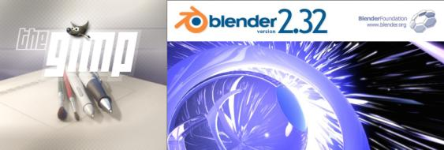
You need to start the GUI and then start gimp or blender
running as applications within the GUI. This is usually as simple as starting
a terminal and typing gimp or blender as the case may be.
Depending upon the sophistication of your interface you can probably also get
them under the "Graphics Applications" menu.
2. Creating the Rings
The 3-d modelling program Blender is an excellent contribution
from the NaN Company and the Blender Foundation to the community. It is
capable of far more than the construction of depth maps as described in this
document. Excellent tutorials are available on-line, or as downloadable
documentation. Start at the Blender
community site for more...
We first start blender and create an empty scene in it. This is
done by typing Ctrl-X in blender and accepting the offer to erase
all objects. This creates a scene with a cube (selected), a camera,
and a lamp. You can further type a twice to select all objects, then
type x to delete all selected objects. Finally, accept the offer to
erase the cube, lamp, and camera. As a result we become bold adventurers who
are traveling light without a lamp or camera!
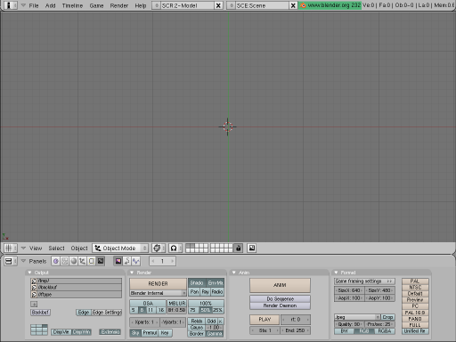
Traveling Light-less
We will now (approximately) follow the tutorial given in the section on "DupliFrames"
in the
blender manual to create the "rings".
First press space to activate the menu to add objects. Select a
"Curve" of type "Nurbs circle" and press the enter key. Unless you
have moved the "3-d cursor" in blender, this should be inserted with its center at
the origin of the co-ordinate system. Now we scale it by a factor of 2 in the
y direction by typing s, y, 2 and entering.
This is the central "path" of the ring.

Follow the circular instruction
Next we add the curve that is the "contour" of the surface. Go to the
object mode by hitting Tab. As before, press space to
get the object addition menu, and select another "Curve" of type "Nurbs
circle". Scale this surface to a reasonable size by typing s,
0.25. Finally, to avoid confusion, rename this curve to "contour" by
typing n, and then edit the name by selecting it with a left mouse
button click.
Now we return to object mode with a tab and select the original
y-stretched circle. Get to the edit menu by typing F9. Under
the menu "Curve and Surface" there is an entry called "BevOb". Select it and
enter the name of the other curve, i.e. "contour" if you followed the last
step of the previous paragraph. The y-stretched circle will now be
used as a "path", and the contour will be "extruded" along it making a ring.
To finish things off, select the "contour" with the right mouse button, grab
it by typing g, and shift it 10 steps to the right and "out of sight"
of the camera by typing x followed by entering 10.
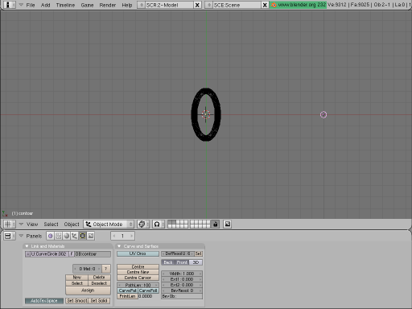
Give me a ring
To create the two other copies of the ring we go as follows. First select
it with the right mouse button and make a linked duplicate by typing
Alt-d. Then rotate it by 90 degrees by typing r and entering
90. Shift to the "side view" by typing the 3/PgDn key on
the Number-Pad. Again rotate by 90 degrees by typing r and entering
90. Now shift to the "front view" by typing 1/End on the
Number-Pad. Make another copy by typing Alt-d and rotate it by 90
degrees by typing r and entering 90. Go back to the "top
view" by typing 7/Home on the Number-Pad and then rotate again by
90 degrees by typing r and entering 90.
To get a better view of the rings we first place the 3-d cursor at the
origin. Then type . (period or dot) to get the rotations to be about
the 3-d cursor (which is at the origin). Select all the rings one by one as
follows: select the first with a right mouse button click and select each of
the others with a right mouse button click with Shift pressed. Now
rotate by 45 degrees around the z-axis by typing r followed
by entering 45. Then shift to the front view by typing 1/End
on the Number-Pad; again rotate by 45 degrees, this time around the
y-axis, by typing r and entering 45. Go back to the
top view by typing 7/Home on the Number-Pad and switch to the "solid"
view by typing z.
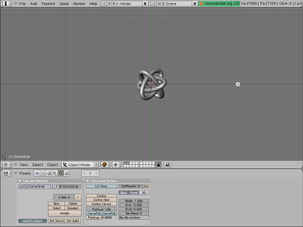
Borromean Rings at last
3. Rendering the depth map
The brain does create a 3-d "feeling" out of the image rendered above but
it is not really a "pop-up" 3-d image. For that we have to create a depth map
version of the image. In blender this is done using a texture. A
texture is attached to a material so we must add material first.
Type F5 to obtain the Materials and Textures menu. The select the
default Material by clicking the button next to the button marked "ADD NEW"
under the "Material" menu. You may also select a new "Material" with "ADD NEW".
Now, the last menu on the right is the "Textures" menu. If the Default texture
is already added then there will be a small "tick" mark next to a button that
says "Tex". Otherwise select the default "Tex" texture with the button next to
the "ADD NEW" button in this menu; alternatively add a new texture if
there is none. Now select the leopard-skin" like button that has a
helper-pop-up which says "Texture buttons". A new set of menus appears. In the
"Texture" menu in this panel select the "Blend" texture.
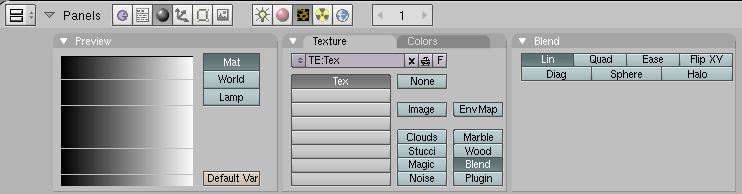
Let it flow...
Go back to the "Material" menus and buttons by selecting the red "sphere"
that has a helper-pop-up which says "Material buttons". Select the "Map
Input Menu". This menu allows us to select the input data that is used to
determine the variation in material that forms the texture. Select the "Glob"
button that makes the "Global" co-ordinates the input data for the texture.
Further select the first "Z" button (next to the "sizeX" slider). Select the
blank buttons next to the "sizeY" and "sizeZ" sliders. This says that the
texture maps the z co-ordinate of the object to the x
co-ordinate of a linear "blend".
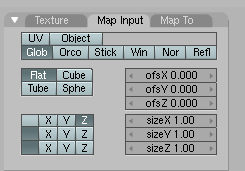
If what goes in is right...
Now we select what this linear blend is output as. Go to the "Map to" menu
at the extreme right. Deselect "Col" (for Colour) and select "Emit" in order
to make the texture emit light in proportion to its z co-ordinate
(which is the co-ordinate that measures the distance from the camera). We also
click the "No RGB" button (which sometimes shows up as "No RG" due to lack of
screen space) so that the blending is just a grayscale from black to white.
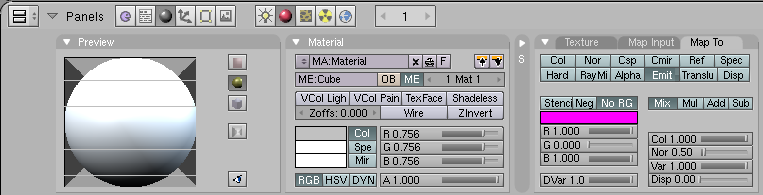
The relevant material
We still do not have a camera to view this! We should be in the top view,
if not then shift to it by typing 7/Home on the Number-Pad. Place the
3-d cursor at the origin (make sure it is the origin in all views!).
Now add a camera with space and then select "Camera" in the menu that
appears. Go the front view and raise the camera 10 steps in the z
direction by typing g followed by z and then entering
10. We need to set the background to a uniform dark gray. You will
notice a new set of menus. Click the numbers next to "HoR", "HoG" and "HoB" in
the "World" menu and set these to "0.1" by entering 0.1. If you type
F12 now you will see a depth map which we need to tweak just a little
more.
First of all we improve the rendering. Type F10 to bring the
"Render" menu. In this menu deselect the "Shado(w)", "EnvMa(p)" and "Gamma"
buttons. Select the rendering to at least "75%" in order to see things more
clearly. Most importantly click the "OSA" (for the over-sampling/anti-aliasing)
which will cause the rings to be smoother. Finally select the output format in
the "Format" menu to be "Targa Raw" instead of "Jpeg" (the default). Also
click the "BW" button since we know the output is a grayscale.
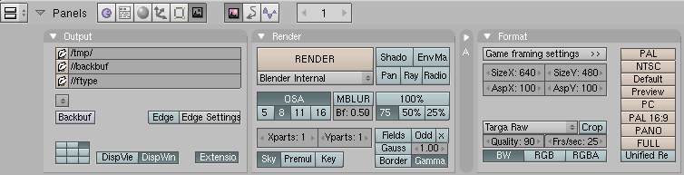
Render it with a Blender
This will give a reasonable depth map. However, you may wish to improve it
a bit more. I felt the "black" in the rings was too dark and so I made the
material emit a little more light by increasing the "Emit" slider in the
"Shaders" menu up to 0.2. Further, the "ofsX" slider was brought up
to 0.3 and the "sizeX" slider was taken down to 0.7.
All rings are gray at night
When you are satisfied with the rendering, go to the "File" near the top
left corner of the blender window and "Save Image". You may want to
"Save" the .blend file as well. I will assume below that you have
saved the image as borromean.tga; moreover, I will assume that the
image is of size 640x480 which is the default size.
4. Creating the background texture
The GNU Image manipulation program is an absolutely marvelous program. I can
(and have) played with it for hours! We will put this very versatile program to
the limited use of creating a nice background texture for the stereographic
image.
We open gimp. With the "File" menu or by typing Ctrl-n we
create a canvas of size 640x480. One way to quickly create a texture of the
type we need is to select the "Fill" tool from the "Tools" menu or by typing
B. Then choose a nice flat pattern like "Leopard", "Rain" or
"Sky". From the "Tool Options" dialog we then select "Pattern Fill" and fill
the canvas with this pattern.
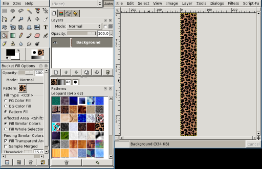
A leopard-skin pill-box
Now save the pattern as texture.png using the "File" menu or using
Ctrl-S.
5. Using stereograph
The stereograph command line program can generate a number of
different types of stereograms. Even transparent ones that contain two images
in one! We will create a rather simple stereogram with the command:
stereograph -R -a -t texture.png -b borromean.tga -o stereo.png
A brief explanation of these options is in order. The -t option
clearly indicates the file that contains the texture while the -b
option indicates the file that contains the depth map; finally the -o
options indicates where the output should go. The -a options tells
stereograph to enable "anti-aliasing" and the
-R option is an experimental one to get rid of "artefacts".
A three ring circus, perhaps
If you find it difficult to "see" stereograms you can add the option
-A which will put two triangles in the image that will assist the
viewing. That's it! The file
stereo.png is a stereogram image
file. You can view it with your favourite image viewing software or you
can even open it in gimp to view it.
6. Afterword
I first learnt about Single Image Stereograms (SIS--which are also known
commercially as MagicEye(TM) images) because of the gift to me by my sibling of
a MagicEye book. Initially I appreciated the beautiful textures that were on
the glossy pages of this book, but could not verify the claim of the creators
that there were three-dimensional images that would "pop out" of the page. One
day my aged ancestor chanced to see the cover of the book and said something
like "What a strange elephant!" It is only then that I tried to see the images
and was successful (Thom's morphogenesis sometimes acts extremely
locally).
There are numerous
sources of information (especially on the World Wide Web) on how these
images "work". On reading these and attempting to create some on my own it
became clear to me that the GNU Image Manipulation Program GIMP is an excellent program to create
the textures. For a while there was also a GIMP plugin which would
create the SIS images from a texture and a depth map. This was replaced quite
soon with the excellent stereograph program. However, for a
long while I could find no reasonable way to create the depth maps short of
writing a program for each such map or some other form of "hacking". Whenever,
I looked at 3-d scene creating software the mention of "raytracing",
"textures", "lighting" and "rendering" would confuse me terribly--I'm a
mathematician and not a physicist after all! Another barrier was the fact
that the most popular such software povray was considered "non-free" by
Debian. I had no wish to invest time and effort learning to use a program that
could perhaps become unavailable to me at some point in the future.
Sometime last year I chanced upon blender, its excellent manual,
and more than a few tutorials for it.
Thanks to the documentation, the terms above acquired a "real"
mathematical meaning. Indeed it became clear to me that blender could
become for 3-d drawing what xfig
already was for 2-d. Since the latter was already on my list of great graphics
tools I decided to learn blender at the next available opportunity.
This opportunity was the decision of our Institute (IMSc) to create a logo for
itself through a "contest". While the logo "material"-ised quite nicely with
(and without!) blender I still could not get the depth maps that I
was looking for. It was only by repeatedly reading the blender manual
for explanations on "lighting", "material", "texture" and "rendering" that I
finally chanced upon the method that is described here.
The end result has been this tutorial on creating a 3-d SIS image of the
Borromean Rings. Since writing this I have learnt from the "Linux Artist" site that there
are many more 3-d drawing tools like blender.
As a teacher who comes from a family of teachers I cannot prevent myself
from giving a few exercises:
- Beyond the Event Horizon:
- Make your own stereogram of something else using some other Open Source
tools. There's More Than One Way To Do It!
Non-Mathematical:
- Find all the references to artists of the 70's, 80's and 90's in this
text.
Mathematical:
- Find out more about Borromean rings, trefoil knots, Nurbs and other
mathematical entities mentioned in the text.
Footnote:
In other words, don't even
touch your mouse unless you really need to go somewhere!
![[BIO]](../gx/authors/kapil.jpg) Kapil Hari Paranjape has been a ``hack''-er since his punch-card days.
Specifically, this means that he has never written a ``real'' program.
He has merely tinkered with programs written by others. After playing
with Minix in 1990-91 he thought of writing his first program---a
``genuine'' *nix kernel for the x86 class of machines. Luckily for him a
certain L. Torvalds got there first---thereby saving him the trouble
(once again) of actually writing code. In eternal gratitude he has spent
a lot of time tinkering with and promoting Linux and GNU since those
days---much to the dismay of many around him who think he should
concentrate on mathematical research---which is his paying job. The
interplay between actual running programs, what can be computed in
principle and what can be shown to exist continues to fascinate him.
Kapil Hari Paranjape has been a ``hack''-er since his punch-card days.
Specifically, this means that he has never written a ``real'' program.
He has merely tinkered with programs written by others. After playing
with Minix in 1990-91 he thought of writing his first program---a
``genuine'' *nix kernel for the x86 class of machines. Luckily for him a
certain L. Torvalds got there first---thereby saving him the trouble
(once again) of actually writing code. In eternal gratitude he has spent
a lot of time tinkering with and promoting Linux and GNU since those
days---much to the dismay of many around him who think he should
concentrate on mathematical research---which is his paying job. The
interplay between actual running programs, what can be computed in
principle and what can be shown to exist continues to fascinate him.
Copyright © 2004, Kapil Hari Paranjape. Released under the
Open Publication license
unless otherwise noted in the body of the article. Linux Gazette is not
produced, sponsored, or endorsed by its prior host, SSC, Inc.
Published in Issue 104 of Linux Gazette, July 2004
Automatic Backups with rsync and Anacron
By Barry O'Donovan
1. Introduction
The thing about backups is that they can just be a pain. Everyone
knows just how important they are, but very few people actually take
the time to perform proper backups. Even after they have felt the pain of
losing all those important files.
In this article I am going to show you how to quickly set up your computer for
simple, hassle-free, and transparent backups using only rsync and cron (or
Anacron). The premise is simple: every night your computer will make an
automatic mirror of all the files you wish to backup, and at chosen intervals
these mirrors will be archived and kept for a specified period of time.
Before you get our hands dirty on actual implementation you need to design
your own backup policy. In section 3 I discuss what a backup policy should and
should not be. I will then introduce the necessary background information on
rsync and cron separately. Finally, I will put it all together leaving you with
a simple but effective backup regime.
2. Intended Audience
This article and the presented backup procedure is intended for anyone wishing
to keep an effective backup of their important data. It is definitely not
intended for large organisations or businesses with mission critical data. I
would imagine the ideal candidates would include: home users, home office/small
office users, students/postgraduates, and researchers.
3. Backup Policies
A common misconception among many people is that a good backup policy is as
simple as making a regular copy of your data ("mirroring your data"),
always overwriting the previous copy. This, although more effort than most
might make, is almost as bad as doing nothing.
Consider, for example, if one of your files becomes corrupt over time. It takes
you a week or two before you use it again. In that time, you have made two
"backups". You open your file to find your data destroyed. "But", you think to
yourself, "that's alright, I'll just turn to my backup". You open your backup
to find the exact same corrupted file. You realise only too late how useless
your backup policy was.
Most of us have hundreds, if not thousands, of important files in our home
directories; address books, e-mails, letters, work related data, programs we
have been working on, etc. Some of these files we might use every week, while
others might not be looked at for months or even years.
A good backup policy is one which takes "snapshots" of your data and
keeps them for a specified period of time. It is up to each individual to
decide just how many snapshots to keep and at what intervals. Often this will
be decided for you by storage limitations. Where possible, data that changes
regularly will benefit from snapshots of smaller intervals, while data that
rarely changes requires fewer intervals. The following table demonstrates my
own backup procedure:
| Data |
Change Freq. |
Size |
Daily Mirror |
Weekly Snapshots |
Monthly Snapshots |
Space Required |
|
1 |
2 |
3 |
1 |
2 |
3 |
4 |
6 |
12 |
|
| E-mails |
Daily |
100Mb |
Y |
Y |
Y |
Y |
Y |
N |
Y |
N |
Y |
Y |
500Mb |
| MySQL Data |
Daily |
30Mb |
Y |
Y |
N |
N |
Y |
N |
Y |
N |
Y |
N |
70Mb |
| Website |
Monthly |
900Mb |
Y |
Y |
N |
N |
Y |
N |
N |
Y |
N |
N |
3,200Mb |
/etc |
2-3 Weeks |
28Mb |
Y |
Y |
Y |
Y |
Y |
Y |
Y |
Y |
Y |
Y |
200Mb |
| Thesis |
Daily |
25Mb |
Y |
Y |
Y |
Y |
Y |
Y |
Y |
Y |
Y |
N |
190Mb |
| Research Code |
Rarely |
60Mb |
Y |
Y |
N |
N |
Y |
N |
Y |
N |
Y |
Y |
200Mb |
| Total space required: |
4,360Mb |
Each of the snapshots is compressed to reduce space. The largest data in my
policy is the website. This rarely changes so I keep only a few snapshots. My
systems /etc directory also changes rarely, but as it is only 28Mb
I have chosen to keep all possible snapshots. You should now make a similar
table and decide which data you want to backup and how often.
The next consideration is where to store your backups. Again, this is your own
choice. Some locations simply won't be available to you while others might just
seem like overkill. The following list gives the various options listed from
the best to the worst:
- 1. On a networked computer in a remote location (such as backing up
from home to your office computer or vice-versa)
- This is clearly the ideal situation. Your data will be protected from fire,
theft, electrical outages, power surges, water/sprinkler damage, etc.
- 2. On a networked computer in another room of you home or office
- Not as good as (1) above as both original and backup computers could be
caught by fire, power surges, etc.
- 3. On a second disk drive in your computer
- Far better than having no backups at all, and you will be protected if one
of the hard drives fails, but you will still be vulnerable to fire, theft, etc.
I would certainly recommend a power surge protector if your PSU (power supply
unit) doesn't have one built in.
- 4. On a separate partition on the same disk drive
- 5. On the same partition on the same disk drive
- The last two on my list are by far the worst. This couldn't really be
considered a backup policy of merit. Any hard drive problems, a virus, an
accidental mistake, etc could ruin you. You are really only insuring yourself
against accidental deletion or similar operation on the original files.
If you do not have access to a remote computer yourself, then consider joining
up with a friend; each of you backing up to the others computer. Security
concerns can be addressed by encrypting the data before/during transfer and
only placing the encrypted versions on the remote computer.
4. rsync - The Fast, Flexible File Transfer Utility
rsync is a very fast and flexible file transfer utility. It uses its own
"remote update" protocol to transfer just the differences between two sets of
files. It can operate locally or across a network link using rcp, ssh or its
own daemon. rsync is included with most standard Linux distributions by
default, or it can be downloaded from its website (http://rsync.samba.org).
We are going to use rsync to mirror our files every night. rsync is the ideal
choice as it will only transfer new files, the differences between
existing files that have changed, and remove old files, minimising the
bandwidth usage for dial-up/broadband customers.
The mirrors are easiest to implement when we take entire directories and its
sub-directories. Let's take the case where you are mirroring all your e-mail
files from your home computer to your office computer. We would use rsync as
follows:
rsync -r -e ssh --delete /home/username/mail username@mycomputer.mycompany.com:/backups/mail
where:
-r- Instructs rsync to copy directories recursively.
-e ssh- Tells rsync to use the ssh remote shell. More about this below.
--delete- Instructs rsync to delete files on the receiving side which do not exist
on the sending side.
/home/username/mail- The directory we are mirroring.
username@mycomputer.mycompany.com:/backups/mail- Log in as user
username on
mycomputer.mycompany.com and create/update the mirror in
/backups/mail
This will create a mirror of /home/username/mail on
mycomputer.mycompany.com under the directory
/backups/mail/mail. This is what we want. If you wanted the
reverse (backing-up from mycomputer.mycompany.com to your home
computer) you would simply switch the source and destination:
rsync -r -e ssh --delete username@mycomputer.mycompany.com:/home/username/mail /backups/mail
I recommend that you use the ssh protocol to ensure the secrecy of your data
while it is being transferred. If you are performing this backup on a closed
network, feel free to use the older rsh protocol or rsync's own daemon. Using
networked backups creates one more problem: we want this to be automatic, with
no user interaction, but using rsh or ssh generally requires a password to be
entered. We will overcome this by using public/private keys
without pass-phrases to achieve this.
4.1 Setting up password-less authentication for ssh
This article is not intended as a tutorial on ssh so I will only provide a
brief instruction on setting up private/public key authentication using ssh.
Please refer to the ssh documentation for a more thorough discussion.
The following two commands will set up password-less authentication from your
computer to mycomputer.mycompany.com:
$ ssh-keygen -b 1024 -t rsa -f /home/username/.ssh/id_rsa
(do not enter a pass-phrase - leave it blank)
$ scp /home/username/.ssh/id_rsa.pub username@mycomputer.mycompany.com:/home/username/.ssh/authorized_keys
Usually any problems encountered are down to the permissions of the various
key files. Use ssh in verbose mode (ssh -v) and check the ssh
daemon logs on both machines (usually /var/log/secure).
In using this method it is important for you to be aware of the security
concerns that arise. The ssh-keygen command produced two files:
/home/username/.ssh/id_rsa: the private key
/home/username/.ssh/id_rsa.pub: the public key
You should ensure the permissions of the private key are
-rw------- (i.e., only readable by the owner). This file is the
equivalent of having a text file containing your login password to your account
at
mycomputer.mycompany.com;
anyone who gets their hands
on this file will be able to log into that account without knowing your
password. However, any potential hacker must first gain access to your
home computer in order to get at this file.
If you use this method you should also consider the following security measures:
- ensure both machines have an effective firewall configured (see my article
in last month's edition here). You can
use some of the features of iptables such as specifying the exact IPs
that are allowed access to the system.
- set-up a new user account on the backup machine and use that account for
backups only.
5. cron - Daemon to Execute Scheduled Commands
cron is an integral part of most Linux distributions. It is used to execute
commands at specific times according to a schedule you set. We will use it to
set-up a nightly mirror of all the files we wish to backup, and to create the
snapshots at the intervals we determined in section 3.
Each user on a Linux system has their own cron table ("crontab") which
contains the schedule of commands. This can be listed using
'crontab -l', removed with 'crontab -r' and edited
with 'crontab -e'. Let's add the daily mirror command so that
it occurs at 2am every day by placing the following in our crontab:
00 02 * * * rsync -r -e ssh --delete /home/username/mail username@mycomputer.mycompany.com:/backups/mail
where the five fields (0 2 * * *) are (respectively):
| Field | Allowed Values |
minute
hour
day of month
month
day of week
|
0-59
0-23
1-31
1-12
0-7*
|
( *0 or 7 is Sunday)
So, in our case, we will mirror the contents of
/home/username/mail at 02:00 on every day of every month. We can
place similar entries for all other directories you wish to mirror.
Alternatively, we could create a script containing all the entries and use cron
to execute that script.
There are two useful environment variables you can also set when editing the
crontab to override the defaults:
SHELL=/bin/sh
MAILTO=username
The MAILTO is important as all error messages will only be sent
by e-mail and so you will notified if your backups are failing. Refer to the
crontab man page for more information and examples.
6. Putting It All Together
Now that we have the basics of rsync and cron, all we have left to do is to put
them all together to create our backup policy. Let's continue with the example
where your home computer is sending its daily mirror to your office computer.
You office computer will now be responsible for the remainder of the backup
policy: the snapshots at the predefined intervals. We will use another crontab
on the office machine to accomplish this and I will demonstrate using the
schedule for my thesis from section 3.
The method is quite simple. For example, every Sunday we will move the 3 week
old snapshot to 1 month old snapshot, the 2 week old to the 3 week old, the 1
week old to the 2 week old and archive the mirror to the 1 week old. So,
depending on the time of the week, the 3 week old snapshot could be as young
as 2 weeks or as old as 3 weeks.
My schedule requires snapshots that are 1, 2, and 3 weeks old and 1, 2, 3, 4, and 6
months old. We will work from the oldest down (as otherwise we would only be
propagating the new snapshot):
# Back up mail files with snapshots of 6, 4, 3, 2, 1 months and 3, 2, 1 weeks
# Order 4m->6m, 3m->4m, 2m->3m, 1m->2m, 3w->1m, 2w->3w, 1w->2w, mirror->1w
# At 3am on the 1st of Jan,Mar,May,Jul,Sep,Nov copy the 4m to the 6m
00 03 1 1,3,5,7,9,11 * cp -f /backups/thesis/backup/4month.tar.gz /backups/thesis/backup/6month.tar.gz
# At 3.02am on the 1st of every month move the 3m to the 4m (and continue for other months)
02 03 1 * * cp -f /backups/thesis/backup/3month.tar.gz /backups/thesis/backup/4month.tar.gz
04 03 1 * * cp -f /backups/thesis/backup/2month.tar.gz /backups/thesis/backup/3month.tar.gz
06 03 1 * * cp -f /backups/thesis/backup/1month.tar.gz /backups/thesis/backup/2month.tar.gz
08 03 1 * * cp -f /backups/thesis/backup/3week.tar.gz /backups/thesis/backup/1month.tar.gz
# And then every Sunday take care of the weekly snapshots and the archiving of the mirror
10 03 * * 0 cp -f /backups/thesis/backup/2week.tar.gz /backups/thesis/backup/3week.tar.gz
12 03 * * 0 cp -f /backups/thesis/backup/1week.tar.gz /backups/thesis/backup/2week.tar.gz
14 03 * * 0 rm -f /backups/thesis/backup/1week.tar.gz
16 03 * * 0 tar zcf /backups/thesis/backup/1week.tar.gz /backups/thesis/thesis/*
And that my friends is your automatic, hassle-free, and effective backup system.
A few points on the above:
- I have placed each command 2 minutes apart to allow the previous one to
complete. Adjust this depending on your own file sizes, system load, hard disk
speed, etc.
- In the example in section 5 for the automatic mirroring I set the mirror
time to 2 a.m. Ensure, as I have done here, that the snapshots get created after
the mirror (i.e., allow enough time for the mirroring to complete)
- Before the first run you should ensure all directories are created,
archive the existing mirror, and copy it to all the required files (copy
1week.tar.gz to 2week.tar.gz,
3week.tar.gz, etc) to prevent unnecessary error messages
7. Anacron vs. cron
Anacron is a periodic command scheduler similar to some uses of cron, but it
does not assume that the system is running continuously. It can therefore be
used for our backup policy on systems that don't run 24 hours a day. Just like
rsync and cron, Anacron is now part of most standard Linux distributions.
Every time Anacron is run, it reads a configuration file that specifies the
jobs Anacron controls, and their periods in days. If a job wasn't executed in
the last n days, where n is the period of that job, Anacron executes it. The
configuration file is usually /etc/anacrontab.
For the daily mirroring we could add a line to this configuration file such as:
1 20 mirror rsync -r -e ssh --delete /home/username/thesis username@mycomputer.mycompany.com:/backups/thesis
where the fields mean:
1- the period in days indicating how often this command should be executed
20- the delay in minutes after Anacron begins before it should execute this
command
mirror- a unique identifier for this job so Anacron can keep track of when it was
last executed
rsync...- the command to execute
And similarly on the backup machine we would place the following in the Anacron configuration file:
# Back up mail files with snapshots of 6,4,3,2,1 months and 3,2,1 weeks
# Order 4m->6m, 3m->4m, 2m->3m, 1m->2m, 3w->1m, 2w->3w, 1w->2w, mirror->1w
# Every 60 days (2 months)
60 20 bup1 cp -f /backups/thesis/backup/4month.tar.gz /backups/thesis/backup/6month.tar.gz
# every 30 days (1 month)
30 22 bup2 cp -f /backups/thesis/backup/3month.tar.gz /backups/thesis/backup/4month.tar.gz
30 24 bup3 cp -f /backups/thesis/backup/2month.tar.gz /backups/thesis/backup/3month.tar.gz
30 26 bup4 cp -f /backups/thesis/backup/1month.tar.gz /backups/thesis/backup/2month.tar.gz
30 28 bup5 cp -f /backups/thesis/backup/3week.tar.gz /backups/thesis/backup/1month.tar.gz
# And every 7 days
7 30 bup5 cp -f /backups/thesis/backup/2week.tar.gz /backups/thesis/backup/3week.tar.gz
7 32 bup7 cp -f /backups/thesis/backup/1week.tar.gz /backups/thesis/backup/2week.tar.gz7
7 34 bup8 rm -f /backups/thesis/backup/1week.tar.gz
7 36 bup9 tar zcf /backups/thesis/backup/1week.tar.gz /backups/thesis/thesis/*
A few notes on this:
- You really need to plan well if using Anacron. What if the office machine
is regularly off while the home machine is trying to rsync? Anacron can work
best in this situation if it is the source machine that is not always running;
it can perform the rsync and then take care of the snapshots.
- Ensure you make proper use of the delay time to ensure one job has
finished before the other starts
- Anacron is also ideal for laptop users
8. Resources
For a more professional backup solution:
Get advance notification before your hard disk fails:
![[BIO]](../gx/authors/odonovan.jpg) Barry O'Donovan graduated from the National University of Ireland, Galway
with a B.Sc. (Hons) in computer science and mathematics. He is currently
completing a Ph.D. in computer science with the Information Hiding Laboratory, University
College Dublin, Ireland in the area of audio watermarking.
Barry O'Donovan graduated from the National University of Ireland, Galway
with a B.Sc. (Hons) in computer science and mathematics. He is currently
completing a Ph.D. in computer science with the Information Hiding Laboratory, University
College Dublin, Ireland in the area of audio watermarking.
Barry has been using Linux since 1997 and his current flavor of choice
is Fedora Core. He is a member of the Irish
Linux Users Group. Whenever he's not doing his Ph.D. he can usually be
found supporting his finances by doing some work for Open Hosting, in the pub with friends or running in the local
park.
Copyright © 2004, Barry O'Donovan. Released under the
Open Publication license
unless otherwise noted in the body of the article. Linux Gazette is not
produced, sponsored, or endorsed by its prior host, SSC, Inc.
Published in Issue 104 of Linux Gazette, July 2004
Songs in the Key of Tux: Audacity
By Jimmy O'Regan
As noted in last month's Mailbag,
I was unable to write "Songs in the Key of Tux" last month. My intention
was to take a look at Linux-based recording software, but I was
disheartened by some work-related RSI in my left arm - which is pretty
important to a right-handed guitarist - and by an accident which befell
Dan, my drummer.
The beat, as any self-respecting musician will know, is central to any
form of music; and any attempt to record without a beat as a guide will be
pretty disastrous - especially if, like me, you tend to use a lot of tempo
changes. My efforts at creating my own drum tracks in Songwrite haven't
been very impressive, so I was relying on Dan to provide this essential
piece.
Dan is recovering nicely after a car crash which left him with a cracked
vertebra. He even managed to fulfill the "Spinal Tap" drummer requirements
by dying (clinically) not just once, but twice! While he is itching to get
back on to a drum stool, or even to use a drum machine, I'm not going to
trouble him for another few months - luckily I managed to find another
way of covering recording software.
I was initially approaching the idea of covering recording software as a
means of fulfilling my ambition to record some of my own music, and was
about to jump in at the deep end, and start using Ardour. Ardour is a
complicated piece of software, which can more or less match ProTools in
terms of features. (For those who don't know, ProTools is the equivalent of
a full recording studio in software. Most albums produced since the late
90s have used ProTools at some stage of the recording process).
Audacity
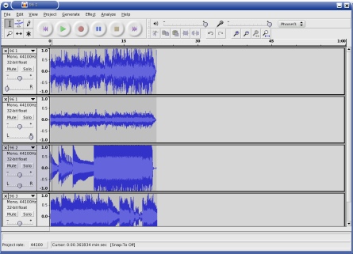
Ardour is overkill for most projects. There are, however, several pieces
of software for less ambitious projects. Audacity is a cross-platform audio
editor with multi-track capabilities. It is capable of meeting the needs of
a musician new to the recording process, but it is also suitable for
"everyone else".
Most people find themselves in need of good audio editing software on
occasion, and Audacity can meet most, if not all, of these needs. For
common tasks such as adding a simple voice-over to a video, while keeping
the original soundtrack, to removing the needle hiss from vinyl recordings,
Audacity has built in features for most audio editing tasks.
I'm going to cover a few simple examples this month. I came across a few
files my brother, Joe, dumped from his portable studio, a Zoom PS-02, and
got plenty of opportunities to demonstrate some simple audio editing tasks.
The Zoom PS-02 is a pocket sized digital 3-track recorder. It stores its
data on Smart Media cards, and Zoom provide a Windows-based executable to
convert the tracks to wav files. As far as I recall, it runs fairly well
under Wine; but I didn't have to trouble myself with trying it out, as Joe
provided me with converted files.
I have found LGPLed source for a WinAmp plugin to play these files,
courtesy of Randy Gordon. I even attempted to make it into an XMMS plugin,
but I no longer have any sample files. I've included it, in case anyone wants to give
it a try, but bear in mind that I'm not a C programmer, and that the code
is probably infested with bugs.
Basic editing
The first step in editing an audio file is to import the track. Go to
"Project->Import Audio", or type Ctrl-I, and select the file
you wish to work on. Each imported file is given its own track, or pair of
tracks in the case of stereo files. As is customary with audio editing
software, each track has a set of controls to the left of the screen. Here
you will find the volume and panning controls, underneath the track name.
On the left of the track name is an icon to close the track, on the right
is an arrow. Clicking on this arrow gives a menu of operations which may be
performed on the file. If you wish to edit stereo tracks individually, you
can choose "Split Stereo Track" from this menu.
If you just want to combine the tracks recorded using another recorder,
such as the PS-02, you can simply import each track, set the panning and
volume, and enjoy the result. If you're not going to do too much editing on
a track, I recommend you don't save the project - Audacity's projects can
get very large, very quickly. I also recommend you don't export directly to
.ogg or .mp3 - these files are only exported as mono.
Instead, export to .wav, and use oggenc to encode it. I
learned this the hard way, creating the file pictured in the screenshot
above!
Editing Tools
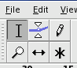
The first tool you may find useful when editing is the "Selection Tool".
In the tool palette, pictured to the right, this is on the top left, and is
selected by default. With this tool, you can click on an area of song to
hear playback from that point, or select an area to play back that area
only, or to apply an effect, or to use one of the other tools. The
selection is highlighted in grey, and you may increase or decrease its size
by placing the mouse pointed at either side, along the vertical. The mouse
pointer changes to an arrow, pointing towards the outside of the selection.
For this article, I have been performing some basic tasks on a recording
of my band jamming, which Joe made around two years ago. The track is
improvised, so I wanted to cut out each distinct part - we're not likely to
use anything from it, but, it's better to have the parts rather than having
to site through all 15 minutes of it, should we change our minds. This is a recording of a simple
selection.
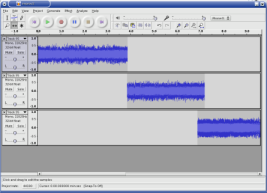
As well as this, you can use selections to remove parts of the sound you
don't want. If you don't want the part you've selected, choose
"Edit->Silence" (Ctrl-L); to remove the rest of the sound,
apart from what you've selected, choose "Edit->Trim" (Ctrl-T)
For this situation, where several of the parts are similar, it's best to
cut out the repetition of parts, and join together separate pieces. The
best method I found is to copy each part containing similarities to a new
window ("File->New", as you might expect), select an example, and
duplicate that part of the track - "Edit->Duplicate", or
Ctrl-D. Once I have my parts, I can remove the original portion,
and use the "Time Shift Tool" (bottom centre in the palette) to move each
part closer to each other - otherwise I would be left with silence. You can
click here to hear what that sounds
like (though I wasn't very careful in my editing).
Having separate pieces blend into each other like that obviously isn't
the best approach, so next I turned to the "Envelope Tool" (top centre).
Although there are plug-ins which can fade in out out selected areas, the
Envelope Tool allows you to draw volume increases or decreases with much
greater control. Again, you can click
to hear how this sounds. Still rough around the edges, but a definite
improvement, in my opinion.
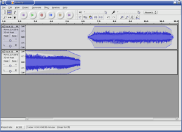
So, we've covered three of the tools available, but that leaves three
remaining. Of these, the "Multi Tool" (bottom right) will probably become
the most useful as you gain experience with Audacity, as it combines the
functions of the other tools, followed by the "Zoom Tool" (bottom left).
The Zoom Tool allows you to get a closer look at the samples - useful for
getting better selection. With the Zoom Tool selected, the left mouse
button zooms in, right zooms out, and middle returns to normal view; though
it's worth noting that zooming can be done from the keyboard
(Ctrl-1, Ctrl-3 and Ctrl-2, respectively).
The one tool I don't see myself having any use for, however, is the
"Draw Tool". This, at an appropriate zoom level, lets you alter individual
sound samples. I can see how this could be useful, for fixing the pitch of
notes, etc., but I don't see myself using it, somehow.
Closing words
Here ends my quick tour of editing with Audacity. Next month, I'll go
over the basics of recording. Audacity has a built in metronome, so if I
stick to something simple, I should be set. I'm chomping at the bit to
start recording, especially since Joe bought a Washburn Dime333 - one of
the nicest guitars I've ever held.
If anyone has any feedback, feel free to mail it to me, though if you
have any tips to offer, it would be better if you sent it to The Answer Gang.
After my last article, I received mail from Bob van der Poel, author of
CountBeats
and MMA - Musical
MIDI Accompaniment, asking if I'd take a look at his software. I'd seen
MMA before, but lost the address. MMA generates a MIDI file from a text
file, which a musician can use as accompaniment in the absence of another
musician. Input specifies the tempo, metre, and the chord progressions, and
MMA generates music from it. Having seen music generators before, I was
slightly wary, but MMA's generated music is very, for want of a better
word, musical.
I was equally impressed with CountBeats, which is a useful tool for the
music theory illiterate such as myself. Tap on your keyboard, and it tells
you what tempo you're using. A simple idea, and one that really shouldn't
be necessary, but I've had to avoid making tablature for a couple of songs
because I simply couldn't get the tempos right.
I also received mail from Cameron Horsburgh, who wrote to inform me
about a capability of Lilypond which I'd overlooked:
I was also interested in your comment about using Songwrite to write
articles via Lilypond and LaTex. I don't know if you're aware of the
lilypond-book feature in Lilypond. This is a great feature. You can put
a block of Lilypond code in a LaTex or html file, run lilypond-book over
it and end up with music fragments in your piece of work.
So instead of writing articles inside Songwrite, I would export the
Lilypond code, place it in a block in a LaTex file, and run pdflatex (or
whatever). And of course, it works the same for web pages too!
Something else that I noticed is that, because Songwrite is written in
Python, the file handling code is able to accept URLs (though this only
works on the command line). So if you type songwrite
http://somehost/somefile, Songwrite will fetch it from the Internet
for you and open it.
Here are some files to try this out with:
11Apr04.sw.xml,
17Jun04.sw.xml,
18Jun04.sw.xml,
29March.sw.xml,
3April04.sw.xml,
4April04.sw.xml,
8Apr04.sw.xml
As a final note, anyone wishing to learn music theory or the guitar, or
anyone who feels they can teach something about them, should bookmark the
free textbooks on music
theory and guitar being
written at Wikibooks.
They're works in progress, but are showing some promise.
I'd also like to plug Utopia Banished,
my favourite Magnatune band; and having found some of the Irish songs of my
teens on the net, would like to point to
them. 'Til next month!
![[BIO]](../gx/2004/authors/oregan.jpg) Jimmy is a single father of one, who enjoys long walks... Oh, right.
Jimmy is a single father of one, who enjoys long walks... Oh, right.
Jimmy has been using computers from the tender age of seven, when his father
inherited an Amstrad PCW8256. After a few brief flirtations with an Atari ST
and numerous versions of DOS and Windows, Jimmy was introduced to Linux in 1998
and hasn't looked back.
In his spare time, Jimmy likes to play guitar and read: not at the same time,
but the picks make handy bookmarks.
Copyright © 2004, Jimmy O'Regan. Released under the
Open Publication license
unless otherwise noted in the body of the article. Linux Gazette is not
produced, sponsored, or endorsed by its prior host, SSC, Inc.
Published in Issue 104 of Linux Gazette, July 2004
Desktop Matters!: A guide to Windows technologies for Linux users
By Jimmy O'Regan
A reasonable question, and one which will not go unasked (no matter how
well I explain this!), is: "Why should Linux users read about Windows
technologies?"
The main answer is: because so much development on Linux is influenced
by Windows. Windows is the most common platform at the moment; most new
users coming to Linux are coming from Windows, but more importantly, so are
a lot of new developers.
Now, I don't mean to suggest that the technologies presented here
originated in Windows, or that the equivalents available on Linux are
limited to merely following the Windows version. In many cases, especially
in the desktop, Linux technologies are arguably better, though in other
cases, arguably worse.
The main motivation behind writing this is to have a document to point
to when writing about desktop topics. I have already compared DCOP to OLE Automation; Tom Brown
has also made this comparison. As many articles on
desktop topics are written with the intention of introducing former Windows
users to Linux, I feel it is helpful to have a glossary of sorts to point
them to.
I also feel there would be no harm in introducing long-time Linux users
to the concepts of Windows, to better aid those who would attempt to aid
these new users, and to help them to understand why some software is
designed the way it is. For example, most Linux types dismiss Visual Basic,
without understanding why Visual Basic is useful to Windows
developers.
A note about Wine
Most people know about Wine, even
if only vaguely. Wine is an implementation of the Windows API, with a
loader for Windows binaries. Using Wine, many Windows applications can be
run on Linux; and several open source projects for Windows can be compiled
using Winelib.
One problem with Wine is that it can't be used as a regular Unix
library, because it has to be binary compatible with Windows to work.
Because of this, you can't link to Wine to get an easy DLL loader. Work is
being done in this area: Mono is using Wine to develop its implementation
of .Net's Windows Forms, and Ardour.
Another, larger problem, is that the Windows API contains several
hacks to support backwards compatibility. After I started writing this,
Slashdot posted this article,
which provides me with a way of explaining why Wine has such a hard task in
implementing the Windows API:
I first heard about this from one of the developers of the hit game
SimCity, who told me that there was a critical bug in his application: it
used memory right after freeing it, a major no-no that happened to
work OK on DOS but would not work under Windows where memory that is freed
is likely to be snatched up by another running application right away. The
testers on the Windows team were going through various popular
applications, testing them to make sure they worked OK, but SimCity kept
crashing. They reported this to the Windows developers, who disassembled
SimCity, stepped through it in a debugger, found the bug, and added
special code that checked if SimCity was running, and if it did,
ran the memory allocator in a special mode in which you could still use
memory after freeing it.
Yet another problem is that much of Windows is undocumented. From the
article quoted above, I was lead to the weblog of Raymond Chen,
one of the developers of Windows, where I found this
quote from another Windows developer, which explains why: "The reason
we can't publish the structures is that it precludes our changing them
FOREVER. I mean FOREVER." (This
page has more comments on this, though the main story is pretty
amusing, considering that many people could be forgiven for thinking that
this is what Microsoft does).
Language integration
One of the reasons behind the design of Windows is the goal of language
integration. Most of the technologies in Windows seem to have been written
for Visual Basic, but were made part of the operating system so that other
languages could take advantage of them. This places an extra burden on
language developers, but makes life easier for the developers who use these
languages.
On Windows, a developer can access a COM object just as easily from
Python as they can from C++ or Visual Basic. On Linux, they have several
hoops to jump through first. A Perl or Python programmer who wants to use a
C library must find a wrapper for their language first; if one is not
available, they must write one of their own. A C programmer wishing to
access a C++ library must write a wrapper library in C++, which exposes
functions which may be called from C.
There are equivalents available; Perl's Inline modules allow Perl
programmers to embed other languages inside Perl code. This allows the reuse
of libraries, no matter what language they are written in; but it
also requires you to be able to write enough of another language to access
the functions you want.
GNOME's use of CORBA allows for
language integration on a similar level to that present on Windows,
especially with the Perl and Python bindings, but
unfortunately these came too late. As it is, it is possible to fully access
any CORBA object in GNOME, and to write CORBA servers, in both Perl and Python,
but CORBA has all but been discarded from GNOME as a mechanism for
calling functions. Ximian have focused their attention on Mono as a means
of getting this integration, while other GNOME developers are looking at D-BUS.
OpenOffice.org and Mozilla have got the sort of framework which
allows the same level of language integration as Windows. This is not
surprising though, as both UNO and XPCOM have designs based on COM's.
Compatibility
Of much more importance is the compatibility between the various aspects
of Windows. In Linux, though there are equivalents available for every
individual part of Windows, these come from different projects, and several
of these parts are incompatible.
There are three main collections of office software for Linux; OpenOffice,
KOffice, and GNOME Office. Because components are incompatible, if I use KWord,
I can't use Gnumeric for my embedded sales figures. I have to use KSpread. If
I use OOCalc, I can't have an embedded Dia drawing.
As I mentioned, KDE, GNOME, OpenOffice, and Mozilla each have different
component systems. Now, the situation isn't as bad as it could have been,
as the nice people at Sun have written software to allow OpenOffice to be
used as a Bonobo component, as a Netscape plugin, and to access XPCOM
components, which they use for various purposes; and KDE have a technology
called XParts which allows non-KDE components to be embedded as KParts
(though not without a little hacking - only Mozilla is supported, though
there is also the Cuckooo project to
use OOo as a KPart), as well as QtGtk, which allows Gtk
apps to use Qt dialogues - software using this library could, for example,
display the KDE file dialogue, which allows KDE's IOSlaves to work within the
GNOME app (Ars Technica has an overview
of KDE's technologies). There is also a Bonobo plugin for Mozilla.
Other compatibility problems exist; but these are being tackled, mainly
due to the work of freedesktop.org.
Gtk-Qt is an example
of this in action; it unifies the themes of Gtk and Qt, so users can have a
common look on their desktop.
Visual Basic
Now, when I say Visual Basic, I mean the component-oriented type of
programming which VB allows, which can easily apply to Delphi, or any other
programming language available for Windows. But VB is the most popular
language on Windows, so I use it for the purposes of this article.
There are several reasons behind the popularity of Visual Basic: Graphical
GUI design, simple syntax, easy access to COM objects, and easy access to DLLs
written in C. GUI designers are available for Linux: there's Glade for GNOME,
QtDesigner for KDE, etc. Simple syntax is also not a problem: Python has at
least the same level of simplicity.
That leaves access to components, and to libraries. Access to libraries
isn't much of a problem, as for most common libraries, it's only a matter of
time before someone writes a wrapper. Access to components, as mentioned
earlier, is possible, but your choice is limited.
For a VB programmer, it's a common task to use Internet Explorer to grab
some figures from a web site, use Excel to perform calculations on
them, insert them into an Access database, mail them with Outlook etc. It's
just as easy to grab those figures from Mozilla, to use Lotus 123 for
calculations etc. (Though I should note that in reality, most people won't
want to use components from other desktops/office suites).
On the plus side, there are technologies such as Sash
XB out there!
.Net
.Net is Microsoft's newest baby. .Net languages target the CLR, or Common
Language Runtime, which is like the Java runtime, but with
extensions to support several languages. Programs written in one .Net
language can access libraries written in another through the CLR.
.Net, especially when considered with C#, is seen by many as Microsoft's
reaction to losing the lawsuit Sun brought against them after
they made incompatible changes to Java. .Net, however, is also an
extension to the COM + VB programming environment which Microsoft already
had. It provides a class library with all of the different facilities of
the Windows/COM API, which the Mono
team are making great effort at implementing.
There are two important things about .Net from a Linux point of view;
firstly, that there are two projects which aim to implement it:
Mono and DotGNU Portable .Net;
secondly, that Microsoft is designing a completely new API for it, so that
these projects have less catching up to do than the Wine project does.
Plus, if you want to have an embeddable virtual machine which supports
several languages, and will most likely have a large and varied class
library, you can always follow the progress of Parrot, which is still being
designed, but will host Perl 6 and (a version of) Python by the time it's
finished.
The technologies
DDE
DDE, or Dynamic Data Exchange, is a protocol which allows Windows
applications to exchange data. Data is exchanged in the form of short
messages, which contain either a short item of data, or a pointer to a
location in memory where this data is available.
DDE is deprecated.
OLE
OLE stands for Object Linking and Embedding. OLE was originally intended to
complement DDE, and to provide a simple method of linking files, so that. for
example a spreadsheet linked from a word processor would have the latest
figures; and embedding the application, so that the user would be able to edit
the spreadsheet without exiting the word processor.
On Linux, KDE has KParts, while GNOME has Bonobo. Bonobo is quite similar
to the Windows design, as it uses CORBA interfaces which are very much like the
interfaces used in Windows. KParts however, is a much simpler technology. A
KPart is a shared library written in C++ which implements an interface. This
library is accompanied by an XML file which describes the menu items the
KPart provides. This allows for similar embedding, with a much less
complicated framework. KParts use DCOP to communicate with each other.
VBX
VBX, or Visual Basic eXtensions, also called "custom controls", were
introduced as a way of extending Visual Basic. Built on the embedding of OLE,
custom controls were intended as a way of allowing component reuse. Controls
could be added to the form (the "canvas" of VB's GUI designer) of a program,
where they provided customised GUI elements, with their own properties and
methods. For example, a VB programmer wishing to display an image would include
an image control, setting the appropriate property to provide the location of
the image.
VBX is an obsolete technology.
OLE Automation
OLE Automation is a set of COM interfaces used to present functions in an
ActiveX object, or other program, in a standard way.
Automation also provides a system like Java's reflection. This is used in
VB to provide code completion, for example.
Despite Eric Raymond's assertion
that "Most programs cannot be scripted at all. Programs rely on complex,
fragile remote procedure call (RPC) methods to communicate with each other",
most large programs do provide OLE interfaces. (See DCOM to find out about the RPC part.
OCX/ActiveX
OCX, or OLE Control eXtensions, were an extended version of VBX designed
for 32-bit versions of Windows. VBX was a popular idea, and Borland's Delphi
was able to use them. This, perhaps, convinced Microsoft that the idea would
prove useful in their other languages, so they made OCXs a part of Windows.
OCX was later rebranded ActiveX, though this term was later used to refer
to COM and other related technologies, when Microsoft extended Internet
Explorer to act as an OCX container, as a reaction to Java applets and
Netscape plugins. ActiveX components could be run on demand, like applets,
but could also be installed, like plugins. Microsoft didn't pay as much
attention to security as Sun did, though, and after the bad publicity ActiveX's
security received, few use them as anything other than plugins.
Reaktivate
is a KDE extension which uses Wine to allow ActiveX controls in Konqueror.
There is a Mozilla
ActiveX plugin, but as this is a Windows plugin, you'll either need to
have the Crossover plugin (and note that this is no longer sold separately from
Crossover Office), or install the Windows version of Mozilla using Wine. (The
Wine project eventually wish to use the Mozilla code, but as the current code
is written using ATL, this would involve a large rewrite).
For equivalents, see OLE, though it's worth noting
that with Mozilla, it's now possible to write ActiveX-like components in Java.
Active Script
Active Script is an OLE technology which allows scripting languages to be
used in any "host" application. This was (probably) a result of the work being
done to add Javascript to Internet Explorer in addition to ASP. Active Script
languages can access any function exposed through Automation.
The result is, for example, Perl in ASP and Python in web pages.
OpenOffice.org has a similar technology. Mono and Parrot will probably add
this on a widespread basis.
COM/DCOM
COM, or Component Object Model, is an extension to OLE which also took in
OCX, based on a modified version of DCE/RPC. Previously, object interfaces
were specified using ODL (Object Description Language); with COM, these
were specified using DCE IDL, with an extended syntax. DCOM stands for
"Distributed COM". The only real difference here is that when an object is
accessed on the same machine, it is accessed in the same way as a C++ class is,
but if the object is on another machine, the RPC mechanism is used.
In Linux land, Samba implements quite a lot of DCOM. They are currently
working on making it easier to write programs which use the Samba
infrastructure to access DCOM objects. There is a lot of work going on in Wine
at the moment which is aimed at getting RPC working.
DCOP is based on X's libICE, and Bonobo is based on CORBA, so both KDE and
GNOME are as network transparent as Windows when it comes to accessing remote
objects.
ASP
ASP, Active Server Pages, is an Active Script
based way of generating web pages.
There have been several attempts to clone ASP for Linux. Sun Java System Active
Server Pages (formerly SunONE ASP, formerly Chilisoft ASP) is possibly the
best known, though it is a proprietary product.
Of open source attempts, there are Arrowhead ASP, a Java
implementation, which requires all objects to be reimplemented in Java (though
if Wine becomes usable as a library, Jawin could remove this
requirement); ASP2PHP, which converts
ASP (VBscript) to PHP; and ASP.NET in Mono.
ADO
ADO, Active Data Objects, is an Automation based interface to databases,
similar to Perl's DBI. ADO is based on OLE DB, an earlier framework aimed at
systems programmers. OLE DB is little used, as it is a very complicated, low
level API, though programmers who wish to provide access to a new database
must first write an "OLE DB Provider" (to continue with the Perl comparison,
this is similar to a DBD module) before ADO programmers can use the database.
GNOME's GNOME DB is an ADO
influenced library, which is similar enough that Mono used it to implement
their version of ADO.NET. KDE, through the Qt library it's based on, also has
a set of libraries for accessing databases.
J/Direct
Worth a brief mention, J/Direct is the extension to Java that Sun sued
Microsoft over. J/Direct provided extra syntax for Javadoc comments which
specified how a DLL function or COM object was to be accessed, as well as a
set of attributes for compiled Java classes.
This technology is obsolete now, but lives on in Microsoft's J# for .Net.
Portable .Net provides a Java compiler, though it doesn't accept either
J/Direct or J# extensions; neither does IKVM, a Java VM for .Net which comes with
Mono.
Jimmy is a single father of one, who enjoys long walks... Oh, right.
Jimmy has been using computers from the tender age of seven, when his father
inherited an Amstrad PCW8256. After a few brief flirtations with an Atari ST
and numerous versions of DOS and Windows, Jimmy was introduced to Linux in 1998
and hasn't looked back.
In his spare time, Jimmy likes to play guitar and read: not at the same time,
but the picks make handy bookmarks.
Copyright © 2004, Jimmy O'Regan. Released under the
Open Publication license
unless otherwise noted in the body of the article. Linux Gazette is not
produced, sponsored, or endorsed by its prior host, SSC, Inc.
Published in Issue 104 of Linux Gazette, July 2004
Front and Back: KPGP and GPG
By Jimmy O'Regan
One of the virtues of Linux is that its Unix heritage has given it a
powerful command line. Using the command line can be difficult though, and
many people prefer to use GNOME or KDE to do their work. Fortunately, many
developers choose to embrace Larry Wall's virtue of "laziness", and instead of
choosing to reinvent the wheel, they create user friendly front-ends to common
CLI apps.
This is the first article of an occasional series which intends to look
at some of these front-ends, show the new user how to use them, and, most
importantly, provide the corresponding commands for the "back-end" command for
future reference - you never know when you might need to do something over an
SSH connection, after all!
KGPG and GPG
KGPG is a front-end to GPG, the GNU Privacy Guard. GPG was created to
replace PGP, the popular encryption program. GPG is a common component in a
Linux system - almost all package utilities use it for verification, for
example.
GPG is an implementation of OpenPGP (RFC 2440), a standard created
around the workings of PGP, to provide security for, among other things, e-mail.
PGP/GPG is best known as an implementation of public-key
cryptography - each user has two keys, a public key, and a private key.
If I want to send encrypted e-mail to Mark, I encrypt it using my private key
and his public key; Mark is then able to decrypt it using his private key and
my public key.
The most common use of GPG, however, is as a way of digitally signing
something - normally e-mail, or as mentioned earlier, software packages - so
the recipient can verify that the item came from the person who claims to
have sent it.
Starting KGPG
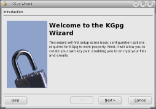
When you start KGPG for the first time, it presents a Wizard which helps
you to set up GPG. It's OK to follow the defaults. The final step, and the
one we're interested in, is the key generation dialogue.
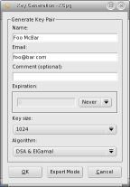
KGPG's key generation dialogue contains the common defaults, all you need
to do is enter your name and e-mail address in the appropriate areas, and click
OK. Note that "Expert Mode" provides you with a shell, and runs GPG for you.
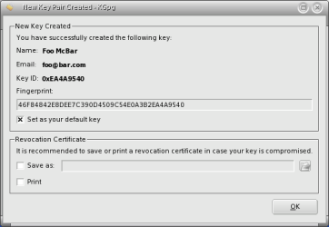
KGPG then presents you with a dialogue containing your signature's Key ID
and Fingerprint. It also offers to create a Revocation Certificate. You should
use this option - the best option is to chose "Save as", move the file
somewhere safe, and delete it from your computer. This is an option I wish I
had taken advantage of - there are two old keys belonging to me floating around
that I wish I could get rid of!
If you want to generate a Revocation Certificate at any later stage, simply
right click on the key in KGPG's Key Management window, and select "Revoke Key".
Starting with GPG
Generating a key pair in GPG is just as easy: using the command gpg
--keygen you are offered the same defaults as in KGPG, simply press the
'Enter' key to accept them and type 'y' followed by 'Enter' when asked "Is this
correct". When asked, enter your name and e-mail address..
Here is a sample key generation session:
[foo@dhcppc0 foo]$ gpg --gen-key
gpg (GnuPG) 1.2.4; Copyright (C) 2003 Free Software Foundation, Inc.
This program comes with ABSOLUTELY NO WARRANTY.
This is free software, and you are welcome to redistribute it
under certain conditions. See the file COPYING for details.
Please select what kind of key you want:
(1) DSA and ElGamal (default)
(2) DSA (sign only)
(4) RSA (sign only)
Your selection?
DSA keypair will have 1024 bits.
About to generate a new ELG-E keypair.
minimum keysize is 768 bits
default keysize is 1024 bits
highest suggested keysize is 2048 bits
What keysize do you want? (1024)
Requested keysize is 1024 bits
Please specify how long the key should be valid.
0 = key does not expire
= key expires in n days
w = key expires in n weeks
m = key expires in n months
y = key expires in n years
Key is valid for? (0)
Key does not expire at all
Is this correct (y/n)? y
You need a User-ID to identify your key; the software constructs the user id
from Real Name, Comment and Email Address in this form:
"Heinrich Heine (Der Dichter) "
Real name: Foo McBar
Email address: foo@bar.com
Comment:
You selected this USER-ID:
"Foo McBar <foo@bar.com>"
Change (N)ame, (C)omment, (E)mail or (O)kay/(Q)uit? o
You need a Passphrase to protect your secret key.
We need to generate a lot of random bytes. It is a good idea to perform
some other action (type on the keyboard, move the mouse, utilize the
disks) during the prime generation; this gives the random number
generator a better chance to gain enough entropy.
+++++.++++++++++.+++++++++++++++++++++++++.++++++++++++++++++++++++++++++..+++++
+++++.+++++++++++++++..+++++.+++++..+++++.+++++++++++++++.+++++>+++++.+++++>
+++++......<++++++++++
public and secret key created and signed.
key marked as ultimately trusted.
To generate a revocation certificate, you can use gpg --gen-revoke.
You need to give GPG some way of identifying which key you wish to create a
certificate for - GPG can make use of several key pairs, which is useful if you
want to keep separate identities for work and private use, or if you use a
pseudonym for whatever reason.
[foo@dhcppc0 foo]$ gpg --gen-revoke "Foo McBar"
sec 1024D/EA4A9540 2004-06-28 Foo McBar <foo@bar.com>
Create a revocation certificate for this key? y
Please select the reason for the revocation:
0 = No reason specified
1 = Key has been compromised
2 = Key is superseded
3 = Key is no longer used
Q = Cancel
(Probably you want to select 1 here)
Your decision? 3
Enter an optional description; end it with an empty line:
>
Reason for revocation: Key is no longer used
(No description given)
Is this okay? y
You need a passphrase to unlock the secret key for
user: "Foo McBar "
1024-bit DSA key, ID EA4A9540, created 2004-06-28
ASCII armored output forced.
Revocation certificate created.
Please move it to a medium which you can hide away; if Mallory gets
access to this certificate he can use it to make your key unusable.
It is smart to print this certificate and store it away, just in case
your media become unreadable. But have some caution: The print system of
your machine might store the data and make it available to others!
Importing Keys
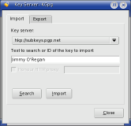
To find a key with KGPG, choose "File->Key Server Dialogue". In the
dialogue, enter the name, e-mail address or Key ID of the key you wish to
import. If there are multiple matches, you are presented with a dialogue from
which you can choose the correct key.
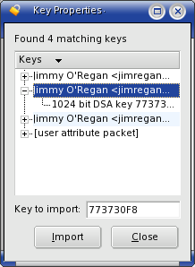
To do this in GPG, use gpg --search-key "Something to find", where
"Something to find" is a name, e-mail address or Key ID. If there are multiple
matches, GPG also prompts you to make a selection:
[foo@dhcppc0 foo]$ gpg --search-keys "Jimmy O'Regan"
gpg: searching for "Jimmy O'Regan" from HKP server subkeys.pgp.net
Keys 1-3 of 3 for "Jimmy O'Regan"
(1) Jimmy O'Regan <jimregan@o2.ie>
1024 bit DSA key 773730F8, created 2004-06-19
(2) Jimmy O'Regan <jimregan@o2.ie>
1024 bit DSA key DA974449, created 2004-06-05
(3) Jimmy O'Regan <jimregan@lit.compsoc.com>
1024 bit DSA key FF5D8291, created 2000-08-22
Enter number(s), N)ext, or Q)uit > 1
gpg: key 773730F8: "Jimmy O'Regan <jimregan@o2.ie>" imported
gpg: Total number processed: 1
gpg: imported: 1
Note that if you don't have a keyserver set up in ~/.gnupg/gpg.conf
you can add the option --keyserver [keyserver]. For example:
gpg --keyserver subkeys.pgp.net --search-keys "Jimmy O'Regan"
If you already have a public key in a file, you can import it into KGPG
using "Keys->Import Key", where you can either enter the file name, or
browse to it. This dialogue also gives the option to import from the clipboard -
I found this useful when I needed to contact Linux Gazette's sys admin, Kayos,
who keeps his key on his contacts
page.
In GPG, to import from a file, use gpg --import filename. Note
that this accepts standard pipes, so there are ways of emulating KGPG's
clipboard input. The way most likely to work everywhere is to use a "here
document":
[foo@dhcppc0 jimmy]$ gpg --import <<EOF
> (paste public key)
>EOF
Getting the contents of X's clipboard came up recently on The Answer Gang, where Ben pointed to his
xclip tip
from Issue 78. To use this with GPG, you could try:
xclip -o|gpg --import
Alternatively, if you use KDE, but don't use KGPG, you could try:
dcop klipper klipper getClipboardContents|gpg --import
Viewing keys
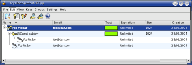
There are no special steps to take in KGPG to view keys or signatures -
the Key Management window displays all of the keys in your keyring. You can
click on the '+' beside each key name to see alternate UIDs, signatures,
photo IDs etc. If you wish, you can have photo IDs appear in the main window
by selecting one of the options in "View->Photo IDs".
In GPG, you can use one of several options, depending on what you want to
view. If you wish to view public keys, use --list-keys; if you wish
to view secret keys, use --list-secret-keys; and if you wish to view
public keys and their signatures, use --list-sigs. With all of these
options, if you specify a name, GPG will print only the details for that name.
Exporting Keys
To export your public key in KGPG, choose "Keys->Export Public Keys", or
type Ctrl-C. This offers to export the key in an e-mail, to the
clipboard, to the default keyserver, or to a file - $HOME/$USER.asc by
default.
In GPG, to export a key, use gpg --export -a [key id]. The
-a option is important if you want to use the key in e-mail, as it
encodes the key in ASCII "armor". If you don't specify the Key ID, the default
behaviour is to export all keys, which is probably not what you want.
Alternate IDs
If you have multiple e-mail addresses, and wish to use the same key for
each of them, you may wish to add an extra User ID. In KGPG, simple right
click on the file and select "Add User ID". This presents you with a
dialogue which asks for a name, e-mail address and optional comment.
In GPG, use gpg --edit-key [key id]. This gives you a prompt
saying Command>. At this prompt, type adduid, and enter
the name, e-mail, and optional comment as prompted.
To add a photo ID in KGPG, right click on the name you wish to add a photo
for, choose "Add Photo", and browse to the location of the file. In GPG, you
must again use gpg --edit-key. This time, from the Command>
prompt, type addphoto. When prompted, type the path to the photo.
It's important to point out that KGPG, or at least KGPG 1.1, as shipped
with Mandrake 10.0, sets a new UID as the primary UID, rather than as an
alternate, as GPG does. To change the primary UID, you must use GPG's edit
mode. Select the number of the UID, following the steps above, and use the
primary command.
Deleting
In KGPG, this is very simple. Select the key or signature you wish to
delete, and press the 'Delete' key. It's not possible to delete all signatures
from KGPG, however - signatures on an alternate UID or Photo ID must be
deleted from the command line. You can quickly gain access to GPG from
"Keys->Edit in Terminal", or by pressing Alt-Enter.
In GPG, to delete a public key, use gpg --delete-keys [key id];
to delete a secret key, use gpg --delete-secret-keys [key id].
To delete a signature, you must again use the edit mode. GPG enumerates the
UIDs of the key for you. To work on an UID, type its number. GPG will then
list each UID again, with an asterisk beside each selected key. Use the
delsig command to delete a signature. GPG will prompt you with each
signature in turn; type 'y', 'n', or 'q' followed by 'Enter' to delete, skip a
signature, or leave the delsig mode, respectively. Simply hitting 'Enter'
chooses the default action, which is to skip the signature.
Key Signing
To sign a key, first import it. In KGPG, choose "Keys->Sign Key(s)";
in GPG, use gpg --sign-key [key id]. Both will prompt you to confirm
this, and both will ask how well you have verified the identity of the owner
of the key. In GPG this appears as:
(0) I will not answer. (default)
(1) I have not checked at all.
(2) I have done casual checking.
(3) I have done very careful checking.
If you cannot say that you have done very careful checking, it is
recommended that you don't sign the key at all. Once you have signed the key,
you should export it, so the owner can import your signature. For more
information on key signing, see the GPG Keysigning Party
HOWTO or Debian's
Keysigning guide.
Encrypting, decrypting and signing
With KGPG installed, you can encrypt any file you wish from Konqueror by
right clicking, and selecting "Actions->Encrypt File"; or by dropping it
onto the KGPG icon in the System Tray. Select the person you wish to receive
the file, and KGPG will create an ASCII encoded version of the encrypted file.
To decrypt, you similarly drag the file onto the System Tray.
In GPG, use gpg -e [filename], and enter the Key ID when prompted.
You can then use gpg --enarmor [filename] to ASCII encode it. Use
gpg --decrypt [filename] to decrypt.
To sign files in KGPG, you must first change the settings to allow it.
Go to "Settings->Configure KGpg"; in the "User Interface" pane, set "Event on
unencrypted file drop" to "Ask" (or "Sign" if you have no intention of using
encryption). This allows you to drop files onto the System Tray for signing.
In GPG, to sign a file use gpg --sign [filename]. You may ASCII
encode this, as for encryption, if you wish to email the file.
Conclusion
I hope someone out there finds this useful - if even one KGPG user finds a
corresponding GPG command using this, I'll be happy. If anyone found it useful
as an introduction to either KGPG or GPG, feel free to send me encrypted e-mail
- my public key is available here. Until
next time, take care!
P.S.
I'd like to take a moment to correct an error in
last month's article on Mozilla extensions, and
to thank those who pointed it out.
Mentioning PopUpALT, I said "This feature, which was present in Netscape
4, was removed from Mozilla for some unknown reason." What I meant to
say was "for some reason I haven't discovered".
Marcin Gil was the first to write, saying "The PopupALT was probably
removed from Mozilla because (as my memory recalls correctly) the ALT
attribute is for screen readers, text browsers etc. Such a use is recommended
by W3C in XHTML specs (I think Jeffrey Zeldman writes it in his book). TITLE
attribute is for popping up texts.."
Crystle clarified this: "In fact, the W3 says that the alt tag should be
used very carefully, and I've seen some really long alt tags - this causes
problems if your browser translates to voice or braille, which is the purpose
for the alt tag.
See: http://www.w3.org/TR/html401/struct/objects.html#alternate-text
To which Josh Ockert added: "The correct behavior is to display the
*entire* value of an alt attribute if the image is not loaded."
Jimmy is a single father of one, who enjoys long walks... Oh, right.
Jimmy has been using computers from the tender age of seven, when his father
inherited an Amstrad PCW8256. After a few brief flirtations with an Atari ST
and numerous versions of DOS and Windows, Jimmy was introduced to Linux in 1998
and hasn't looked back.
In his spare time, Jimmy likes to play guitar and read: not at the same time,
but the picks make handy bookmarks.
Copyright © 2004, Jimmy O'Regan. Released under the
Open Publication license
unless otherwise noted in the body of the article. Linux Gazette is not
produced, sponsored, or endorsed by its prior host, SSC, Inc.
Published in Issue 104 of Linux Gazette, July 2004
Inter-Process Communication - Part 1
By Hiran Ramankutty
Scope
The purpose of this article is to get the readers familiar with the different
mechanisms that are available for communicating between two or more processes.
This may also serve as a tutorial for the novice programmer. There might be
several good tutorials on this subject, but here I will try to communicate my
explorations of this subject. This article may not be technically perfect.
Please send your suggestions and queries to  .
.
Introduction
Inter-Process Communication, which in short is known as IPC, deals mainly with
the techniques and mechanisms that facilitate communication between
processes. Now, why do we need special separate mechanisms or techniques for
communicating between processes? Why isn't it possible to have information
shared between two processes without using such special mechanisms?
Let us start from something primitive. Imagine you have two glasses completely
filled with water. One glass contains hot water and the other contains cold
water. What can you do to make the temperature of water in both the glasses
equal? The simplest answer will be to mix the water from both the glasses
in a glass with much bigger capacity. Once water is mixed, the temperature
becomes equal after some time. If one can remember, this will be framed as a
problem with some numerical data in a High-School Physics examination. If we go
by principles, then the phenomenon here is conduction. If we go by our topic of
IPC, then we can say that since the two glasses were full, we had to use another
glass with a larger capacity to mix the contents in order to balance their heat energy.
Have you ever wondered about the communication medium used in telephones? What
about the blood transporting system in the human body which communicates
blood to different parts of the body? What about my fingers which are
typing this document? My brain is doing so many things at a time. How is it
directing one of my fingers to hit one key and some other finger to hit
another key? How is it synchronizing the typing work that is done by both
my hands? How is it also directing me to type the letters of a word that
are actually coming to my mind?
Don't worry. I am not going to give a class in Biology. But it would be good if
one can imagine a few more situations where we are using inter-process
communication, though not necessarily in the human body or in a computer
program.
So, where are we now? We know that some medium or other is required for
communication between different processes. Similarly, when it comes to computer
programs, we need some mechanism or medium for communication. Primarily,
processes can use the available memory to communicate with each other. But
then, the memory is completely managed by the operating system. A process will
be allotted some part of the available memory for execution. Then each process
will have its own unique user space. In no way will the memory allotted for
one process overlap with the memory allotted for another process. Imagine
what would happen otherwise!
So, now the question - how do different processes with unique address space
communicate with each other? The operating system's kernel, which has access to
all the memory available, will act as the communication channel. Similar to
our earlier example, where the glass with hot water is one process address
space, the glass with cold water is another, and the glass with the larger
capacity is the kernel address space, so that we pour both hot water and
cold water into the glass with larger capacity.
What next? There are different IPC mechanisms which come into use based on the
different requirements. In terms of our water glasses, we can determine the
specifics of both pouring the water into the larger glass and how it will
be used after beign poured.
Basic IPC
OK, enough of glasses and water. The IPC mechanisms can be
classified into the following categories as given below:
- pipes
- fifos
- shared memory
- mapped memory
- message queues
- sockets
Pipes
Pipes were evolved in the most primitive forms of the Unix operating system.
They provide unidirectional flow of communication between processes within the same
system. In other words, they are half-duplex, that is, data flows in only one
direction. A pipe is created by invoking the pipe system call,
which creates a pair of file descriptors. These descriptors
point to a pipe inode and the file descriptors are returned through the
filedes argument. In the file descriptor pair, filedes[0] is
used for reading whereas filedes[1] is used for writing.
Let me explain a scenario where we can use the pipe system call:
consider a keyboard-reader program which simply exits after any alpha-numeric
character is pressed on the keyboard. We will create two processes; one of
them will read characters from the keyboard, and the other will
continuously check for alpha-numeric characters. Let us see how the
filedes returned by pipe can be of use in this scenario:
(Text version: kbdread-pipe.c.txt)
/***** KEYBOARD HIT PROGRAM *****/
#include <stdio.h>
#include <stdlib.h>
#include <sys/types.h>
#include <unistd.h>
#include <pthread.h>
#include <ctype.h>
int filedes[2];
void *read_char()
{
char c;
printf("Entering routine to read character.........\n");
while(1) {
/* Get a character in 'c' except '\n'. */
c = getchar();
if(c == '\n')
c = getchar();
write(filedes[1], &c, 1);
if(isalnum(c)) {
sleep(2);
exit(1);
}
}
}
void *check_hit()
{
char c;
printf("Entering routine to check hit.........\n");
while(1) {
read(filedes[0], &c, 1);
if(isalnum(c)) {
printf("The key hit is %c\n", c);
exit(1);
} else {
printf("key hit is %c\n", c);
}
}
}
int main()
{
int i;
pthread_t tid1, tid2;
pipe(filedes);
/* Create thread for reading characters. */
i = pthread_create(&tid1, NULL, read_char, NULL);
/* Create thread for checking hitting of any keyboard key. */
i = pthread_create(&tid2, NULL, check_hit, NULL);
if(i == 0) while(1);
return 0;
}
Save and compile the program as cc filename.c -lpthread. Run the
program and check the results. Try hitting a different key every time.
The read_char function simply reads a character other than '\n' from
the keyboard and writes it to filedes[1]. We have the thread
check_hit, which continuously checks for the character in
filedes[0]. If the character in filedes[0] is an
alpha-numeric character, then the character is printed and the program
terminates.
One major feature of pipe is that the data flowing through the
communication medium is transient, that is, data once read from the read
descriptor cannot be read again. Also, if we write data continuously into the
write descriptor, then we will be able to read the data only in the order in
which the data was written. One can experiment with that by doing successive
writes or reads to the respective descriptors.
So, what happens when the pipe system call is invoked? A good look at
the manual entry for pipe suggests that it creates a pair of file
descriptors. This suggests that the kernel implements pipe within
the file system. However, pipe does not actually exist as such -
so when the call is made, the kernel allocates free inodes and creates a
pair of file descriptors as well as the corresponding entries in the file
table which the kernel uses. Hence, the kernel enables the user to use the
normal file operations like read, write, etc., which the user does
through the file descriptors. The kernel makes sure that one of the
descriptors is for reading and another one if for writing.
I am not going to go into the details of the pipe implementation on the
kernel side. For further reading, one can refer the books mentioned at the end
of this article.
FIFOs
FIFOs (first in, first out) are similar to the working of pipes.
FIFOs also provide half-duplex flow of data just like pipes. The
difference between fifos and pipes is that the former is
identified in the file system with a name, while the latter is not. That is,
fifos are named pipes. Fifos are identified by an access
point which is a file within the file system, whereas pipes are
identified by an access point which is simply an allotted inode. Another
major difference between fifos and pipes is that fifos
last throughout the life-cycle of the system, while pipes last only
during the life-cycle of the process in which they were created. To make it
more clear, fifos exist beyond the life of the process. Since they are
identified by the file system, they remain in the hierarchy until explicitly
removed using unlink, but pipes are inherited only by related
processes, that is, processes which are descendants of a single process.
Let us see how a fifo can be used to detect a keypress, just as we
did with pipes. The same program where we previously used a pipe
can be modified and implemented using a fifo.
(Text version: write-fifo.c.txt)
/***** PROGRAM THAT READS ANY KEY HIT OF THE KEYBOARD*****/
#include <stdio.h>
#include <stdlib.h>
#include <sys/types.h>
#include <unistd.h>
#include <pthread.h>
#include <ctype.h>
#include <sys/stat.h>
#include <fcntl.h>
#include <errno.h>
extern int errno;
void *read_char()
{
char c;
int fd;
printf("Entering routine to read character.........\n");
while(1) {
c = getchar();
fd = open("fifo", O_WRONLY);
if(c == '\n')
c = getchar();
write(fd, &c, 1);
if(isalnum(c)) {
exit(1);
}
close(fd);
}
}
int main()
{
int i;
pthread_t tid1;
i = mkfifo("fifo", 0666);
if(i < 0) {
printf("Problems creating the fifo\n");
if(errno == EEXIST) {
printf("fifo already exists\n");
}
printf("errno is set as %d\n", errno);
}
i = pthread_create(&tid1, NULL, read_char, NULL);
if(i == 0) while(1);
return 0;
}
Compile this program using cc -o write_fifo filename.c. This program
reads characters (keypresses), and writes them into the special file
fifo. First the program creates a fifo with read-write
permissions using the function mkfifo. See the manual page for the
same. If the fifo exists, then mkfifo will return the
corresponding error, which is set in errno. The thread
read_char continuously tries to read characters from the keyboard.
Note that the fifo is opened with the O_WRONLY (write only) flag
.
Once it reads a character other than '\n', it writes the same into the write
end of the fifo. The program that detects it is given below: (text
version detect_hit.c.txt):
/***** KEYBOARD HIT PROGRAM *****/
#include <stdio.h>
#include <stdlib.h>
#include <sys/types.h>
#include <unistd.h>
#include <pthread.h>
#include <ctype.h>
#include <errno.h>
#include <fcntl.h>
#include <sys/stat.h>
extern int errno;
void *check_hit()
{
char c;
int fd;
int i;
printf("Entering routine to check hit.........\n");
while(1) {
fd = open("fifo", O_RDONLY);
if(fd < 0) {
printf("Error opening in fifo\n");
printf("errno is %d\n", errno);
continue;
}
i = read(fd, &c, 1);
if(i < 0) {
printf("Error reading fifo\n");
printf("errno is %d\n", errno);
}
if(isalnum(c)) {
printf("The key hit is %c\n", c);
exit(1);
} else {
printf("key hit is %c\n", c);
}
}
}
int main()
{
int i;
i = mkfifo("fifo", 0666);
if(i < 0) {
printf("Problems creating the fifo\n");
if(errno == EEXIST) {
printf("fifo already exists\n");
}
printf("errno is set as %d\n", errno);
}
pthread_t tid2;
i = pthread_create(&tid2, NULL, check_hit, NULL);
if(i == 0) while(1);
return 0;
}
Here, again, it first tries to create a fifo which is created if it does
not exist. We then have the thread check_hit which tries to read
characters from the fifo. If the read character is alphanumeric,
the program terminates; otherwise the thread continues reading
characters from the fifo.
Here, the fifo is opened with the flag O_RDONLY.
Compile this program with cc -o detect_hit filename.c. Now run the two
executables in separate terminals, but in the same working directory.
Irrespective of the order in which you run, look for the message fifo
already exists on the console. The first program (either of the two) that
you run will not give any error message for creation of the fifo. The
second program that you run will definitely give you the error for creation of
the fifo. In the terminal where you run write_fifo, give input
to standard output from your keyboard. You will get the message regarding the
key hit on the keyboard on the terminal running the executable
detect_hit. Analyze the working of the two programs by hitting several
keys.
I have used two different programs for exhibiting the usage of fifos.
This can be done within a single program by forking the routines which are
called in the two program as threads. But I did this to show that unlike
pipes, fifos can be used for communication between unrelated
processes.
Now try running the program again. You will get the message that the
fifo already exists even when you first run either of the two programs.
This shows that fifos are persistent as long as the system lives. That
is, the fifos will have to be removed manually - otherwise they will be
permanently recognized by the file system. This is unlike pipes which
are inherited as long as the process that created the pipe is running.
Once this process dies, the kernel also removes the identifiers (file
descriptors) for the pipe from the the file tables.
The usage is rather simple and the main advantage is that there is no need for
any synchronization mechanism for accesses to the fifo. There are
certain disadvantages: they can only be used for communication between
processes running on the same host machine. Let us explore other IPC mechanisms
to see what have they in store.
Shared Memory
Shared Memory is one of the three kinds of System V IPC mechanism which enables
different processes to communicate with each other as if these processes
shared the virtual address space; hence, any process sharing the memory
region can read or write to it. One can imagine some part of memory
being set aside for use by different processes.
The System V IPC describes the use of the shared memory mechanism as
consisting of four steps. Taken in order, they are:
- Fetching an identifier for the shared memory area - shmget (shared
memory get)
- Using the identifier to get the shared memory address - shmat
(shared memory attach),
- Detaching the shared memory area after use - shmdt (shared
memory detach) and
- Finally using the address to control accesses, permissions, receive
information and destroy the shared memory area - shmctl (shared
memory control).
Let us examine the workings of the above system calls. Recall the keyboard
hit program; we shall, once again, see another version of it, this time
using the system calls associated with the shared memory mechanism.
The code given below creates a shared memory area and stores the
information of any key hit on the keyboard. Let us see the code first:
(text version: write-shm.c.txt)
#include <stdio.h>
#include <stdlib.h>
#include <sys/types.h>
#include <sys/ipc.h>
#include <sys/shm.h>
#include <errno.h>
#include <string.h>
#include <ctype.h>
extern int errno;
#define SIZE 1
char *read_key;
int shmid;
int shared_init()
{
if((shmid = shmget(9999, SIZE, IPC_CREAT | 0666)) < 0) {
printf("Error in shmget. errno is: %d\n", errno);
return -1;
}
if((read_key = shmat(shmid, NULL, 0)) < 0) {
printf("Error in shm attach. errno is: %d\n", errno);
return -1;
}
return 0;
}
void read_char()
{
char c;
while(1) {
c = getchar();
if(c == '\n') {
c = getchar();
}
strncpy(read_key, &c, SIZE);
printf("read_key now is %s\n", read_key);
if(isalnum(*read_key)) {
shmdt(read_key);
shmctl(shmid, IPC_RMID, NULL);
exit(1);
}
}
}
int main()
{
if(shared_init() < 0) {
printf("Problems with shared memory\n");
exit(1);
}
read_char();
return 0;
}
Here we have a shared memory variable named read_key. The program
first initializes the shared memory area read_key. This is done by
generating a shared memory identifier shmid using the system call
shmget. In the context of the program, the first parameter for
shmget is 9999, which is the key. This key is used to allocate
a shared memory segment. The second parameter, SIZE (defined as a
macro with the value 1), suggests that the shared memory segment will hold only
one of the type of the shared memory variable, that is, only 1 character. The
IPC_CREAT flag (third parameter) suggests that a new shared memory
segment has to be created, with read-write permissions (IPC_CREAT
logically OR ed with 0666). This will return a valid shared memory
segment identifier on successful allocation. The identifier will be stored in
shmid. If shared memory segment allocation fails, then -1 is returned
and the errno is set appropriately.
The key which is used to get a shared memory segment can be generated
randomly using the built-in function ftok to get a unique key. Refer
to the manual page for the usage.
Once the segment identifier is obtained, we have to attach the shared memory
segment to some address. This is done with the shmat system call.
This uses the segment identifier shmid as the first parameter. The
second parameter is the address of the shared memory segment; when this is
given as NULL (as in this program), the kernel will choose a
suitable address. The third parameter is the flag specification which can
be set if required or left as zero (see man page of shmdt for
details). On success the shared memory segment is attached to
read_key, otherwise -1 is returned along with the appropriate
setting of the errno.
If either shmget or shmat fails, the process terminates. On
success from both system calls, we proceed by invoking the
read_char function, which reads keyboard inputs other than '\n'
("Enter" key) and copies them to read_key in the shared
memory. If the keyboard input is an alphanumeric character, the
program stops reading inputs from the keyboard and the process
terminates.
We have another program running separately (it does not have to be in the
same working directory) in the local system, which tries to read the data
written in the shared memory area. The code is given below: (text version:
read-shm.c.txt)
#include <stdio.h>
#include <stdlib.h>
#include <sys/types.h>
#include <sys/ipc.h>
#include <sys/shm.h>
#include <errno.h>
#include <string.h>
#include <ctype.h>
extern int errno;
#define SIZE 1
char *detect_key;
int shmid;
int shared_init()
{
if((shmid = shmget(9999, SIZE, 0444)) < 0) {
printf("Error in shmget. errno is: %d\n", errno);
return -1;
}
if((detect_key = shmat(shmid, NULL, SHM_RDONLY)) < 0) {
printf("Error in shm attach. errno is: %d\n", errno);
return -1;
}
// detect_key = NULL;
return 0;
}
void detect_hit()
{
char c;
c = *detect_key;
while(1) {
if(c != *detect_key) {
if(isalnum(detect_key[0])) {
printf("detect_key is %s\n", detect_key);
shmdt(detect_key);
shmctl(shmid, IPC_RMID, NULL);
exit(1);
} else {
printf("detect_key is %s\n", detect_key);
}
c = *detect_key;
}
}
}
int main()
{
if(shared_init() < 0) {
printf("Problems with shared memory\n");
exit(1);
}
detect_hit();
return 0;
}
Here, again, we have a shared memory initialization routine, which in fact does
not create a new shared memory segment, but rather tries to get access to
the existing shared memory segment. Compared to the previous program, the
absence of IPC_CREAT flag suggests that we do not have to create a new
shared memory segment. Instead, we simply have to get the corresponding
segment identifier which can be used to attach the existing shared memory
segment to some address. The mode 0444 restricts access to
the shared memory segment to 'read only'. If no shared memory segment
with key 9999 exists, we will get an error, which will be returned
in errno. Once we get a valid identifier, we attach the
shared memory segment to an address. While attaching, we use the flag
SHM_RDONLY which specifies that the shared memory segment will
be available only for reading.
Next, we have the function detect_hit, which checks whether the
pressed key was an alphanumeric character. The first program obviously has
to run first; otherwise, the second program will show errors during the shared
memory initialization, since it would be trying to get the identifier for a
non-existent shared memory segment.
The example shown here doesn't require any synchronization of access to the
shared memory segment. That is because only one program writes into the
shared memory and only one program reads from the shared memory area. But
again, there is a problem here. What if the detection program (second one)
is started long after some user has started hitting the keys (running the
first program)? We will not be able to track the previously hit keys.
The solution for this is left as an exercise to the readers.
The entry in /proc/sysvipc/shm gives a list of shared mermory in
use. Readers can compare the entries before running, during running and after
running the programs. Try to interpret the entry in /proc/sysvipc/shm.
Once the two programs identify an alphanumeric character, they will
terminate. As part of that process, the shared memory area is detached by
using the system call shmdt. In fact, upon exiting the detaching
is done automatically. But the shared memory segment is not destroyed. This
has to be done by invoking the system call shmctl, which takes
the identifier for the shared memory area as an argument, as well as the command
IPC_RMID, which marks the shared memory segment as destroyed. This
has to be done, otherwise the shared memory segment will persist in memory
or in the swap space.
At this point, observation of the entries in
/proc/sysvipc/shm can be very useful. If the shared memory
segment is not destroyed, the entries will reflect this. Try this by
running the program without shmctl.
This is the fastest IPC mechanism in the System V IPC services. However,
the System V shared memory mechanism does not have any kind of scheme to
ensure that one sees consistent data in the shared memory region. That is,
a process can read a shared memory area at the same time another process is
writing to it. The programmer can then come across inconsistent data while
executing the programs. This suggests that accesses to the shared memory
region have to be mutually exclusive; this is achieved via the use of the
semaphore mechanism. We can make the semaphore access the memory region to
lock it and then release the semaphore when done.
The shared memory mechanism can be used when the processes access the shared
memory areas at different times. One may wonder why we can't make the
first process store the data in some file and make another process read the
data from the file. But, reading data from a file involves things like:
- execution of system calls like open, read and close.
- accessing the secondary storage device (generally hard disk) which involves
I/O operations.
These things are not significant if we have a small amount of data to be
read. But when we have large amounts of data stored in a file,
then the load of the two activities mentioned above increases
significantly and there is a considerable amount of reduction in the
performance of the "reading program". This, again, has a solution, which is the
use of memory mapping - something I'll discuss at another time.
Conclusion
We have seen the use of the primary IPC mechanisms, and also one of the System
V IPC mechanisms. We have seen some simple uses for pipes, fifos, and the
shared memory mechanism. But one may come across some very complex
programs where these mechanisms will have to be used in a very strict and
precise manner. Otherwise, the program along with the programmer, will be
dumped to /dev/null. There are still more things to be learned,
not only for you but also for me. I shall come up with more in the next
part, in which we will explore semaphores, message queues,
memory mapping and sockets, and probably try to solve a few
practical problems.
![[BIO]](../gx/authors/ramankutty.jpg) I completed my B. Tech in Computer Science & Engineering from a small town
called Trichur, in Kerala, God's Own Country in India. Presently I am
working in Naturesoft Pvt. Ltd, Chennai, India as a Programmer. I spend my
free time reading books on Linux and exploring the same. Also, I have a
good appetite for Physics. My motive in life is to go forward, onward and
upward.
I completed my B. Tech in Computer Science & Engineering from a small town
called Trichur, in Kerala, God's Own Country in India. Presently I am
working in Naturesoft Pvt. Ltd, Chennai, India as a Programmer. I spend my
free time reading books on Linux and exploring the same. Also, I have a
good appetite for Physics. My motive in life is to go forward, onward and
upward.
Copyright © 2004, Hiran Ramankutty. Released under the
Open Publication license
unless otherwise noted in the body of the article. Linux Gazette is not
produced, sponsored, or endorsed by its prior host, SSC, Inc.
Published in Issue 104 of Linux Gazette, July 2004
Design Awareness
By Mark Seymour
Not Just Sizzle
In musing on what might be the most basic design concept, thus determining
where to begin this column, I realized that I first need to discuss something
even more fundamental than design: content.
As a designer, your job is to recast data into information
structures that tantalize, entice, excite, and visually please, as
well as actually inform. The classic bad example of this might be the
annual report, where pages of snappy color photography in the front are
often intended to distract from the pages of dreary numbers in the back.
Yet, occasionally, you find a designer who can make both sing, where the
data isn't merely presented (usually as acres of tiny and barely
differentiated type) but honed and arranged such that the reader can not
only find the pertinent information but easily decipher it and even, in
rare cases, enjoy the process of understanding it.
The web, more so than print, has become differentiated into areas of
information and areas of style. Traditionally, the cost of full-color
printing has prevented self-indulgent design, except for the occasional
self-promotion piece. By contrast, the threshold cost of publishing on the
Internet is laughably low, and it is all too easy for design to show up
with little if any content attached to it. Unfortunately, some of the
latter has been created for companies who, if they had to pay to deliver
the same information in printed form, would never agree to such simplistic
and often anti-informational work.
There are sites, of course, which provide more than enough content to make
irrelevant their design, or lack of it:
http://www.google.com
http://www.irs.gov
There are also sites we will go to, no matter their level of design or
even usability. Having been unemployed recently, I found this site
functional, though painful graphically and informationally. While the
server occasionally goes down (during, of course, those exact hours when
you want to use it), you go back later because you must:
http://www.dli.state.pa.us
There are also sites which may not be very well designed (to my eye, at
least), but provide enough genuine content to make ignoring their faults
worthwhile:
http://www.weather.com
http://www.smithsonian.org
http://www.chemie.fu-berlin.de/chemistry/general/units_en.html
http://www.mapquest.com/
Conversely, there are designers who create sites where the lack of
content is almost irrelevant. These approach that line where design segues
into art, a line both diffuse and ill-defined; whether you like their
styles or not, you must admire their skill:
http://www.tokyoplastic.com
http://2advancedstudios.com
http://pixelranger.com
http://e-sh.ru
Sometimes, of course, making an incredible image in Flash may be just what
is required. In most cases, however, the central requirement is an
efficient transfer of information, which can be formulated as
data x structure = information
As the designer, and thus the person responsible for the structure, how
can you maximize the efectiveness of the data in this equation? If you are
the owner and/or originator of the material, you will have already made
critical decisions about its purpose: is this to be a showcase for artistic
talent (whether yours or someone else's), or a method of educating the
reader? Asking these questions is the very beginning of the design process.
If a company or an organization or some other group is running the
show, you will need to take them through the analytical processes that form
the basis for any design: What is the target audience? What needs to be
communicated to them (things like assembly instructions, event schedules,
on-going news, political advocacy, historical facts, product warnings, and
plain old funny stuff)? Does this connect with other information that your
readers will either instinctively want to know or be shocked or persuaded
into wanting to know based on the initial material? Are there archival
structures, whether simple link lists (e.g., the Linux Gazette archives) or more complex
systems (like the Smithsonian site above) that provide useful material for
further study? Is there raw data (statistics, maps, reports, photographs,
charts, video) that needs to be readily available, yet not directly
incorporated into the design? Is there other information that is required
by law, suggested by industry practice, or just worthwhile offering to your
readers as a public service?
[ Editor's note: if you're a Web site designer, you
need to be aware of WCAG and Section 508 accessibility requirements; these
are becoming mandatory in many situations. For more info and a free
compliance validator, see http://www.cynthiasays.com/. ]
Answering these questions will immediately add data to your equation.
Properly designed, too much data is rarely a problem. If your material is
going to be published electronically, whether on the internet or on CD or
DVD, it's now become so cheap to add information to your publication
directly, or provide links to it elsewhere, that not doing so creates
unnecessary customer dissatisfaction. While printed material doesn't
produce the same expectation among consumers, adding a URL to a site that
does provide it is always a plus.
What should you do if there just isn't enough data? If it's your own site,
you have either decided it is purely for entertainment purposes, or you
need to redefine your intentions and go back through the question list
above. If it's a corporate site, you may need to approach someone higher
up the food chain and get them involved in the process; the people you've
been working with may not understand the complexities of the situation, or
the dangers of getting a review like the one voiced by Strother Martin in
Cool Hand Luke: "What we have here is a failure to communicate."
Now that you have the data, and hopefully more than enough of it, it's
time to do all the prep work that data requires before you begin to apply
any design to it. Has the data been checked, by someone who actually knows,
for completeness and correctness? This includes criteria like: Is it up to
date? Is it legally acceptable (most companies have review staffs of
lawyers and regulatory experts who must sign off on anything before it's
published)? Does it meet accounting or other professional standards
(especially in the case of an annual report or other financial documents,
but it equally applies to other industries like architecture and
engineering)? Then you will need to have it looked at by someone literate
in the language(s) you're working in, for those niggling issues of proper
usage (nomenclature, trademarks, acronyms, and the like) as well as grammar
and spelling.
You did determine if the site needed to be partially or
completely translated into the languages of your expected audiences, didn't
you? If not, now's the time. Obviously, non-English readers could use
Babelfish http://www.babelfish.altavista.com,
though it's no substitute for someone fluent in the target language;
however, relying on your customers to go through the process instead of
just finding a site with better service would be poor reasoning, and a
false economy. You might consider providing a Babelfish translation of your
main pages somewhere on your site as a nod in that direction, a modicum of
user-friendly translation for readers in other language areas. (Why not
"other countries"? Because there are places in every country where they
speak a language other than the obvious one; Spanish and Navajo are
examples of secondary languages with large user groups in this country.
There are also French speakers in Canada and Japanese speakers in Brazil
and English speakers in Guatemala and people for whom English is not their
first language in every major city in the United States. Depending on whom
you're trying to reach, you may need to provide resources in Chinese and
Russian and Arabic, even for US-only audiences.)
If you are using images, were they all legally obtained, and do you
have written copyright and model releases for each one? In these litigious
times, using someone else's image without proper permission can be a costly
mistake. What trademarks do you reference, and to whom do they belong?
Proper trademark usage is an art all its own; you can find some guidance at
http://www.inta.org, and there are plenty
of printed and on-line sources for advice.
Do not think that these are trivial or unnecessary steps. Going back and
doing it later is always more time-consuming (and expensive), and nothing
makes you look more stupid, both to your audience and your superiors, than
some "how could you have missed that" mistake. Once the data is
checked, and rechecked (because someone always sees the typographic error
the last person missed), break it out into easily found and easily
deciphered files. If you go looking for an important piece of legal
gibberish that must appear on every other page, and what you're looking
for is titled 9arg411foo.lgl04.pdf, and it's on a floppy disk in
the desk drawer of someone who's on vacation, it might take a while to
find.
Next time we will delve into what structure means to a designer, and how
you thus turn all that data into information. (If there are relevant sites
you particularly admire, including your own, please send the URLs along.)
In the meantime, when next you sit down to design, consider the goal: is
it merely to show off the latest software trick, or to communicate matters
of importance to the viewer? (The Linux Gazette site is itself modeled on
information, not glitz; we will analyze its design in later columns.)
Given the lack of real information in this world or, worse yet, the excess
of bad information, it is a noble endeavor, and the mark of a true
designer, to aspire to create it.
![[BIO]](../gx/authors/seymour.jpg)
I started doing graphic design in junior high school, when it was still
the Dark Ages of technology. Bill Gates and Steve Jobs were both eleven
years old, and the state of the art was typing copy on Gestetner masters.
I've worked on every new technology since, but I still own an X-acto knife
and know how to use it.
I've been a freelancer, and worked in advertising agencies, printing
companies, publishing houses, and marketing organizations in major
corporations. I also did a dozen years [1985-1997] at Apple Computer; my
first Macintosh was a Lisa with an astounding 1MB of memory, and my current
one is a Cube with a flat screen.
I've had a website up since 1997, and created my latest one in 2004. I'm
still, painfully, learning how web design is different from, but not
necessarily better than, print.
Copyright © 2004, Mark Seymour. Released under the
Open Publication license
unless otherwise noted in the body of the article. Linux Gazette is not
produced, sponsored, or endorsed by its prior host, SSC, Inc.
Published in Issue 104 of Linux Gazette, July 2004
Taking control of your browsing with Mozilla
By Neil Youngman
Web surfing has more than its fair share of annoyances. I'm thinking
of popups, pop unders, flash and other intrusive ads. Sometimes you
can spend ages waiting for a site to load, when the delay isn't on the
site itself: it's waiting for an ad server to serve up another
irrelevant, bandwidth wasting graphical annoyance.
Fortunately Mozilla, Free Software's most popular browser, has the
solutions. The most effective option is the Adblock plugin, which can
be combined with the built-in popup blocker to block practically all
unwanted ads. Mozilla also has an option to block images from specific
sites.
NOTE: If you're not yet a card carrying Penguinista, there is nothing in this
article that is Linux specific. All the options described here should work as
described under all operating systems supported by Mozilla. It should
also work with recent versions of Netscape.
The Adblock plugin
The Adblock plugin is probably the most comprehensive solution to annoying ads
in Mozilla. Due to its power and flexibility it takes a little more work
than some of the other options to set up, but it's really not that difficult.
If you do find it too complicated, then start with the other options
described below.
To install Adblock go to the installation page
and follow the links from there. At the time of writing there are only
development builds available. Following the link to "Dev. Builds", you should
find a link that's called something like "Adblock 0.5 d2 nightly 35". If you
click on this, it should prompt you to ask whether to install the plugin.
If you accept the installation, the next prompt asks if you want to
install to your profile. Clicking 'Cancel' attempts to install to the
system wide chrome directory, for which you need to have the necessary
privileges. If you do not, it offers to attempt to force the
installation.
If the software installation doesn't activate when the link is
clicked, it may be disabled in your configuration. To fix this, go to
"Edit->Preferences->Advanced->Software installation", check "Enable
software installation", and click OK. You should now be able to go
back and complete the installation.
Once the plugin is installed Mozilla must be restarted to activate it.
You should now see "Adblock" underlined in the bottom right hand corner of
your browser, and the tools menu should have an Adblock submenu. If that's all
there you are ready to start using Adblock.
The principle behind the Adblock plugin is that you can tell it block
URLs (web addresses) matching a certain pattern. So for example, if
you enter the pattern /adserver/, then
http://example.com/adserver/annoying_flash.swf will be blocked. An
asterisk will match any texts, so the pattern *://*annoyingads.com/
will block anything in the domains annoyingads.com and
veryannoyingads.com.
The question now is, how do you select which patterns to block?
I suggest starting by picking a site that you like, but which suffers from
having too many ads. Once the page has loaded, clicking on the "Adblock" text
in the bottom right hand corner will popup a list of blockable items in the
current page. The ads are usually very obvious. The addresses will contain
names related to advertising. Click on one of these and edit it down to a
suitable pattern, then select another page from the site and see if it's
blocked the right things.
Some care must be taken in your choice of patterns to block. Simply selecting
"ads" as a pattern will block http://example.com/downloads/ as well as
http://toomanypopups.com/ads/, whereas the pattern "/ads/" will only block
directories called ads.
Don't spend a lot of time setting this up initially. Just web surf as normal
and setup a few more filters whenever a site takes too long to download or
you are annoyed by popups and other ads.
Popup Blocking
The simplest option provided by Mozilla is popup blocking. The Adblock
plugin isn't 100% effective at blocking popup ads, so you may find
this option a useful addition. Popup blocking can also be used on its
own and it is highly effective at blocking popups, but it will not
block ads in the main window.
The main downside to popup blocking is that some sites rely on popups
for their operation. When a function on a site isn't working, it is
important to remember that you have blocked popups and to see if
unblocking popups for that site solves the problem.
To enable popup blocking, go to "Edit->Preferences->Privacy And
Security->Popup Windows", check "Block Unrequested Popup Windows",
and click OK. You can unblock popups for specific sites by selecting
"Tools->Popup Manager->Allow Popups From This Site". You don't
have to unblock all popups to get one site working.
There are also options to have Mozilla play a sound or display an icon when it
blocks a popup, which may help to remind you that popups are blocked when a
site isn't working as expected.
Blocking images from a specific server
It is also possible to block some ads by clicking the right mouse button on an
image and selecting "Block images from this server". This option will not
always be available, e.g. the shockwave plugin replaces this menu, so this
can't be used with Flash movies.
I would recommend using the Adblock plugin, rather than this option.
Alternate solutions
If you want a solution for other browsers, or you just want to check
out the alternatives, take a look at privoxy, which can be found at
http://www.privoxy.org/.
![[BIO]](../gx/authors/youngman.jpg)
Neil is a programmer, specialising in C++ on Unix and Linux. He has degrees
in Computer science and Next Generation Computing.
Neil has worked on a wide range of systems from the control system for the
British Gas national grid to video servers for the Home Choice video on
demand service. He first programmed computers in 1980 with his school
General Studies class, which was allowed access to a mainframe at The
National Institute of Oceanography, programmed in Fortran on punch cards.
A computer science degree followed at Queen Mary College, London, then Neil
worked for Logica for 3 years before taking an MSc in New Generation
Computing at Exeter University.
The next 5 years saw Neil researching parallel simulation algorithms at the
Royal Signals and Radar Establishment, initially on transputers and
subsequently on SPARC based parallel systems. Since leaving RSRE, Neil has
mostly worked freelance and has worked on financial data feeds, video
servers and virus scanning proxies.
Neil first used Unix at college in 1982 and started working on Linux in
1996.
As of May 2004, Neil is working for Wirefast a global messaging company.
Outside of computing, Neil is into motor sport, particularly Formula 1, the
World Rally Championship and the British Touring Car Championship. He
doesn't race himself. If you've seen Neil's driving, you'll understand why.
Copyright © 2004, Neil Youngman. Released under the
Open Publication license
unless otherwise noted in the body of the article. Linux Gazette is not
produced, sponsored, or endorsed by its prior host, SSC, Inc.
Published in Issue 104 of Linux Gazette, July 2004
Ecol
By Javier Malonda
The Ecol comic strip is written for escomposlinux.org (ECOL), the web site that
supports es.comp.os.linux, the Spanish USENET newsgroup for Linux. The
strips are drawn in Spanish and then translated to English by the author.
These images are scaled down to minimize horizontal scrolling.
To see a panel in all its clarity, click on it.
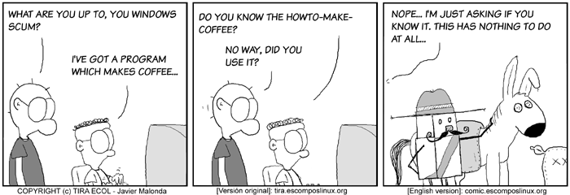
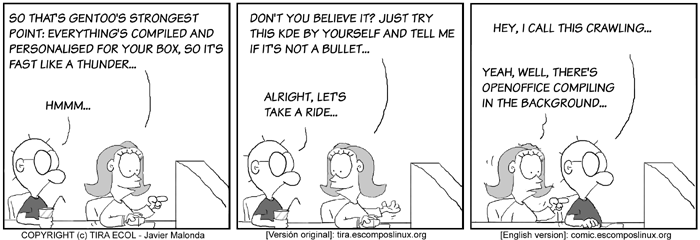
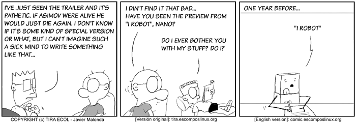
All Ecol cartoons are at
tira.escomposlinux.org (Spanish),
comic.escomposlinux.org (English)
and
http://tira.puntbarra.com/ (Catalan).
The Catalan version is translated by the people who run the site; only a few
episodes are currently available.
These cartoons are copyright Javier Malonda. They may be copied,
linked or distributed by any means. However, you may not distribute
modifications. If you link to a cartoon, please notify Javier, who would appreciate
hearing from you.
Copyright © 2004, Javier Malonda. Released under the
Open Publication license
unless otherwise noted in the body of the article. Linux Gazette is not
produced, sponsored, or endorsed by its prior host, SSC, Inc.
Published in Issue 104 of Linux Gazette, July 2004
Qubism
By Jon "Sir Flakey" Harsem
These images are scaled down to minimize horizontal scrolling.
To see a panel in all its clarity, click on it.
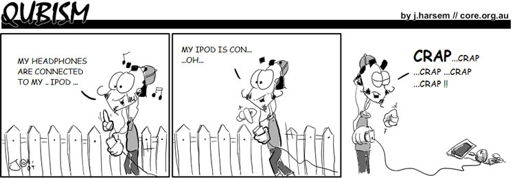
All Qubism cartoons are
here
at the CORE web site.
Jon is the creator of the Qubism cartoon strip and current
Editor-in-Chief of the
CORE News Site.
Somewhere along the early stages of
his life he picked up a pencil and started drawing on the wallpaper. Now
his cartoons appear 5 days a week on-line, go figure. He confesses to
owning a Mac but swears it is for "personal use".
Copyright © 2004, Jon "Sir Flakey" Harsem. Released under the
Open Publication license
unless otherwise noted in the body of the article. Linux Gazette is not
produced, sponsored, or endorsed by its prior host, SSC, Inc.
Published in Issue 104 of Linux Gazette, July 2004
Wonderful World of Spam
(Readers of this might enjoy reading the Confessions of a
Spammer).
Vi-Agra
From: "Ingrown K. Overweight" <Brederveld@crewstart.com>
Subject: Mso i demand an apology
Hey Mso
I have thhe beest neews... this montth i discoovered a place on thhe neet whhere i can geet heaps of dirty cheap vi ag ra its unreal i tell ya.
ohh well ive talked enough already ive put in the link bleow. ejnoy mate this one is on me ;)
http://www.plus66.com/mm/?Mso
Finally, Vi-Agra gets the recognition it deserves!!!
A Cure for Windows Viruses
Converted to Linux, for your c|n>k pleasure.
----- Forwarded message from
Network Security Department <fggopcwv@technet.com> -----
Fine, Go Get Our Punishment - Catch Windows Virus.
SUBJECT: Last Network Security Upgrade
<accent voice=bullwinkle>This time for sure!</accent>
Date: Thu, 13 Nov 2003 15:51:11 +0000
Microsoft Customer
We noticed that you X11 users still buy mice.
this is the latest version of security update, the
"November 2003, Cumulative Patch" update which resolves
all known security vulnerabilities affecting
MS Internet Explorer, MS Outlook and MS Outlook Express
as well as three newly discovered vulnerabilities.
Vulnerabilities for Linux users running IE include extra memory usage
for WINE or VMware, spurious attempts to run activeX widgets, and much
pointing and laughter by your peers.
Vulnerabilities for Linux users seeking to run Outlook include WINE not
liking the latest version much, too. Maybe you'd enjoy balsa or sylpheed.
The most dangerous vulnerability is being possibly saddled with Exchange...
Newly discovered vulnerabilities include a potential for contracting the
gullibility virus. That is, being gullible enough to think someone dumb
enough to send executable attachments in the modern era has any IDEA
what you should install on your computer.
Install now to protect your computer
from these vulnerabilities, the most serious of which could
allow an attacker to run code on your computer.
Take all these antihistamines! (but I'm not allergic to anything right
now) You have to! Right nowwwwww! (Did you know that having too many
*anti* histamines gives most people reactions resembling flu? Thus the
admonitions about heavy vehicle use and so on. What if it gives you the
"my bones ache and I feel queasy" edition of "flu" - then you're stuck - sick.)
Piss-Off-Curious-Newbie-So-They-Will-Never-Run-Linux-HOWTO:
Install Linux right nowwwww. Don't even ask how to partition it or
anything. Just do it!
Folks, if you dunno what you want, why the heck would you think somebody
who can't use a normal and legitimate address for some important announcement
would have any idea what's good or bad for your computer? Do you let
complete strangers off the street tune your car too?
This update includes the functionality of all previously released patches.
This virus contains the hubris of all previously released worm trojan
thingies, since those lunks at the antivirus companies haven't caught me yet.
Microsoft Product Support Services and Knowledge Base articles can be found on the Microsoft Technical Support web site.
http://support.microsoft.com/
True, for what it's worth. Most of their entries regarding linux are
chock full of FUD ranting. But also for the record, so can all of their
*real* updates be found, on the site that they really control.
Think, folks. If MS really was going to bother the world with their
updates, would they:
1. flood the world with heavy spam (attachments)
2. flood the world with light spam (mention a URL for download)
3. install "Update Me" software in their latest OS releases?
Golly gosh. You think that (3) was there for a reason?
Greetings Microsoft Customers.
We wish you to be happy and safe this season.
Please download the security updates promptly at
http://www.microsoft.com/security/
Even if you don't decide to solve it by installing something else that's
less vulnerable. FreeBSD maybe, if you don't like Linux.
Thank you for using Microsoft products.
It makes my virus campaign so much easier when people leave
"Administrator" group privileges on because it's such a pain to turn
them off. (Win2K, WinNT. Maybe WinXP tho I wouldn't know. Never touch
the XP stuff, even worse EULA than the other ones, and the "break when
you upgrade your hardware too much" feature is beyond even viral
programming talent. Stands for Xtremely Painful.)
Or better yet if all users have the same powers, basically to control
anything on the system. (Win9x)
So all you Linux people, if you could run wine as root, then install my
uber bug, I'm kinda hoping for some test sites for a distributed denial
okay? thx suXXerZ!
Please do not reply to this message.
Please do not track down the sysadmin whose open relay allowed me to
bother you nor help him to fix it.
It was sent from an unmonitored e-mail address
Yeah, I'll bet.
and we are unable to respond to any replies.
"we" the predatory insects of the world, in solidarity with the bugs of
our fellow software products...
Any insects out there using Linux, please feel free to protest this
slight to your chitinous cousins
----------------------------------------------
The names of the actual companies and products mentioned herein are the
trademarks of their respective owners.
Copyright 2003 Microsoft Corporation.
PS. Microsoft, please don't get mad enough to send a corporate squad of
hitmen out to clobber this poor lowly worm writer. Respect intellectual
property, we do. Yessssss my preciousssss....
Python
Je ne le crois pas.
Shut up, Ben. It could've happened to Perl too. --Mike Orr
Python Tools
$2200 In Damage Repairs
That's What An Electrician Had To Pay To Replace The Tile He Broke While In=
stalling An Outlet In A Bathroom
Finally There's A Tool That Will Keep This From Happening To You.
-- The Python Perfect Cutter Is Like An Insurance Policy --
Here's the tool that will change the way you cut holes forever. The Perfect=
Cutter not only lets you cut perfect electrical holes, it eliminates the c=
hance of breaking a tile or scratching a wall or any other mistake that cou=
ld cost you as much or more than $2,200. The Perfect Cutter uses a patented=
template system to guide a high-speed router as you make your cut in drywa=
ll, lathe and plaster, paneling, ceramic tile, Corian?, Formica?, whatever!=
Your hands or the tool never touch your customer's walls and it even sucks=
up the drywall dust as it cuts, so no more cleaning up.
-- Customers Love It --
As a professional craftsman you can use the Perfect Cutter to improve produ=
ctivity, increase your customer's satisfaction and generate referral busine=
ss. The holes are straighter, stronger, have a better fit saving energy and=
improving fire safety. And the best part is it does all this and reduces w=
ear and tear on your body, as well as making the most difficult cuts into q=
uick, clean moneymaking ones.
"We've been using the Perfect Cutter for only about a month now and can alr=
eady see how it has helped save us time. And saved time means more revenue.=
"
--- George Bavolak=20
Owner of Bavolak Electric
-- Do You Do Residential Service Work? --
Watch & learn how you can put an easy $12,000 or more in your pocket every =
12 months. Without doing anything more than you're doing now!
Python Tools
Contact us at:
1-800-860-8709
info@pythontools.com
For more information, go to www.pythontools.com or copy and paste http://ww=
w.pythontools.com?area_5=3Dcounters/newsletter1 in your web browser.
If you no longer wish to receive these types of messages, please contact in=
fo@start-thinking.com
New Domains for New Countries
By Heather Stern
----- Forwarded message from Cherry Nolan <f468mmhn@myexcel.com> -----
From: "Cherry Nolan" <f468mmhn@myexcel.com>
To: iwp@oz.net
Subject: Your .EU Domain is for sale vz s yqa
Date: Sun, 14 Dec 03 18:55:44 GMT
--------------
Domain Name News
December 2003
--------------
New domains are being release for
the European Union. The launch of
eu domain names has been approved
and they are expected to go live
in early 2004.
New countries are being created every day! Prussian princes everywhere
will want their very own .eu domain.
Protect your business name by
buying your .eu domain before they
are available for purchase at public
registrars where anyone can buy them.
Become a wealthy Merchant Prince and the talk of the town. Spamtown,
that is.
We are now accepting orders for the
new .eu domains.
http://www.registereu.com/?ref=gold
ref=I_am_a_sucker_sell_my_name_for_gold
See our web site for contact information.
Yours faithfully,
Sales Co-Ordinator
EU Registry Services
http://www.registereu.com/?ref=gold
Glad to meet you Sales. My warlord Procmail would like to get to know
you better. He can put you in a waiting room with a complete harem from
exotic places. Exotic enough to have open relays, at least.
--------------
You are receiving this email because you
have purchased or manage a domain from
us or one of our partners.
We have sent you this mail because we believe you or one of your
penguins have sufficient conquering experience to take over one or more
domains.
If you do not
wish to receive offers from us in the
future, you may optout at
http://www.registereu.com/remove.htm
If you wish to be put on our easily_conquered_nations list, please apply
at the URL above.
jqayon uliefzjtpz voszhgbe quoeawzy uok cpzuq
klaatu barada neko-chan chew on kitty toy.
Honest Spam? Not Quite
[Jimmy]
I received this spam, and thought "Oh, how refreshingly honest. It told me
where my address was harvested from".
Date: Fri, 18 Jun 2004 04:24:45 -0400
From: Making Money 24/7
Subject: money for you this year!!!
Hi JimmyO'Regan!
Just so you know I saw your name in the
newsgroup alt.fan.pratchett. So I emailed you.
Of course, it was still obviously spam. Maybe trying to go back to the
traditional style of spam, where you have actual English instead of V I A
G R A might fool someone, but when you're sending to addresses harvested
from a newsgroup, there's always a chance someone might start
a thread. Of course, anyone who might have been taken in would be
undeceived by the second spam I received from this crowd:
Date: Fri, 18 Jun 2004 06:27:16 -0400
From: Jaye P
Subject: hey, still trying to live day by day?
Hi %Name%!
Just so you know I saw your name in the
newsgroup %Newsgroup%. So I emailed you.
What would you do if you had extra money?
A nice steady flow of income that is
residual month after month? What would
you do if you had a great product to
promote? We show you exactly how it's all
done! We invite you to join our free
mailing list subscription. You will
receive mailings about out products,
business opportunities, ways to make your
profits go through the ROOF, and so much
MORE! All you have to do is send an email
to makeityourday@hotpop.com with the subject
'Please Subscribe Me'.
We look forward to hearing from you soon!
This edition of "The Wonderful World of Spam" has been brought to you by:
Sluggo, Heather,
and Jimmy; courtesy of spammers everywhere.
Published in Issue 104 of Linux Gazette, July 2004
The Linux Laundrette
Introduction
Welcome to the Linux Laundrette. Make sure you remember to separate your
whites and colours, and to take care to wash cottons at low temperatures.
Regular readers might recognise this as the "Not the Answer Gang" section
that Mike occasionally published in the "Back Page" - in fact, most of this is
material that Mike had collected. Well, since Ben has taken over as editor,
we've decided to split this and The Wonderful World of
Spam into their own articles, so that Ben can have free reign over his own
Back Page. There's also a Not Linux
section; I've added this as a supplement, as this material will be part of
the Linux Laundrette in future issues, but there's too much to include in this
month's edition.
"Making Linux More Fun" is more than just a motto; it's our guiding
principle. If The Answer Gang can't make Linux fun for themselves, they won't
have much success making it more fun for others. That's why off-topic posts
aren't shot down in flames, as in other lists. The reason we collect comments
here? Well, see for yourself: they're just damn funny.
So, when we say "send us your tips", feel free to count that as meaning
"send us anything that made you laugh". We prefer Linux related items, but
have a look through some of the older Back Pages to get any idea of whether or
not something unrelated will get a chuckle. Mike's last Back Page is a great example, and gives
pointers to several of the older Back Pages.
Those who read about the Alexis de Tocqueville
Institute in last month's issue might be interested in reading this, and
may be interested in reading about the real
history of
Linux.
Not Linux related, but with great nerd appeal, is the Monty Python Fellowship
of the Ring and The
Two Towers, and anyone who wants to show a new user how to find information
might find this page useful, or if
you're feeling nice, you could tell them to RTFM (which you can also view as a man page - type man man at the
command-line if you don't know what a man page is).
The benefits of being in The Answer Gang
[Rob Tougher]
Has anyone seen the latest author FAQ at LG.com?
They're giving away t-shirts and caricatures to new authors. ;)
[Ben]
Do you folks ever get the feeling that _we_ are the people responsible
for most of the hits at the Linux Ghoulzette site???
[Thomas]
So, umm, when do I get *my* free prize? What's that Ben? Oh, so you
mean that I don't get *any* incentives whatsoever for helping out with LG?
Pah, what a con....
[Jason]
LG.net gives out free t-shirts. You simply go to one of the many custom
t-shirt shops, tell them what you want on it, pay they money, and there
you go! One free (as in speech) t-shirt!
Great minds...
[Thomas]
This is uncanny, Ben. I too, disabled depmod -a for just that reason... I
suppose great minds think alike.
[Jason]
...so do poor minds.
[Ben]
I wouldn't think so. The ratio of correct answers to wrong ones is very
high; this is _why_ great minds (seem to) think alike.
[Jason]
But poor minds *do* think alike. There is simply no other way to explain
football. :-)
[Sluggo]
Was it _Anna Karenena_ that said, "Happy families are all exactly alike.
But sad families are sad each in a different way."
[Sluggo]
Ssshhh, Ben, don't let them think we agree on anything.
[Ben]
Oh yeah. Hate your guts, you capitalist lackey.
Rhubarb
i don't have/use linux at present. i've always been (well for the last 5 years
anyway) interested in linux and i'd rather use it instead of this microsoft
stuff. i am a chef, so i can deal with the rhubarb if you need advice in
return... what is a good system to use when one has little computer knowledge
but is interested in linux rather than that other stuff. i have machine that
works a treat, called a Toshiba Tecra. if this helps your answers at all. it's
the crumble that really lifts the more humble rhubarb recipe. many thanks.
arthur graves
[This hearkens back to the great rhubarb thread. - Mike.]
[Ben]
[laugh] So the rhubarb comes back to haunt us. Never had rhubarb do that
before: a greasy pizza eaten too late at night, yes; rhubarb, never.
[Rick]
Ben, bubeleh, you don't know what you've been missing! Come out to the
Bay Area post haste, and I'll treat you to some of my rhubarb pie.
(Well, wait for summer, for rhubarb to be in season.)
[Thomas]
I don't suppose you could put the recipie for it on your site, could you?
I am a huge fan of rhubarb. Mmmm, rubarb crumble.
Anyhow, happy Shrove Tuesday, all.
I'm off to make pancakes aplenty now
[Rick]
Enjoy them, Thomas. (What do you put on yours?)
[Thomas]
Well, the tradition is for sugar (white or brown) with lemon. However, I
managed to serve up something of a pancake "dinner", which had savoury
pancakes (sausage, cheese, peppers), followed by the sweet variety (to
which we not only had the sugar/lemon combination, but I also like various
jams).
Quoting Thomas
Quoting Thomas Adam:
>
>
>
>
>
>
>
Well, that's easy for _you_ to say!
Testing
From: Faber Fedor
Subject: [Lgang] testing
Did I pass?
[Thomas]
<dpkg> No, Faber, you're not online any more.
[Jason]
Nope: You forgot the "please ignore" bit in the subject line. :-)
[Ben]
(Is this my month to pick on Jimmy, or what?
[Jimmy]
I have been missing for six months; just collecting arrears
The letter R
[Ben] Let's not forget the southward migration of 'r's, either
- whereas people in Boston go pahking theah cahs in the Hahvihd Yahd, Texans
drink soder and pour earl into their engines...
[Sluggo]
- Excuse me, where is the library at?
- Here at Hahvahd, we never end a sentence with a preposition.
- OK, excuse me. Where is the library at, asshole?
That reminds me of my friend from Boston who lived in Seattle for a few years.
He was questioned by somebody who wanted to trip him up on his dropped R's.
- Would you say, 'I parked the car in Harvard Square'?
- I parked the car in Harvard Square. What are you, retahted?
[Ben] A man, visiting Boston for the first time, is eager to
try some of the famous local fish. He jumps into a taxi and tells the driver,
"take me to a place where I can get scrod!" As they drive along, the driver
keeps peering at him in the mirror; when asked for the reason, he replies "I
been drivin' a hack fah twenny-five yeahs, and this is the fahst time I evah
heahd anybody use the past plupehfect tense ah that!"
[Jason]
Kewl, I'm "in". Do I get cool sunglasses like Ben?
Klutz
[Ben]
Yep. It's why my first cut at any possibly destructive operation will
usually use "echo" instead of "rm" or "mv". I've come to recognize and
embrace my inner klutz.
Pedant
[Ben]
By the way - Heather or Adam - do you guys need this stuff
HTML-escaped, or do you do that yourselves?
[Thomas]
Who's Adam, by the way?
[Ben]
<blink> The result of a momentary brain-fart. Sorry. I meant "Thomas",
of course.
[Thomas]
No problem, Okopnik, I was just being a pedant.
[Ben]
Oh - is _that_ the British spelling of "pain-in-the-ass"?
[Sluggo]
Okey dokey, Okie.
[Readying my defenses...]
Wittiness
[Ben]
(Move along, move along. Nothing witty to see here. That's being
reserved for when it's unexpected and devastating.)
Ben and corruption
[Thomas]
I know how John feels. I got roped into doing this all those years ago by
typing in 'Lost Souls' into the (then) new AltaVista search engine.....
[Ben]
...and the only thing you could do after that, of course, is join us.
Logical. However, most of us didn't really _lose_ ours; I got a very
good price for mine, for example. Lots of people wonder how I could
afford to take that 7-year cruise in the Caribbean...
[Thomas]
Ah, so those reports of 'Blackbeard Ben' are true! Pirate ya vast, yarrr
Unwritten rule
[Bradley Chapman]
P.S: If I've broken some unwritten rule, sorry in advance :(
[Thomas]
I'd just finished writing it actually, it said:
Big red alarm button
[Ben Okopnik]
<chuckle> Thanks for saying that, Joerg. That was my original prediction
and the reason for pressing the Big Red Alarm Button, back when we were
talking about leaving SSC's hosting. Our goal is preserve and improve
the Linux Gazette, and keep bringing our usual monthly content to the
folks who appreciate it that way.
[Jason Creighton]
Doesn't anybody else think it looks *awfully* suspicious that Ben knew
what was going to happen *before* it did? And what was he doing with a
Big Red Alarm Button anyway?
[Ben]
Just happened to be my turn holding it. We pass it around, you know;
kinda like the "hot potato" game.
[Jason]
I wouldn't be surprised if it turned out that this whole "CMS" thing was
planed and executed by none other than....execuse me, there's someone at
the door....IT'S YOU!!! NO, WAIT, I CAN EXPLA
[Ben]
<virtuously> *I* have an alibi. I don't know if anyone else here had the
foresight to buy one. Ooops, not exactly what I meant...
[Jason]
You know, if your alibi is *true*, you can get it for free. Either you
got ripped off, or....
A little too harsh?
[JimD]
Please feel free to soften the comments if you feel it's appropriate.
I don't want to sound harsh and I don't want to discourage him.
However, I do want to see more focus and a better end product.
[James Roberts]
Your repentance comes too late! Alas!
Farewell, cruel wor...l...d...d...'
/* splatting sound from 32 floors below */
No, don't hesitate to call it the way you see it. I can take it! I'm a
masochist!
Anyway, it *was* a bit wet.
[Ben]
What, on the pavement on the bottom? I _told_ you you'd catch a cold,
but you insisted on jumping out of that window...
How TAG keeps discipline
[Ben]
Welcome to TAG. If you get too annoying, we'll send our resident
logicians, Guido and Luca, to your house to elucidate a few of the finer
points. Guido even has a cousin who's a patella reattachment specialist,
and will leave his card nailed where you're *guaranteed* not to miss it.
[Jay R Ashworth]
Which floor does Luca live on?
[Ben]
Da basement, o'course. He's a debased individual.
New protocols
[Sluggo]
I didn't understand all the words in Ben's answer so I missed most of
the joke, although I saw it had something to do with "ACK!" and "glug
glug".
[Ben]
"syn/syn-ack/ack" is the TCP handshake - what happens at the TCP level
when two hosts initialize a session. The BTP (Beer Transfer Protocol)
RFC would cover the handshake and the subsequent transfer; I was just
getting the jump on it.
Rick's mail headers
[Rick]
X-Mas: Bah humbug.
Ben's career as a spy
[Sluggo]
Presumably your rewrite has better ideas, more clarity, or more
anecdotes, or you wouldn't have written it. And any articles that come
from you have exemplary spelling/grammar anyway, so (A) they're safe to
publish as-is, and (B) they don't make much work for Rick anyway
(depending on his proofreading strategy).
[Ben]
Why, thank you, Mike! Much appreciated. You'll have to call me a Dirty
Commie just to balance that out.
[Sluggo]
Oh, yeah, I forgot. I've been thinking about work too much. You're a
f***ing communist and a fascist.
[Ben]
Ahhh. I feel _much_ better now; the uncertainty was hard to stand... ya
stinking burgeois exploiter of the working class.
[Sluggo]
I bet you were a
valuable member of the Soviet Writers' Guild. How many prizes did the
apparatchiks award you, bandit?
[Ben]
Just the usual luxurious country villa with plentiful livestock. Oh,
sorry, that was the literal translation; it's actually "flea-infested
dingy apartment" in English.
[Sluggo]
To think, Russia produced writers
like Pushkin, Tolstoy, Paternak and... Okopnik.
[Ben]
Well, you know how it is. One simply _must_ take on students to
perpetuate the fame, and I'm no exception.
[Sluggo]
It all started with those dark sunglasses.... People with dark sunglasses
have something to hide. Especially those that have shifty, beady eyes like
you do. Plus we couldn't overlook your history of sneaking more than your
share of pretzels from the Answer Gang snack jar. It didn't take long to
figure out what you're hiding.
A leak in Ben's boat
[Ben]
... patching a leak that my dinghy has mysteriously developed,
[Sluggo]
Not so mysteriously, heh heh....
[Ben]
I should have known. Wherever there's leaking, hissing, and lots of air
blowing, there you'll be...
Stoned
[Ben]
... should you ever find yourself accidentally stoned - it could happen, you
know! There you'll be, innocently walking down the street, and... -
[Sluggo]
Hey, it does happen. Not full-fledged stoned, but if you run into an
invisible cloud of pot residue, it can be pretty unpleasant if you're as
sensitive to pot as I am. It gets me bloody irritated, that everybody
else has to suffer so a few ppl can get stoned.
[Ben]
Wow. There are people who would _pay_ to have your sensitivity. OTOH,
you probably have it because you _don't_ do it, so it would be
self-defeating.
[Sluggo]
It gets me bloody irritated, that everybody else has to suffer so a few ppl can
get stoned.
[Ben]
"suffer"? Now you've got me curious, Mike. What happens to you when you
get "caught" that way? Whatever it is, it sounds rather unusual; I'd
never heard of anyone likening the effect of pot to suffering.
[Sluggo]
It makes me want to sleep but I can't because these f***ing images in
my head keep me awake. They're different than LSD images but I can't
explain it in words. When it happens, all I can do is (im)patiently
wait for it to wear off. It's worst when it happens in the evening and
there's something important the next morning so you can't afford to
lose the sleep.
I assumed that's what happens to everybody and they for some
inexplicable reason liked it, but then I talked with my roommate who
was a pothead and he said that never happened to him. He said it
prob'ly doesn't agree with my metabolism and that there are three
common reactions to pot, something like calmness, paranoia, and I
forget the third. I guess I have the second or third.
[Heather]
Ugh. Sounds dreadful. I must have the 4th reaction then, because other
than smell like pot (a small I find vaguely unpleasant, like bad ciger
smoke only... grassier?) I get no reaction. Sat one time in a haze
filled room and only wanted one slice of pizza. The cat was stoned. I
wasn't.
[Kapil H Paranjape]
All this discussion leeds me to suspect that TAG has gone to pot.
Or perhaps to weed...oops, I meant seed.
[Ben]
Hey, these are rather high-level matters we're discussing. I mean, I
figure where there's smoke, there's fire... we'll hold a joint inquiry
into it and send the report back up the pipe.
Thomas in seclusion
[Thomas]
Just to let you know that over the next two weeks, I am not going to be
responding to any e-mails on TAG or Lgang.
[Jason]
Yeah, right.
[Ben]
Tisk, tisk, Jason. To paraphrase Mark Twain, "Never tease a man with a
monkey on his back. Sell him a quarter, instead."
Oi!
[Ben]
*Ugh*. You do realize, of course, that the success of a pun is in the
'Oy' of the beholder...
[Sluggo]
Oi?
[Ben]
Don't believe I've ever listened to the stuff. But I have heard many an
"oy".
[Sluggo]
I thought that was ahoy.
Actually, the "oy" of "oy vey" is completely different from the "oi" in:
- (greeting) "Oi mate!"
- (asserting your rights) "Oi, this watermelon is spoiled. I want to
exchange it."
- (to stop somebody who's running away) "Oi! Give me back my cellphone, you
thieving scoundrel!"
(Did anybody notice the Rick Moenism in that last example?)
[Ben]
"Oi, there 'e goes! 'eave 'arf a brick at 'im!"
[Kapil Hari Paranjape]
Which is different from "Oye" as in Hindi. As in "Oye, raaste se hat
ja". (Hey! Get off the road). In other words, much ruder/chummier.
Or "Aiyaiyo" as in Tamil. As in "Aiyaiyo, sapaada illey". (Alas! There
is no food). In other words an expression of despair.
Kapil
God is real, unless declared integer.
d000dZ!!! Hou d0 u hAcK????
[Ben]
i wnAt 2lrn h0w 2 hak. cAN u tech m3 h0w eyE cn crAkc mi hi sChL cumpTr?
(*Then* I bet I could get girls.)
[Jimmy]
Yeah. They'll come for the haxxoring, they'll stay for the help with
their homework.
What's a "bogomips"?
[T.R.]
Uh, what's a bogomips and what's it's relationship to a regular mips?
[Ben]
Well, T.R. - a "bogomip" is actually a term of Deep Hackery, known to
all True Geeks but never discussed outside the circle of The Cabal
(There Is No Cabal.) Only the first part of it is publically known and
somewhat understood - anything described by the term is highly bogus.
[T.R.]
Also, a friend told me that running Linux is illegal. Is that true?
[Ben]
That's actually a *very* good example of a bogomip!
Ben vs. Nature
[Ben]
Well. That was... interesting, in the Chinese sense.
When last I spoke to Heather, she asked me how long the final processing
would take now that I had the Mailbag, etc.; I foolishly replied: "Oh,
no more than a couple of hours at most!"
Murphy heard me.
Almost immediately thereafter, St. Augustine got slammed by an
unexpected front carrying winds of up to (estimated) 70mph. Almost every
boat in the anchorage dragged; one went under the Bridge of Lyons,
breaking its mast. My boat held, despite one of the anchors letting go
(it turned out to have a 60 lb. or so fish trap tangled up in it; the
bottom here has more crap on it than any place I've ever been.)
[Jimmy]
Wow, Ben. You make a natural disaster sound like most people's holiday
postcards.
[Ben]
I spent an uneasy hour or more cutting tangled lines (my boat is more
important than a damn piece of rope) and getting my anchors weighed and
reset - the main hook held fine, and I've just put out two more for the
night.
[Jimmy]
= "Bit of trouble at the airport".
[Ben]
I'm wet, exhausted, muddy from head to foot, and smiling happily
because I've handled this challenge successfully despite its extra
weirdness and difficulty.
[Jimmy]
= "All in all, having a great time".
[Ben]
(Murphy, I don't *give a shit* if you're listening.) The LG will be
published tonight.
[Jimmy]
= "Wish you were here".
Again, wow. You are *rock*.
[Ben]
Thanks, Jimmy! I hope I get to keep my swimming ability, though...
[Jimmy]
Well, I'd have said granite, but I guess you can be pumice
Self-flagellation
[Jay]
I'm going to go climb back into my hole now; please disregard all
earlier traffic.
[Ben]
Be sure to record the self-flagellation severity and times; we'll weigh
it against your sins, and let you know when it's sufficient.
[ 0.25 seconds later ]
...OK, that's enough. Hope that taught you a lesson, young man.
Virtual Beer
[Jay]
I'm really not an asshole.
[Rick]
No, but you do owe everyone virtual beer.
Oh, what the heck; I'll personally spring for a round on the virtual
credit card, for everyone. Enjoy!
[Ben]
Why, Rick! How virtually generous of you! You have my virtual thanks.
[Rick]
Be gentle with those virtual
chandeliers, though.
[Ben]
"Innkeeper! I'll have what the man on the chandelier is having!"
No Slack
[Jay]
I never get cut any slack when *I* use stupid tools, or use tools
stupidly; why should they?
[Rick]
That's our boy! (Jay has gotten in touch with the BoFH within.)
Not So Serious...
[Ben]
The easier way to do all that, instead of typing out those horrendous
names
[Thomas]
...is to proabably goto and use:
http://tinyurl.com
[Ben]
Err... and exactly how would you use that, given the need to process the
actual URL in two different ways?
[Thomas]
One of these days, things'll click into place and people will learn not
to take me so seriously....
Keyboard Wearout
[Jay]
Mine is called psg -- I'm even lazier than you.
[Ben]
Hey, that's a 50% reduction in typing - nothing to sneeze at. If you
consider the amount of wear you've saved, you could probably buy
yourself a new keyboard every 50, 60 years out of the differential...
[Jay]
And note that if you do the greps in the oposite order, you move fewer
bytes.
[Ben]
Yeah, well... my "grep" wasn't doing much but sitting around anyway. I
figured I'd make it earn its salary. Although that _is_ another 50%
saving on electrons... how much is a fusion power plant going for these
days, anyway?
Best of Slashdot
(How To Avoid
Viruses At Windows Install Time?)
[Spoticus]: If you play a
Microsoft CD...
backwards, you can hear satanic messages. But even worse, if you play it
forward, it installs their software!
[hughk]: and play an *BSD CD
forwards
...and you find it full of daemons!!!!
(Gates Comdex
Keynote Shows Plans, Matrix Spoof - screenshots)
[Frymaster]
gates is smith! did you see the market share that guy had by the end of the
series?
[T-Kir]
Longhorn would have to be the Matrix code, constraining humanity and the
problem is choice: which MS don't want people to have.
Plus, the Matrix is due for a critical crash, hmm the parrallels are endless...
[Nailer]: And starring the
Tablet PC...
As Switch. One of the Nebuchadnezzar crew that got killed really early on the
first movie and was promptly forgotten about forever.
[FrostedWheat]
Neo: What is the Matrix?
Morpheus: Unfortunately no one can be told what the Matrix is.
Neo: Why?
Morpheus: My tablet PC just crashed.
[greenskyx] I can't
wait...
For the part where Agent Linux burns Bills eyes out and then he finally can see
all the Linux everywhere...
(429,000
Do-Not-Call Complaints)
[Enigma_Man]
A good friend of mine (who may read this) got a call from a marketer that went
something like this:
TM: Hello, I'm from $phonecompany, and I'm calling to see if you want to switch
your service
FR: I don't have a phone here.
TM: Oh, I'm sorry *hangs up*
I still laugh very hard about that one.
(Cut-Rate
Windows 'XP Starter Edition' in Thailand)
[Gatton] At least they're
prepared...
With about 95% of the country being Buddhist at least they're already
familiar with the concept of suffering
This edition of "The Linux Laundrette" has been brought to you by
Sluggo, Jimmy,
the weird and wonderful cast of the hit mailing list "The Answer Gang", and the
letter R.
Published in Issue 104 of Linux Gazette, July 2004
The Foolish Things We Do With Our Computers
By Ben Okopnik
"Foolish Things" is a now-and-again compilation that we run based on our
readers' input; once we have several of them assembled in one place, we get
to share them with all of you. If you enjoy reading these cautionary tales
of woe, proud stories of triumph, and just plain weird and fun things that
happen between humans and silicon, that's great; if you have some to share
so that others may enjoy them, even better. Please send them to  .
.
[ You can even tell us that it happened
to A Friend of Yours, and we'll believe you. ]
-- Ben
Do Not Fold, Spindle, or Mutilate
[ Name withheld by request ]
...hold on to your chair, and put on whatever you need to survive this.
Its not funny, unless you weren't there, and I wasn't.
Back in 1990.
Seriously, seat belts required. And crash helmets. No, really.
Back in 1990 I was a computer tech guy at a small university campus.
We were switching over from all 5.25 inch drives to some machines having
only 3.5 inch drives, with a few having that old garbagey (if that's a
word) combo floppy drive. Two half-height drives, one a 5.25 and the
other 3.5, all one unit. And a few 'legacy' PCs with a 5.25 inch floppy
drive in them. Some had both sizes of floppy drives, as a separate unit.
A total of 6 computers.
It's finals week, when we don't have to provide tech support to the other
students. Why yes, we had finals too.
So, I'm walking down the hallway and one of the other computer lab guys
walks out of the computer room just as I walk past.
Know what the melting point of titanium is? I don't, but his face must
have beeen giving off that much heat. To use the phrase 'he was livid'
would be a major understatement.
He said to me, between clinched teeth, "Don't ask!"
Brrr... or high temperature frying, takes your pick.
I journey off to class, and try not to think of the horrors that he had
just gone through.
By the next day he had calmed down enough to tell me.
Due to the huge numbers of students, about 200, trying to use the 6
computers, they had to take turns printing. Some had printers at home,
and some didn't. Many still had 5.25 inch floppy drives at home, and no
printer.
One machine with a 5.25 inch floppy drive was kept available, just for
printouts.
The lab guy being there for the other students that night is the one who
should be given a medal. For not harming anyone. He repeatedly said, as
each new person walked into that room, that each person would have to
wait their turn to do their printout and take it to class.
One bright student, not wanting to wait for the one 5.25 floppy drive
computer to become available... folded their 5.25 inch floppy, and stuck
it in the 3.5 floppy drive machine that was available for use.
Yes, folded it in half!
of course, it stuck.
Billy had to get a pair of needle-nose pliers to carefully get the
floppy out and then test the read/write heads, to see if they were
broken.
There were two other people in line waiting to do their printouts on
their 5.25 floppies, for their final term papers.
After Billy spoke a few choice words about the lack of usefulness of
folding a floppy and the miscreant who folded it blamed Billy for lost
homework, the next two came to a startling conclusion.
If folding it is bad, cutting it to fit is okay.
You can stop shaking and/or laughing now. Yes, that was their next
thought. Scary, isn't it? Didn't ask Billy. They just got out a pair of
scissors and trimmed the 5.25 floppies they had.
Yes, they cut their 5.25 floppies to fit the 3.5 inch floppy drive. Cut
it to fit.... eekkkk. Sorry, I'm screaming on the inside.
All three of the miscreants blamed Billy for the loss of their homework.
Our boss told Billy later to not worry about it.
They stormed out of the computer room, and went off to class.
Backups you ask? They didn't have any, and those papers were one-fourth
or one-half of their final grade.
Just a few short minutes later, I walked by.
And the rest was history.
Oh, wanna guess what their major was?
Two of them were undergrad Applied Computer Science majors, and the
other was a grad student, working on his Master's in Applied Computer
Science. I.e., programmers.
I was appalled. That's my major! But I never did anything like that
to a poor defenseless floppy. Dropped books on them yes, but never
folded nor cut them.
A Doggone Chew-tastraphe
Steve Brown
My wife and I decided to spend the weekend away to celebrate our wedding
anniversary, well she decided, I did as I was told. The children were packed
off to Grandma and a dog sitter was arranged, who would ensure that the
mutt (don't confuse with the useful software) was thoroughly entertained in
our absence.
We had a wonderful time, collected the kids on the way back and piled
in to the house to greet our loyal and faithful hound. When we opened the
door there was no rushing 'waggy dog', as the children call him, to meet
us. He seemed very loathe to come out of his basket at all. I was busy
unloading the car when my wife called me in. "Steve", she said in tremulous
tone, "you had better sit down." "Why, what's up? Is the dog dead?" "No",
she said, "he may not have long to live though - he's chewed your
computer!".
I charged in to the dining room where I kept my box, (it's an upgrade - I used
to have to sit in the cupboard under the stairs), and my jaw hit the floor.
Picture the scene if you will - one keyboard, all the keys removed,
partially chewed and placed in a neat pile next to the body (less cord) of
the mouse. Printer and modem power supplies, less leads, in a pile next to
that. Every single wire, apart from the monitor lead, had been removed from
the box and had the connectors/plugs chewed off and discarded.
To add insult to injury, because it was plugged in (but not switched on) the
dog had tripped the RCD on the mains, so the freezer contents had thawed
out. Absolutely gutted.
We had to take the dog to the vet, as he wasn't well shortly after this, it
turns out he had an inflamed colon (there's justice for you) for which the
dog-sitter paid the bill, but he wouldn't replace the leads for me, the
bar-steward.
I've only just got all my stuff together to repair everything, my wife
wouldn't let me sell the dog to make good the damage, I've a sneaky feeling
she was quite pleased as I've been sitting with her in the evenings instead
of 'that damn computer'. Soon sort that out.
Ooo-ooo that smell/Can't you smell that smell...
Charlie Pearce (from the deepest, darkest edges of Dartmoor, England)
A few years ago I purchased a HP8200 USB CD-rewriter as I had no spare drive
bays, and it seemed convenient at the time (though not cheap, that 4x recorder
cost ten times as much as a 52x internal one does today!).
The drive sat happily on top of that mini-tower until some time after I put the
motherboard (along with some extra memory and hard drives) into a larger case, with
plenty of spare drive bays.
It struck me that from the outside, the USB CD-writer looked very much like a
normal IDE cd drive in a fancy shell.... ever the curious (and with no further
research) I took some allen keys to it and took it apart. And as I thought,
inside it was just a normal IDE drive with some USB circuitry plugged into it.
So one Sunday afternoon, I unplugged it all and installed the now liberated
drive into the spare drive bay - after some fiddling with cables and screws (this
ain't a modern case) I made a cup of tea, opened my window to get some air,
crossed my fingers and switched the computer back on...
At which point I noticed a strange burning smell... - panicking, I pulled
the plug and didn't go near the machine for a few days.
In fact, after a couple of days I was in my back garden speaking to my
neighboor when I noticed a small blackened area at the back of their lawn. I
enquired as to what it was, "Oh we had a little bonfire there, just to get rid
of some garden waste." - when was this I asked?
"Sunday afternoon".
Doh! The next day I went back to my computer, booted it, and both the
drive and the rest of machine have worked fine ever since!
 Ben is the Editor-in-Chief for Linux Gazette and a member of The Answer Gang.
Ben is the Editor-in-Chief for Linux Gazette and a member of The Answer Gang.
Ben was born in Moscow, Russia in 1962. He became interested in electricity
at the tender age of six, promptly demonstrated it by sticking a fork into
a socket and starting a fire, and has been falling down technological
mineshafts ever since. He has been working with computers since the Elder
Days, when they had to be built by soldering parts onto printed circuit
boards and programs had to fit into 4k of memory. He would gladly pay good
money to any psychologist who can cure him of the recurrent nightmares.
His subsequent experiences include creating software in nearly a dozen
languages, network and database maintenance during the approach of a
hurricane, and writing articles for publications ranging from sailing
magazines to technological journals. After a seven-year Atlantic/Caribbean
cruise under sail and passages up and down the East coast of the US, he is
currently anchored in St. Augustine, Florida. He works as a technical
instructor for Sun Microsystems and a private Open Source consultant/Web
developer. His current set of hobbies includes flying, yoga, martial arts,
motorcycles, writing, and Roman history; his Palm Pilot is crammed full of
alarms, many of which contain exclamation points.
He has been working with Linux since 1997, and credits it with his complete
loss of interest in waging nuclear warfare on parts of the Pacific Northwest.
Copyright © 2004, Ben Okopnik. Released under the
Open Publication license
unless otherwise noted in the body of the article. Linux Gazette is not
produced, sponsored, or endorsed by its prior host, SSC, Inc.
Published in Issue 104 of Linux Gazette, July 2004

{kind=link}
{kind=link}
{kind=link}
{kind=link}
{kind=link}
{kind=link}